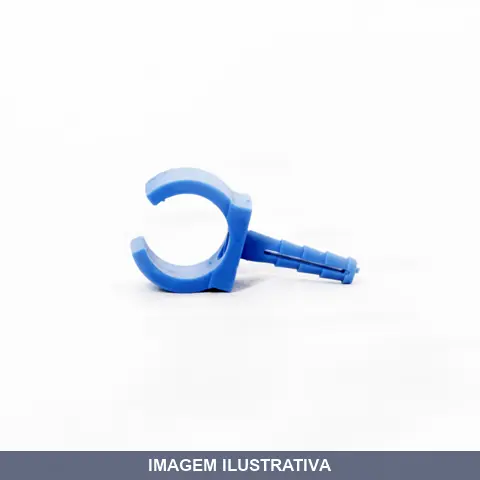
ABRAÇADEIRA SUPORTE TOPAIR DESLIZANTE TOP FUSIOM
Indicação de Uso: Instalação de redes de ar comprimido. Material e Resistência: PPR (polipropileno copolímero random), cor azul conforme norma ABNT 6493, pressão máxima 20 bar. Vantagem Prática: Suporte deslizante que facilita a fixação de tubos em paredes, reduzindo perdas por atrito e eliminando vazamentos e corrosão.
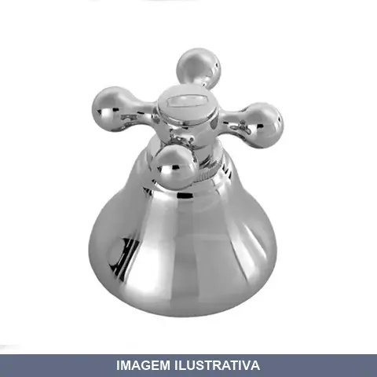
ACABAMENTO REGISTRO C33 CROMADO BLUKIT
Indicação de Uso: Acabamento para registro de água em instalações hidráulicas residenciais e comerciais. Material e Resistência: Cromado, oferece proteção contra corrosão. Vantagem Prática: Facilita o fechamento e controle de fluxo de água com acabamento estético.
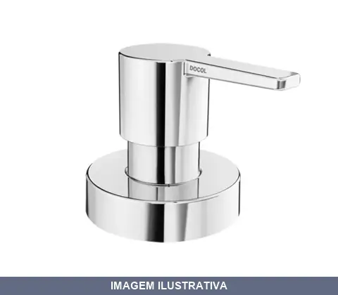
ACABAMENTO REGISTRO DB CROMADO GALI DOCOL
Acabamento cromado para registro de pressão tipo esfera. Material em metal com revestimento cromado que oferece resistência à corrosão. Volante em alavanca que facilita o acionamento e fechamento do fluxo de água. Indicado para instalação em banheiros e cozinhas.
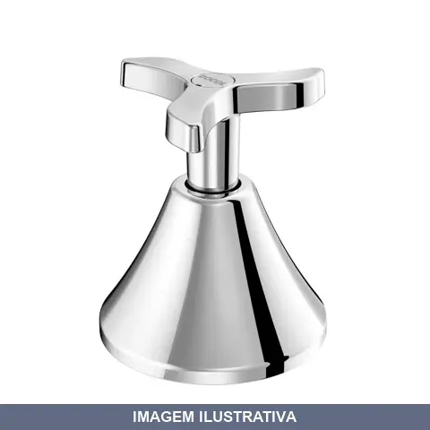
ACABAMENTO REGISTRO DB CROMADO NOVA PERTUTTI DOCOL
Indicação de Uso: Acabamento para registro de água em banheiros e cozinhas. Material e Resistência: Composição em ligas de cobre, plástico de engenharia e subconjunto com tampão. Acabamento cromado polido com resistência à corrosão. Acionamento por volante de três pontas para fácil manipulação. Vantagem Prática: Instalação em parede. Pega facilitada com volante em três pontas garantindo fácil acionamento mesmo com mãos sujas ou
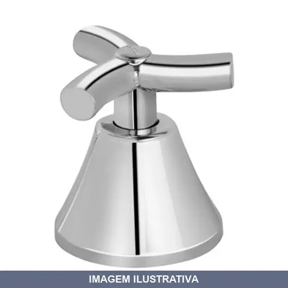
ACABAMENTO REGISTRO DB CROMADO PRIMOR DOCOL
Acabamento para Registro DocolBase em bitola 3/4". Encaixe compatível com bases Docol. Acabamento cromado biníquel com resistência à corrosão. Volante em formato de trizeta para maior firmeza e precisão na abertura e fechamento. Composição: ligas de cobre, elastômeros e plástico de engenharia. Norma NBR 15704-1. Temperatura máxima de água 70°C.
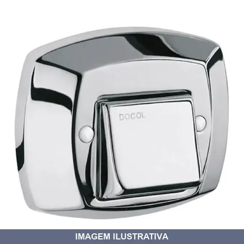
ACABAMENTO VALVULA DE DESCARGA CHROME CLASSICA DOCOL
Indicação de Uso: Acabamento para válvula de descarga instalada em parede em banheiros residenciais e comerciais. Material e Resistência: Ligas de cobre, bronze, latão e plástico de engenharia com acabamento cromado biníquel que resiste à corrosão. Vantagem Prática: Intercambiável com todas as válvulas Docol; permite trocar apenas a parte externa sem necessidade de quebrar paredes ou executar grandes manutenções.
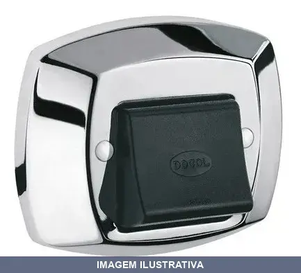
ACABAMENTO VALVULA DE DESCARGA CHROME/BLACK CLASSICA
Acabamento para válvula de descarga linha Clássica em Chrome/Black. Indicação de Uso: substituição e manutenção de válvulas de descarga. Material e Resistência: acabamento cromado com resistência à corrosão. Vantagem Prática: instalação sem necessidade de quebra de paredes.
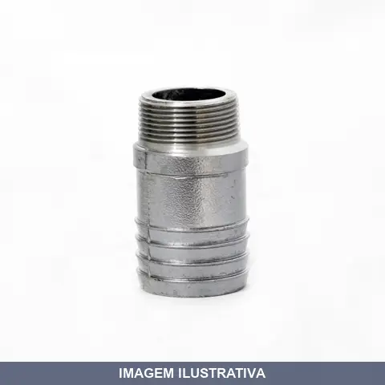
ADAPTADOR ALUMINIO PARA MANGUEIRA RED INVERSA
Adaptador invertido de alumínio com rosca e elevação de bitola 3/4" x 1" para mangueiras flexíveis e tubos de polietileno. Oferece conexão segura e estanque com design de precisão. Indicado para aviários, tanques de reservatório de água e estruturas rurais com aplicações de baixa pressão. Material fabricado em alumínio para resistência à corrosão.
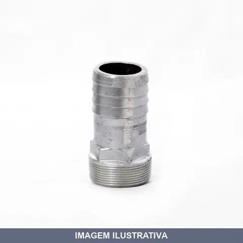
ADAPTADOR ALUMINIO PARA MANGUEIRA RED INVERSA GABITE
Adaptador de alumínio com escama para mangueira em um lado e rosca fêmea no outro, proporcionando redução invertida nas medidas 2" x 3". Adequado para instalações de águas industriais, residenciais e agrícolas, conectando tubos, mangueiras, válvulas, bombas e mangotes. Pressão máxima de serviço: 8 Bar (115 psi) a temperatura ambiente. Roscas de precisão garantem estanqueidade e resistência.

ADAPTADOR ALUMINIO PARA MANGUEIRA X2 RED INVERSA
Adaptador para mangueira confeccionado em alumínio com escama em uma extremidade e rosca na outra, com redução inversa nas medidas 1.1/2" x 2". Indicado para sistemas de irrigação, bombas de água e condução de fluidos em instalações residenciais, agrícolas e industriais. Fornece vedação eficiente entre mangueiras e tubos de diferentes diâmetros.

ADAPTADOR AQ RF CPVC DN
Indicação de Uso: Conector de transição entre tubos Aquatherm e conexões metálicas roscáveis para instalações de água quente e fria. Material e Resistência: Fabricado em CPVC (policloreto de vinila clorado). Temperatura máxima de trabalho 80°C com pressão de serviço de 60 m.c.a. Pressão máxima de 24 kgf/cm² a 20°C. Vantagem Prática: Instalação por soldagem a frio com adesivo. Livre de corrosão e incrustação.
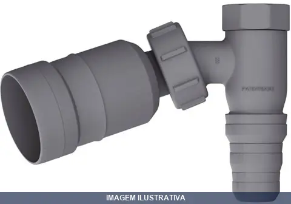
ADAPTADOR ARTICULADO E GRAUS COM RETENCAO BLUKIT
Indicação de Uso: Conexão entre máquina de lavar roupa ou louça e tubulação de esgoto. Material e Resistência: Plástico de engenharia e elastômeros, acabamento cinza; resistente a temperaturas até 90°C; resistência a baixas e altas pressões. Vantagem Prática: Mecanismo articulado facilita instalação em diferentes ângulos; válvula de retenção evita retorno de espuma e odores indesejados;
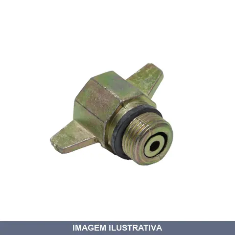
ADAPTADOR BOT R F P- ZAMAC
Indicação de Uso: Adaptador para alterar a rosca de encaixe de botijões de gás de 2kg com rosca fina P2. Material e Resistência: Zamak, próprio para esta finalidade, não enferruja e oferece durabilidade. Vantagem Prática: Compatível com lampiões, fogareiros de camping e trabalhos com maçarico.
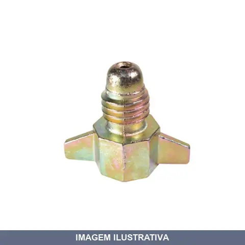
ADAPTADOR BOT R G P- WOLFER
Adaptador para botijão com rosca grossa P13. Possibilita transferência de gás de botijões de 13 kg para botijões menores de 2 kg. Material: Zamac com rosca de entrada 5/8 UNC. Indicado para fogões alta pressão, tachos, fogareiros, maçaricos e fornos.
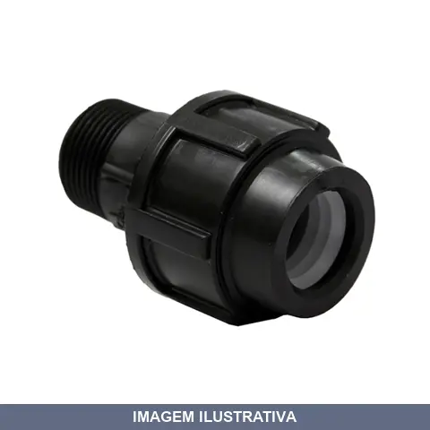
ADAPTADOR COMPRESSAO / POLIERG
Indicação de Uso: Conexão e adaptação de tubulações em sistemas hidráulicos e de compressão de ar. Material e Resistência: Fabricado em polietileno de alta densidade (Polierg), resistente à pressão. Vantagem Prática: Facilita a interconexão de tubos e componentes hidráulicos de diferentes diâmetros.
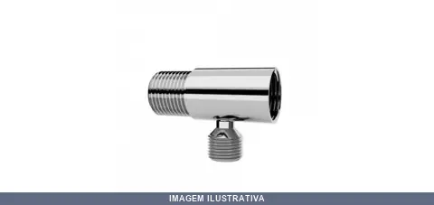
ADAPTADOR DE PAREDE PARA FILTRO BLUKIT
Indicação de Uso: Ligação de filtros em pontos de água. Material e Resistência: Liga de cobre cromado. Resistência a pressão nominal de 100 m.c.a e temperatura máxima de 100°C. Atende à norma ABNT NBR 16368. Vantagem Prática: Não altera a qualidade da água.
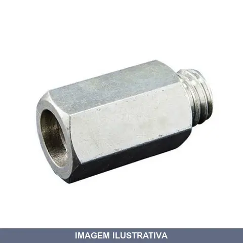
ADAPTADOR ENCAIXE ROSCA M / MAKITA
Indicação de Uso: Adaptador para encaixe em politrizes e esmerilhadeiras com boinas de polimento dupla face. Material e Resistência: Metal. Conexões: Rosca fêmea M14 (encaixa na máquina) e rosca macho 5/8 polegadas (encaixa na boina).

ADAPTADOR ENCAIXE ROSCA M14 MACHOXM14 FEMEA LUBEFER
Adaptador para politriz, lixadeira e esmerilhadeira. Rosca macho M14 e rosca fêmea M14. Fabricado em aço. Indicado para encaixe e fixação de boinas de polimento. Código LUB-5D1.
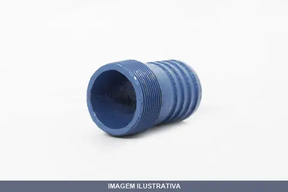
ADAPTADOR FERRO FAL
Indicação de Uso: Instalações de água, gás, vapor, óleo e hidráulica. Utilizado em bombas de água para conectar válvulas a mangotes de sucção. Material e Resistência: Ferro fundido, capazes de suportar grandes pressões. Vantagem Prática: Possui rosca roscável de fácil manuseio para pequenas e grandes instalações desde uso residencial até aplicações em irrigações.
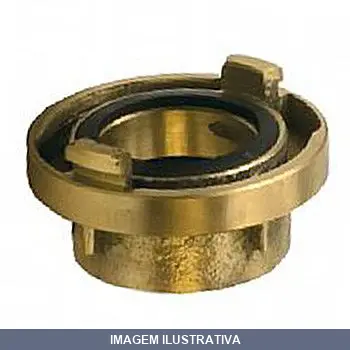
ADAPTADOR LATAO X BELMAR
Indicação de Uso: Adaptador para sistemas de combate a incêndio, hidrantes e mangueiras de incêndio. 1/2" x 2.1/2". Material e Resistência: Latão fundido de alta resistência, com proteção contra corrosão e durabilidade em ambientes severos. Vantagem Prática: Permite conexões seguras entre equipamentos e mangueiras de incêndio, compatível com sistemas Storz.
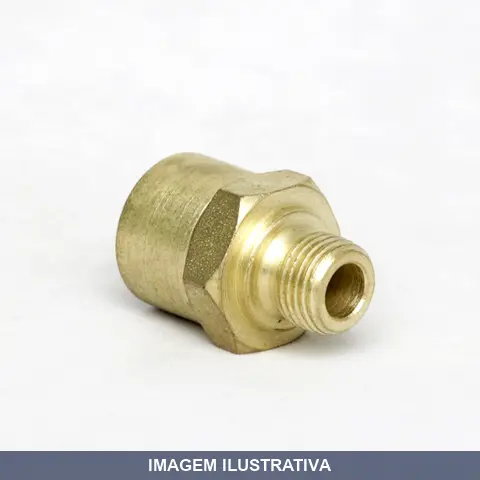
ADAPTADOR M X F , IDE34 MDM
Adaptador rosqueável para conexões hidráulicas ou pneumáticas. Permite interligação entre componentes com roscas diferentes, facilitando acoplamentos em sistemas de tubulação. Indicado para instalações que requerem compatibilidade entre diferentes tamanhos de rosca. Reduz necessidade de peças intermediárias na montagem de circuitos.
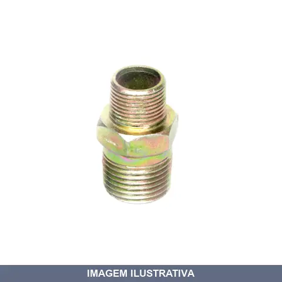
ADAPTADOR MAO DE AMIGO ANTIGO FPPX1/2NPT MDM
Indicação de Uso: Adaptador para conexão de mangueiras em sistemas pneumáticos e hidráulicos, permitindo acoplamento entre diferentes tipos de rosca. Material e Resistência: Fabricado em aço com sistema anilhado; suporta até 400 libras de pressão de trabalho. Vantagem Prática: Compatibiliza mangueiras com roscas distintas, eliminando necessidade de preparação adicional do tubo.
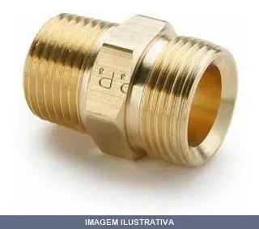
ADAPTADOR MAO DE AMIGO MODERNO FPPXM , MDM
Indicação de Uso: Adaptador de latão com rosca macho e fêmea para conexão entre tubos ou mangueiras em sistemas hidráulicos. Material: Fabricado em latão. Vantagem Prática: Permite a união de conexões com roscas diferentes, garantindo encaixe firme e vedação adequada na instalação.
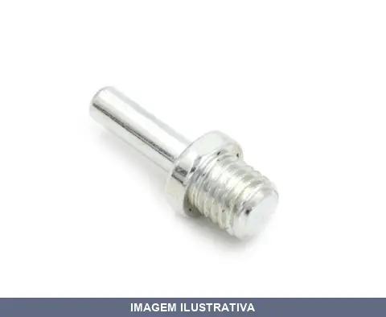
ADAPTADOR PARA SUPORTE DISCO PLUMA LOTUS
Indicação de Uso: Adaptador para suporte de disco lixa para uso em lixadeiras e máquinas rotativas elétricas. Material e Resistência: Fabricado em polipropileno rígido. Compatível com suportes disco lixa ref. 3412-3417 e discos com sistema de fixação tipo pluma (velcro). Vantagem Prática: Permite fixação segura e instalação prática do suporte em ferramentas com rosca M14.
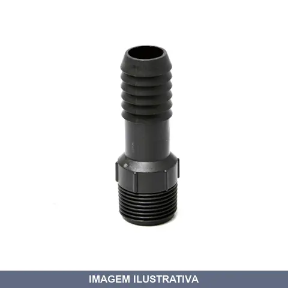
ADAPTADOR POLIETILENO AKATO
Indicação de Uso: Conexão de mangueiras e tubos de polietileno em sistemas hidráulicos de baixa pressão, irrigação, jardinagem e estruturas rurais. Material e Resistência: Fabricado em polietileno, resistente a impactos, pressão e torção, inerte à corrosão e produtos químicos. Vantagem Prática: Instalação por simples encaixe com espigão interno, dispensa ferramentas.
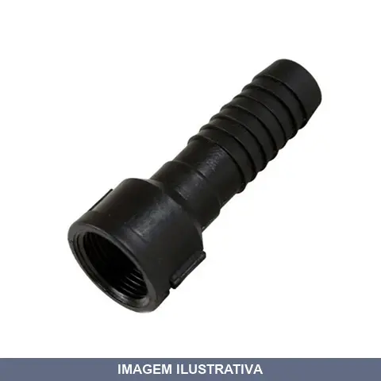
ADAPTADOR POLIETILENO COM ROSCA INTERNO CIPLA
Indicação de Uso: Adaptador para sistemas de hidráulica e irrigação, conectando tubulações e componentes em instalações prediais e industriais. Material e Resistência: Fabricado em polietileno, oferece resistência química e durabilidade em ambientes úmidos. Vantagem Prática: Rosca interna facilita conexões diretas com conexões macho padronizadas.
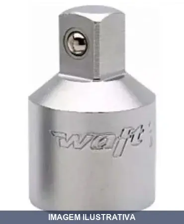
ADAPTADOR REDUCAO PARA SOQUETE /4FX1/ WAFT
Indicação de Uso: Adaptador de redução para uso com soquetes de chave catraca, permitindo conectar encaixes quadrados de tamanhos diferentes (3/4 para 1/2). Material e Resistência: Construído em metal, resistente à pressão. Vantagem Prática: Permite a conexão entre diferentes diâmetros de encaixe, facilitando a compatibilidade entre componentes.
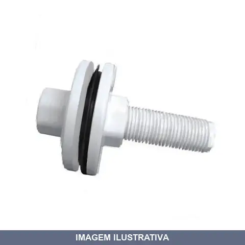
ADAPTADOR ROSCAVEL COM FLANGE LONGO CIPLA
Indicação de Uso: Adaptador rosqueável para conexões hidráulicas e de encanamento com flange, aplicável em sistemas de água, ar comprimido e fluidos em geral. Material e Resistência: Fabricado em material resistente à corrosão, adequado para aplicações em pressão. Vantagem Prática: Facilita a conexão e desconexão rápida de tubulações com segurança e vedação eficiente através do sistema de rosca e flange.
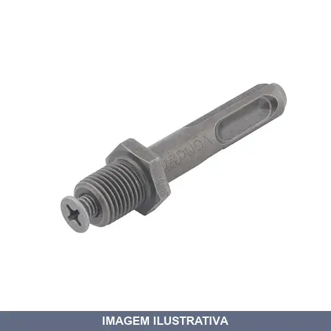
ADAPTADOR SDS-PLUS M VONDER
Indicado para uso em marteletes de impacto com encaixe tipo SDS PLUS para adaptação de acessórios com encaixe M14, como brocas diamantadas, serras copo diamantadas, rebolos diamantados, escovas. Comprimento: 60 mm. Encaixe: SDS PLUS. Rosca: M14. Peso: 0,062 kg. Não indicado para acessórios de polimento.
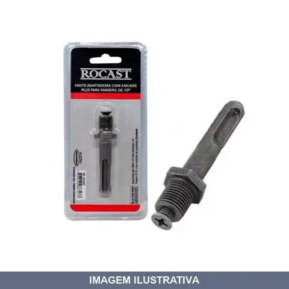
ADAPTADOR SDS-PLUS PARA MANDRIL COM PARAFUSO OF ROCAST
Indicação de Uso: Adaptar mandril tradicional em máquinas com encaixe SDS Plus. Vantagem Prática: Parafuso de travamento previne desacoplamento do mandril durante operação.
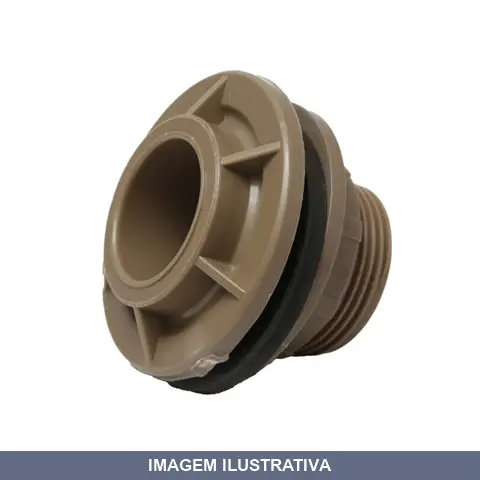
ADAPTADOR SOLDAVEL COM FLANGE KRONA
Indicação de Uso: Adaptador para sistemas de tubulação hidráulica, utilizado para conexão reta entre tubos. Material e Resistência: Construído em material resistente, com flange para fixação segura em superfícies. Vantagem Prática: Conexão soldável que oferece estanqueidade e durabilidade em instalações fixas.

ADAPTADOR SOLDAVEL COM FLANGE TIGRE
Indicação de Uso: Conectar tubulação à entrada e saída de caixa d'água. Material e Resistência: PVC, resistente a intempéries. Pressão máxima de funcionamento 7,5 kgf/cm² à 20°C. Vantagem Prática: Bolsa soldável e bolsa roscável BSP para boia. Acompanha anel de vedação. Instalação rápida e de fácil manuseio.
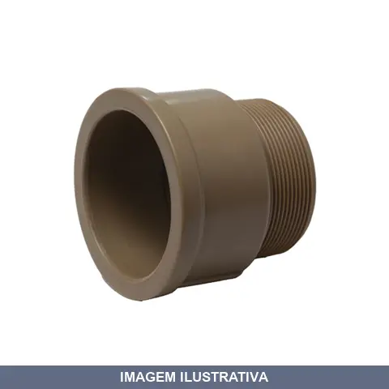
ADAPTADOR SOLDAVEL KRONA
Indicação de Uso: Adaptador para sistemas de tubulação hidráulica e pneumática, utilizado para conexões e emendas de tubos. Material e Resistência: Construído em material soldável, adequado para aplicações que exigem junção permanente por solda. Vantagem Prática: Proporciona conexão robusta e durável em instalações hidráulicas e pneumáticas.

ADAPTADOR SOLDAVEL TIGRE
Indicação de Uso: Conexão e emenda de tubulações em sistemas hidráulicos e de água. Material e Resistência: Plástico soldável, resistente à pressão e à corrosão. Vantagem Prática: Facilita a união de tubos sem necessidade de ferramentas adicionais, proporcionando instalação rápida e segura.
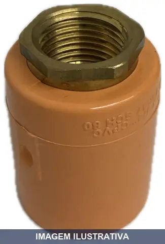
ADAPTADOR TIGREFIRE TIGRE
Indicação de Uso: Adaptador para sistemas hidráulicos e de encanamento, permite conexão entre tubulações de diferentes diâmetros. Material e Resistência: Fabricado em CPVC com rosca de latão, resistente à corrosão e adequado para sistemas de água. Vantagem Prática: Facilita acoplamentos em instalações prediais e industriais com compatibilidade de encaixes.
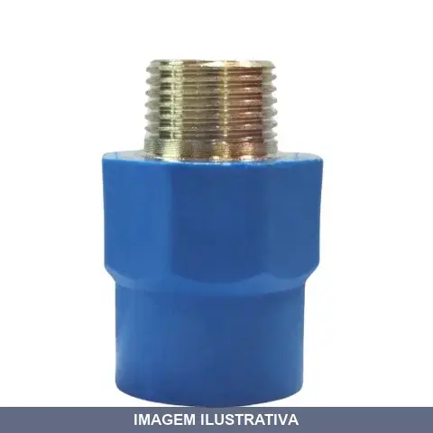
ADAPTADOR TOPAIR / TOP FUSIOM
Indicação de Uso: Conexão entre tubulações e equipamentos em sistemas de ar comprimido. Material e Resistência: PP-R (polipropileno copolímero random). Cor azul conforme Norma ABNT 6493. Pressão máxima de 25 bar. Conexões em latão niquelado. Vantagem Prática: Junção por termofusão sem riscos de vazamentos. Compatível com tubos TopAir.
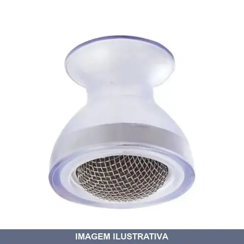
AREJADOR PARA TORNEIRA JAPONES OVERTIME
Indicação de Uso: Arejador para torneira, destinado a reduzir o fluxo de água e incorporar ar ao jato. Aplicação em torneiras de cozinha e banheiro. Material e Resistência: Construção em plástico resistente com tela metálica no bocal. Vantagem Prática: Diminui consumo de água e cria jato mais uniforme e controlado.
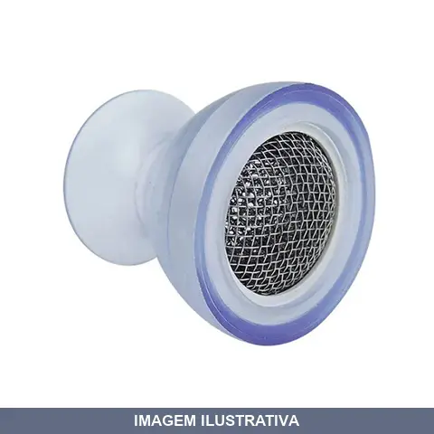
AREJADOR PARA TORNEIRA SC BRASFORT
Indicação de Uso: Arejador para torneira que mistura ar ao fluxo de água. Vantagem Prática: Economiza até 60% de água. Uma torneira comum gasta 14 a 25 litros por minuto, enquanto com arejador gasta 6 a 10 litros por minuto. Reduz respingos e evita desperdício.
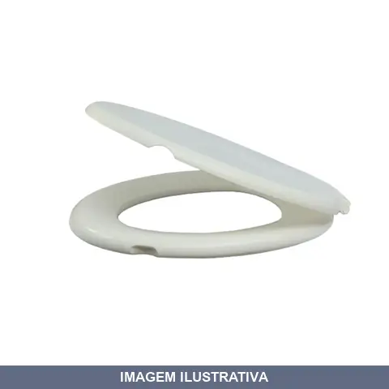
ASSENTO ALMOFADADO BRANCO ALUMASA
Indicação de Uso: Para bacias sanitárias convencionais, proporciona conforto e higiene. Material e Resistência: Plástico em polipropileno, EVA e poliuretano. Assento com espuma interna, cobertura total, acabamento liso e brilhante, resistente a torções e quebra. Vantagem Prática: Abertura higiênica, tecnologia de respiro para reduzir mau cheiro, instalação rápida e simples, fácil limpeza.
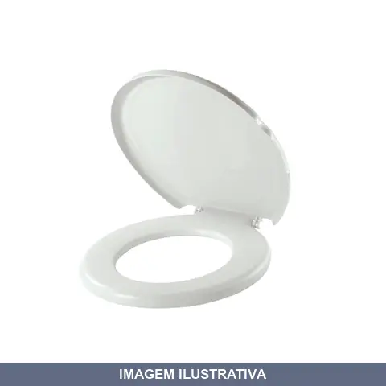
ASSENTO ALMOFADADO BRANCO HERC
Assento sanitário almofadado branco da marca Herc, modelo 2385. Fabricado em EVA preenchido com poliuretano, oferecendo acabamento brilhante e superfície lisa. Suporta carga de até 130 kg. Dimensões: 45 cm de comprimento e 37,7 cm de largura. Compatível com as principais louças sanitárias do mercado. Inclui kit de fixação para instalação fácil na louça.
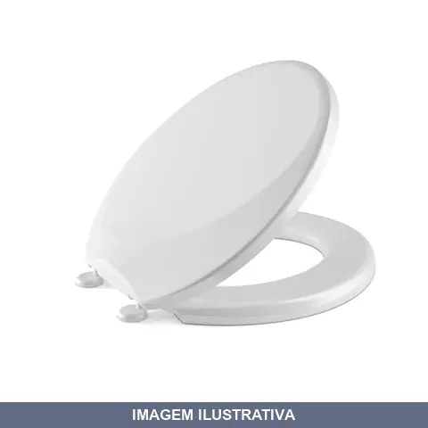
ASSENTO ALMOFADADO BRANCO TIGRE
Indicação de Uso: Assento sanitário para vasos sanitários ovais universais. Material e Resistência: Polipropileno com arco soprado e injeção de poliuretano no interior, acabamento liso e brilhante. Vantagem Prática: Almofadado que proporciona conforto, fácil instalação com fixadores ajustáveis, higiênico e de simples limpeza.
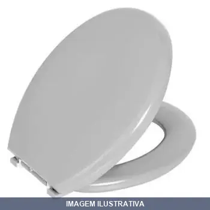
ASSENTO ALMOFADADO CINZA CLARO ALUMASA
Indicação de Uso: Assento sanitário almofadado para bacias de vaso sanitário, proporcionando maior conforto durante o uso. Material e Resistência: Material plástico resistente, com revestimento almofadado na cor cinza claro. Vantagem Prática: Combinação de praticidade com conforto do estofado almofadado.
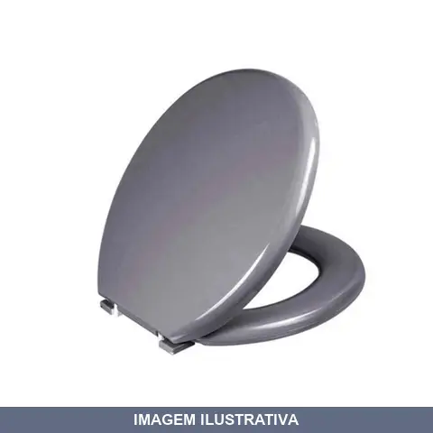
ASSENTO ALMOFADADO CINZA ESCURO ALUMASA
Assento almofadado na cor cinza escuro, modelo Alumasa. Indicado para uso em vasos sanitários, proporcionando conforto ao sentar. Material resistente com revestimento acolchoado.
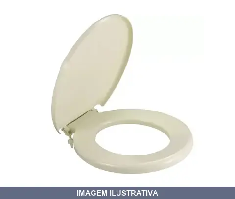
ASSENTO PREMIER BEGE KRONA
Indicação de Uso: Assento para sanitário, ideal para banheiros residenciais e comerciais. Material e Resistência: Construído em material resistente, acabamento na cor bege. Vantagem Prática: Fácil instalação e limpeza, proporcionando conforto e durabilidade ao uso diário.
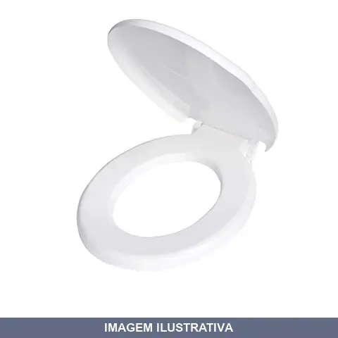
ASSENTO PREMIER BRANCO KRONA
Indicação de Uso: Assento para vaso sanitário, adequado para instalação em banheiros residenciais e comerciais. Material e Resistência: Construído em plástico resistente, com acabamento na cor branca. Vantagem Prática: Fácil instalação e limpeza, com design funcional para uso diário.
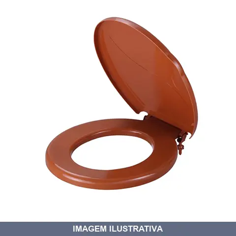
ASSENTO PREMIER CARAMELO KRONA
Assento para sanitário na cor caramelo. Indicado para instalação em vasos sanitários residenciais e comerciais. Material em termofixo, resistente ao uso cotidiano e de fácil limpeza. Sistema de fixação com dobradiças, permitindo abertura e fechamento prático.
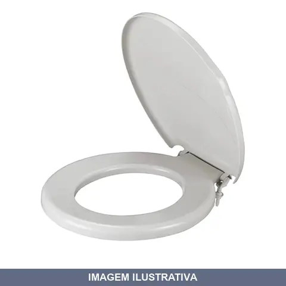
ASSENTO PREMIER CINZA KRONA
Indicação de Uso: Para banheiros residenciais, comerciais e industriais com vasos sanitários ovais. Material e Resistência: Assento e tampa em polipropileno (PP), parafusos em aço inoxidável. Suporta até 130 kg. Vantagem Prática: Tampa envolvente com acabamento liso, facilita limpeza e é resistente a impactos.
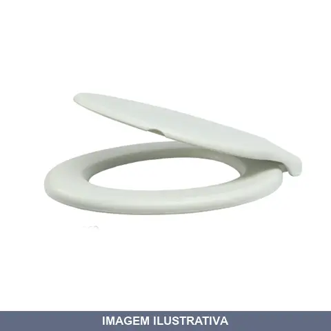
ASSENTO ROMA BRANCO ALUMASA
Assento para vasos sanitários na cor branca com estrutura em polipropileno e dobradiças metálicas. Indicado para instalação em banheiros residenciais e comerciais. Resistente a umidade, fácil de limpar e higienizar.
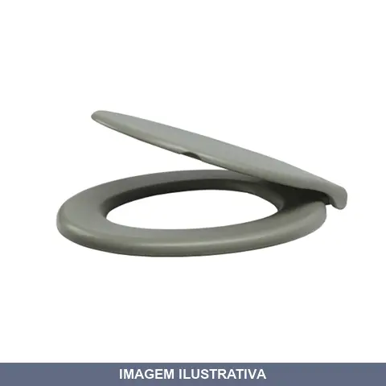
ASSENTO ROMA CINZA ALUMASA
Assento Sanitário Roma cinza para vaso sanitário. Modelo 2284. Fabricado em plástico polipropileno e PVC com acabamento fosco. Dimensões: 43,60 cm de comprimento, 37,50 cm de largura, 4,00 cm de altura (quando fechado). Peso: 0,52 kg. Fixação por parafuso plástico branco. Proporciona praticidade e higiene para o banheiro.
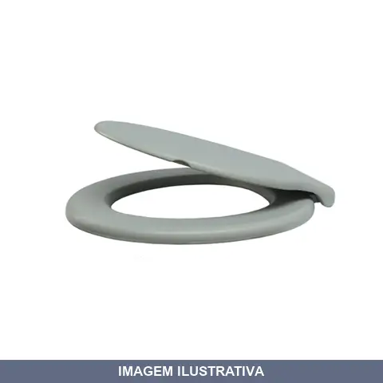
ASSENTO ROMA CINZA CLARO ALUMASA
Assento sanitário para vaso, da linha Roma, na cor cinza claro. Fabricado em polipropileno e PVC, com acabamento fosco. Dimensões: altura 4 cm, largura 37,5 cm, comprimento 43,6 cm. Fixação com parafuso plástico branco.
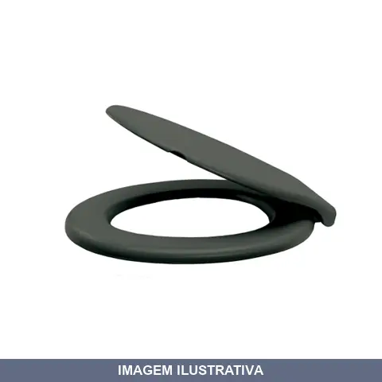
ASSENTO ROMA CINZA ESCURO ALUMASA
Assento sanitário de plástico para vaso convencional. Indicação de Uso: Banheiros residenciais e comerciais. Material e Resistência: Fabricado em Polipropileno e PVC com acabamento fosco. Fixação com parafuso plástico branco. Vantagem Prática: Fácil instalação e limpeza.
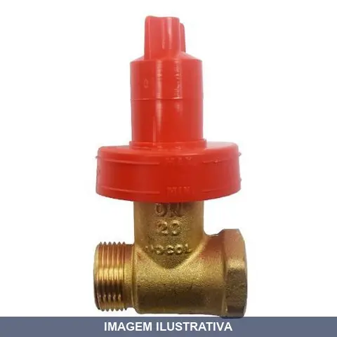
BASE REGISTRO PRESSAO DOCOL
Base registro de pressão rosca macho, indicada para instalação em sistemas hidráulicos e de pressão onde há necessidade de controle e regulagem de pressão. Componente essencial para leitura e monitoramento de pressão em linhas de água, ar comprimido e outros fluidos. Facilita acesso e manutenção em pontos de medição de pressão.
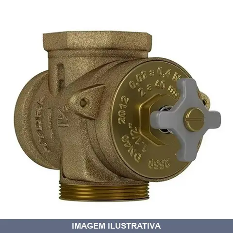
BASE VALVULA HIDRA MAX DECA
Indicação de Uso: Base para válvula de descarga de vaso sanitário, adequada para instalações residenciais e comerciais. Material e Resistência: Liga de cobre (bronze e latão), plásticos de engenharia e elastômeros. Pressão mínima de funcionamento: 2 MCA; pressão máxima: 40 MCA. Norma ABNT NBR15857. Vantagem Prática: Compatível com qualquer bacia convencional, possui regulagem integrada de vazão e facilita manutenção.
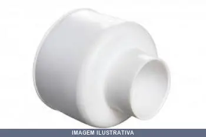
BOLSA LIGACAO VASO SANITARIO TIGRE
Bolsa de ligação para vaso sanitário, na cor branca, para vedação entre o vaso sanitário e o tubo de ligação. Tamanho 1 1/2" x 40mm. Feita em material de borracha resistente a produtos de limpeza doméstica. Fácil de ser instalado tanto no tubo como no vaso sanitário.
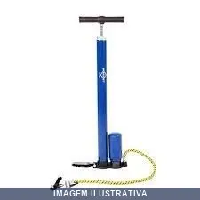
BOMBA AR MANUAL COM TANQUE DUPLO BRASFORT
Indicação de Uso: Inflar pneus, câmaras de ar e objetos infláveis em geral. Material e Resistência: Corpo em aço carbono com pintura em epóxi cor azul, mangueira de borracha. Acompanha adaptadores para bolas, pneus e infláveis. Vantagem Prática: Sistema de tanque duplo que otimiza o enchimento por curso manual.
BOMBA AR PEDALCOM TANQUE DUPLO BRASFORT
Bomba de ar manual com pedal para encher pneus, bolas e infláveis. Corpo em aço carbono com pintura epóxi azul. Duplo cilindro metálico para obter alta pressão com menos esforço. Medidor de pressão integrado com lente de acrílico. Pedal emborrachado. Mangueira de borracha com revestimento azul. Inclui 3 adaptadores (para pneus, bolas e infláveis).
BOMBA DE AGUA KALA
Indicação de Uso: Bomba elétrica para transferência e circulação de água em aplicações domésticas e comerciais. / Material e Resistência: Construção em metal resistente adequada para uso com água. / Vantagem Prática: Design compacto, operação por motor elétrico, acompanha adaptadores e mangueira para diferentes conexões.
BOMBA DE ENGRE ED H EDRAL
BOMBA DE ENGRENAGEM DE 3'' MARCA EDRAL MODELO ED3C132H VAZÃO MAXIMA: 30.000L/H IDEAL PARA BOMBEAMENTO DE DIESEL, ASFALTO, OLEO LUBRIFICANTE, ETANOL, GASOLINA, OLEO LUBRIFICANTE SUJO BIODIESEL, QUEROSENE, OLEO CRU, GLICERINA, GRAVA, ACIDO, RESINA, SOLVENTE, BASES, TINTAS, VERNIZES, XAROPES. MODELO DE GRANDE UTILIZAÇÃO EM CAMINHOES E CARRETAS, OPÇÃO DE ENGRENAGENS EM POLIACETAL OU BRONZE PARA COMBUSTIVEIS INFLAMAVEIS COMO ETANOL E GASOLINA CORPO TOTALMETE EM FERRO FUNDIDO A48 CL30, FLANGES DE ENT
BOMBA DE ENGRE ED RRL EDRAL
BOMBA DE ENGRENAGEM DE 2'' CORPO TOTALMENTE EM FERRO FUNDIDO A48 CL30 Código: ED2X86RRL Bomba de Engrenagens de 2" para transferência de fluidos. Indicada para Caminhões coletores de óleos para reciclagem Aplicações: Sistemas de Transferência em geral Filtro Prensa Sistemas de Lubrificação Caldeiras Caminhões Tanque Máquinas e Equipamentos Hidráulicos Queimadores de Óleo Características: Sucção e Recalque Roscada Ø 2" BSP Engrenagens Dentes Helicoidais Vedação por Gaxeta, Sêlo Mecânico ou Re
BOMBA DE TRANSF LUB LUMAGI
LUB 9013 12V BOMBA ELETRICA TRANF ENGR GARANTIA DE 06 MESES Bomba elétrica de engrenagem para transferência de óleo diesel, com filtro e bico de metal. EQUIPADA COM FÚSIVEL DE 30A ACOMPANHA FILTRO DE SUCÇÃO ACOMPANHA BICO DE METAL VAZÃO: 30 LITROS POR MINUTO
BOMBA ELETRICA BATERIA12 VPLTA BBE RF
BBE12V - BOMBA ELETRICA BATERIA 12VOLTS POLIETILENO PARA OLEO DIESEL MANGUEIRA 3 M FILTRO TELA VAZÃO 20 LITROS POR MINUTO
BOMBA ELETRICA PARA GALAO DE AGUA PLUS LOTUS
Bomba elétrica para galões de água, funcionamento por bateria recarregável. Alimentação bivolt (110V/220V). Bico de saída em haste metálica rígida, sem mangueira. Operação por botão liga/desliga. Indicação de Uso: transferência de água de galões para copos e recipientes em cozinhas e escritórios. Vantagem Prática: dispensa manuseio manual repetitivo, prático e compacto.
BOMBA MANUAL PARA GRAXA BRASFORT
Bomba manual para aplicação de graxa em pontos de lubrificação. Acionamento manual sem necessidade de energia elétrica. Ideal para manutenção de máquinas, equipamentos industriais e automotivos que requerem lubrificação periódica com graxa.
BOMBA MANUAL PARA GRAXA PROFISSIONAL WORKER
Bomba manual para aplicação de graxa em equipamentos e máquinas. Operação por acionamento manual, sem necessidade de fonte de energia. Indicada para lubrificação de componentes industriais e de manutenção. Capacidade de 500 g de graxa.
BOMBA MANUAL PARA GRAXA WORKER
Indicação de Uso: Para lubrificação de peças de máquinas, equipamentos, automóveis e oficinas. Material e Resistência: Corpo metálico com bico acoplador, extensão rígida, pressão de 4.000 PSI. Vantagem Prática: Acompanha bico acoplador e extensão rígida para aplicação de graxa em locais variados.
BOMBA MANUAL PORTATIL TRANSFERENCUA DE LIQUIDOS E OLEOS
Bomba manual portátil com sistema de sucção e bombeamento para transferência de líquidos como água, gasolina e óleo. Corpo em plástico/ABS com conexões emborrachadas. Acompanha mangueiras (geralmente 2 unidades com aproximadamente 127 cm cada), conectores e acessórios diversos. Indicado para transferência de combustíveis, óleos, enchimento de infláveis e pneus. Não recomendado para materiais corrosivos. Design compacto e fácil transporte.
BOMBA MANUAL ROTATIVA COM MANIVELA ACA PARA TAMBOR BTRF401
BTRF401 - BOMBA MANUAL ROTATIVA PARA TRANSFERENCIA Corpo da bomba em ferro fundido Tubo aço zincado Para transferência de fluídos a base de água e óleos leves. Comprimento tubo: 1 m Conexão tambor: rosca 2" Para tambor de 200 litros Vazão 20 litros por minuto
BOMBA MANUAL TRANSFERENCIA DE OLEO TIPO SERINGA VONDER
transferido para fenix BOMBA SERINGA PARA TRANSFERIR OLEO 500ML Acompanha: 1 mangueira com 10 mm de diâmetro interno e 200 mm de comprimento. Indicada para transferência de óleo Tubo em aço carbono, proporcionando maior resistência
BOMBA PARA GARAFAO DE AGUA WESTERN
Bomba manual para garrafão de água. Para galões de 10L e 20L com encaixe universal. Material: polipropileno (PP). Dimensões: 62 x 17 x 8,3 cm. Não utiliza pilhas. Operação simples: pressione o topo para saída de água sem virar o galão.
BOMBA POCO ANGER
BOMBA SUBMERSA ANGER SUPER 850/125V AS BOMBAS ANGER, DEVEM SER CENTRALIZADAS EM RELAÇÃO AO DIÂMETRO DO POÇO, MANTENDO-SE UMA ALTURA DE MAIS DE 30CM EM RELAÇÃO AO FUNDO DO POÇO, EVITANDO-SE ASSIM, QUALQUER CONTATO DA BOMBA COM AS PAREDES E O SOLO. A EMENDA DO CABO ELETRICO DEVERÁ SER FEITA COM A FITA DE BOA QUALIDADE, OU SEJA FITA DE ALTA FUSÃO CONSUMO: 350W VOLTAGEM DO LOCAL: 125V ALTURA EM METROS: 65 METROS VAZÃO MÉDIA DE LITROS POR HORA: 300 A 2.000 LITROS INSTRUÇÕES PARA CORRETA INSTALAÇÃO A
BOMBA RAPIDA ELEVADORA DE LIQUID0S N0LL
Bomba rápida para elevação de líquidos. Indicada para transferência e bombeamento de fluidos em aplicações que exigem rapidez operacional. Material resistente adequado para trabalho com líquidos.
BUCHA REDUCAO ALUMINIO CONECTOR SAIDA PARA COND TRAMONTINA
Bucha de redução em alumínio para conectar e reduzir diâmetro de condutos. Indicada para instalações elétricas, conectando conduítes/eletrodutos de diferentes diâmetros. Material alumínio oferece resistência à corrosão. Possui parafuso de aperto para fixação do conector na instalação.

BUCHA REDUCAO ALUMINIO UM DAISA
Bucha de redução em alumínio para conexão de eletrodutos, usada em instalações elétricas para adaptar diâmetros diferentes de tubos condutores. Possui parafuso de fixação lateral que facilita a montagem. Material resistente à corrosão.
BUCHA REDUCAO COBRE M ,5XM , MDM
Bucha de redução em cobre para conexão de tubulações hidráulicas e de gases. Permite a união de tubos de diâmetros diferentes, facilitando adaptações em sistemas de encanamento e instalações pneumáticas. Material resistente à corrosão.

BUCHA REDUCAO GALVANIZADA IPC
Conexões Galvanizadas BSP de ferro fundido maleável.
BUCHA REDUCAO GALVANIZADA X IPC
BUCHA REDUÇÃO 1.1/4 X 3/4 GALVANIZADA Conexões Galvanizadas BSP de ferro fundido maleável.

BUCHA REDUCAO GALVANIZADA X1 IPC
BUCHA REDUÇÃO 1.1/4 X 1 GALVANIZADO Conexões Galvanizadas BSP de ferro fundido maleável.

BUCHA REDUCAO GALVANIZADA X2 IPC
BUCHA REDUÇÃO 2.1/2 X 2 GALVANIZADO Conexões Galvanizadas BSP de ferro fundido maleável.

BUCHA REDUCAO METAL /2NPTX1/4BSP AÇO LUBEFER
Bucha de redução em aço para conexão de tubulações hidráulicas e pneumáticas. Conecta rosca NPT macho a rosca BSP macho, permitindo adaptação entre sistemas com padrões diferentes. Oferece resistência para aplicações em pressão.

BUCHA REDUCAO METAL /2NPTX1/8BSP AÇO LUBEFER
Indicação de Uso: Conexão e redução de tubulações em sistemas hidráulicos e pneumáticos. Material e Resistência: Aço, adequado para aplicações com pressão. Vantagem Prática: Permite adaptação entre conexões de diferentes tamanhos e roscas, facilitando a compatibilidade de componentes em instalações.

BUCHA REDUCAO METAL /2NPTX3/8BSP AÇO LUBEFER
Indicação de Uso: Adaptações, montagens e manutenção em sistemas pneumáticos e hidráulicos para passagem de ar, água, óleo, combustível e químicos. Material e Resistência: Aço galvanizado, compatível com sistemas pneumáticos e hidráulicos de diversas pressões. Vantagem Prática: Reduz o diâmetro da tubulação em uma única peça, facilitando conexões em tubulações metálicas de diferentes medidas.

BUCHA REDUCAO METAL /2NPTXM , LATAO MDM
Indicação de Uso: Adaptações, montagens e manutenção em sistemas hidráulicos e pneumáticos para passagem de ar, água, óleo, combustível e produtos químicos. Material e Resistência: Latão com liga CLA (UNS C36000 TM), recomendado para pressão de trabalho até 1500 libras. Vantagem Prática: Conexão roscável que reduz o diâmetro da tubulação, permitindo adaptações entre diferentes medidas em sistemas industriais, automotivos e residenciais.

BUCHA REDUCAO METAL /4NPTX1/2BSP AÇO LUBEFER
Bucha de redução em aço para conexão de tubulações com roscas NPT e BSP de diferentes diâmetros. Indicada para sistemas hidráulicos, pneumáticos e de água. Material em aço oferece resistência à pressão e durabilidade em instalações industriais e prediais.

BUCHA REDUCAO METAL /4NPTX1/4BSP AÇO LUBEFER
Indicação de Uso: Conexão e redução de tubulações em sistemas hidráulicos e pneumáticos. Material e Resistência: Aço, oferece resistência mecânica para ambientes com pressão. Vantagem Prática: Permite adaptação entre roscas de diferentes padrões (NPT e BSP) em uma única peça.
BUCHA REDUCAO METAL /4NPTX1/8BSP AÇO LUBEFER
Bucha de redução em aço para conexão de tubulações com roscas diferentes. Conecta rosca NPT a rosca BSP, permitindo a união de componentes hidráulicos e pneumáticos com padrões de rosca distintos. Fabricada em aço, oferece durabilidade em sistemas de pressão.

BUCHA REDUCAO METAL /4NPTX3/8BSP AÇO LUBEFER
Bucha de redução em aço para conexões hidráulicas e pneumáticas. Rosca macho NPT com rosca fêmea BSP. Proporciona redução de conexão para passagem de ar, água, óleo e combustíveis em adaptações e manutenção de linhas industrial, automotiva e residencial.

BUCHA REDUCAO METAL /8NPTX1/4BSP AÇO LUBEFER
Bucha de redução em aço para sistemas hidráulicos e pneumáticos. Conexão entre tubulações e componentes com roscas NPT e BSP de diferentes diâmetros. Facilita adaptação entre equipamentos com padrões de rosca distintos.

BUCHA REDUCAO METAL /8NPTX1/8BSP AÇO LUBEFER
Bucha de redução em aço para sistemas hidráulicos e pneumáticos. Conecta tubulações com roscas NPT e BSP de diferentes diâmetros. Aplicação em instalações de ar comprimido, óleo e água sob pressão.

BUCHA REDUCAO METAL M , /4NPT LATAO MDM
Indicação de Uso: Adaptação e redução de diâmetros em sistemas hidráulicos e pneumáticos. Material e Resistência: Latão, apropriado para resistir à corrosão em aplicações com fluidos. Vantagem Prática: Permite conexão entre componentes de diferentes bitolas, facilitando montagens e adaptações em instalações.
BUCHA REDUCAO METAL M , /8NPT AÇO MDM
Indicação de Uso: Conexão e redução de tubulações em sistemas hidráulicos e pneumáticos. Material e Resistência: Fabricada em aço, oferece resistência mecânica e durabilidade em aplicações sob pressão. Vantagem Prática: Permite adapter tubos de diferentes diâmetros, facilitando montagens e adaptações em instalações hidráulicas.

BUCHA REDUCAO ROSCA .
Indicação de Uso: Redução de diâmetros em instalações roscáveis de água fria para projetos residenciais, industriais ou comerciais. Material e Resistência: PVC branco, resistente a impactos, produtos químicos e corrosão. Pressão de serviço PN 75 (75 m.c.a). Vantagem Prática: Bolsa e ponta roscável com instalação rápida e fácil, facilitando manutenção. Leve e de fácil manuseio.

BUCHA REDUCAO ROSCA KRONA
BUCHA REDUÇÃO ROSCAVEL 3/4'' X 1/2'' Precisa de instalações provisórias ou necessita de sistemas que serío desmontados com frequência? A Linha Roscável é a solução perfeita para sua obra. Criada para conduzir água fria em projetos residenciais, industriais ou comerciais; no estágio de construção, reforma ou reparo de sistemas hidráulicos. Todos os produtos desta seção são feitos em PVC, suportando a pressão 7,5Kgf/cm², produzidos na cor branca segundo a determinação das normas brasileiras.

BUCHA REDUCAO ROSCA X
Indicação de Uso: Redução de diâmetros em instalações roscáveis de água fria para projetos residenciais, comerciais e industriais. Material e Resistência: PVC branco, resistente a impactos e corrosão. Pressão de Serviço: PN 75 (75 m.c.a). Uso até 20°C. Vantagem Prática: Bolsa e ponta roscável com fácil desmontagem para manutenção.

BUCHA REDUCAO ROSCA X1 KRONA
Bucha de redução com rosca fêmea para conexão de tubulações e sistemas hidráulicos. Permite unir dois tubos ou conexões de diâmetros diferentes. Fabricada em material resistente à corrosão e pressão, adequada para instalações de água, gás e sistemas hidráulicos em geral.
BUCHA REDUCAO ROSCA X2 TIGRE
Indicação de Uso: Água fria em projetos residenciais, comerciais e industriais. Material e Resistência: PVC, pressão de serviço PN 75 (75 m.c.a). Vantagem Prática: Conexão roscável de fácil desmontagem, ideal para manutenção e reparos.
BUCHA REDUCAO SOLDAVEL CURTA
Indicação de Uso: Bucha de redução soldável para instalações de tubulação em PVC, adequada para sistemas de água fria em aplicações residenciais, industriais e comerciais. / Material e Resistência: Fabricada em PVC, resistente a pressão de serviço. / Vantagem Prática: Proporciona conexão segura e vedada entre tubos de diferentes diâmetros, facilitando montagem e desmontagem quando necessário.
BUCHA REDUCAO SOLDAVEL LONGA KRONA
Bucha de redução soldável longa para tubulações de PVC. Indicação de Uso: conexão de tubos em instalações hidráulicas de água fria, em projetos residenciais, industriais e comerciais, tanto em obras novas quanto em reformas e reparos. Material e Resistência: fabricada em PVC, suporta pressão de 7,5 kgf/cm². Vantagem Prática: permite transição entre tubos de diferentes diâmetros com vedação segura e durável.

BUCHA REDUCAO SOLDAVEL LONGA TIGRE
Bucha de redução soldável para tubulações. Conecta tubos de diferentes diâmetros em sistemas de água fria. Fabricada em PVC, oferece vedação segura em conexões por soldagem. Aplicação em instalações hidráulicas residenciais e comerciais.
BUCHA TIGREFIRE / TIGRE
BUCHA REDUÇÃO 1 X 3/4'' TFIRE SCH80 CB A segurança que você precisa a TigreFire® oferece. A linha faz a condução de água em sistemas de proteção e combate a incêndio por chuveiro automático. Pode ser aplicada em áreas de risco leve, como: hotéis, hospitais, igrejas, clubes, lojas, escritórios, auditórios e também nas prumadas das edificações residenciais. Versátil, permite reparos nas instalações e mudanças de projetos.
BUCHA TOPAIR REDUCAO TOP FUSIOM
Bucha de redução para sistemas hidráulicos e pneumáticos. Utilizada para conexão e adaptação entre tubulações e componentes de diâmetros diferentes. Material em fusão, adequado para aplicações em circuitos de fluidos sob pressão.
CAIXA COLETORA QUADRADA GRELHA DE ALUMINIO CIPLA
Indicação de Uso: Captação e drenagem de águas pluviais em calçadas e terrenos residenciais ou comerciais. Material e Resistência: Corpo em polipropileno, grelha em alumínio escovado. Suporta resistência à compressão de 200 kg. Vantagem Prática: Grelha removível para limpeza prática de resíduos. Corpo liso que não mancha, não absorve umidade e apresenta declividade no fundo para evitar acúmulo de água.
CAIXA DE INSPECAO A.SANTOS
Indicação de Uso: Inspeção e acesso a redes subterrâneas de água, esgoto e utilidades. Material e Resistência: Estrutura em plástico resistente, leve e durável para instalação enterrada. Vantagem Prática: Facilita manutenção, limpeza e verificação de instalações enterradas.
CAIXA DESCARGA BRANCA SEM ENGATE ALUMASA
Indicação de Uso: Caixa de descarga para vasos sanitários, utilizada em sistemas de abastecimento de água em banheiros e áreas molhadas. / Material e Resistência: Fabricada em plástico, material resistente à corrosão e umidade. / Vantagem Prática: Sem engate, permite instalação simples em reservatórios internos de vasos sanitários.
CAIXA DESCARGA BRANCA SEM ENGATE TIGRE
Indicação de Uso: Descarga para caixa d'água em instalações hidráulicas residenciais e comerciais. / Material e Resistência: Estrutura em plástico resistente, branca, sem engate acoplado. / Vantagem Prática: Facilita a instalação em sistemas que já possuem engate próprio, permitindo descarga eficiente da caixa d'água.
CAIXA DESCARGA CINZA CLARO SEM ENGATE ALUMASA
Indicação de Uso: Para bacia sanitária convencional, em instalações suspensas. Caixa de descarga sem engate rápido. / Material e Resistência: Plástico resistente. / Vantagem Prática: Descarga controlada com fluxo ajustável. Inclui régua, suporte e parafusos para fixação.
CAIXA SINFONADA COM CESTO PARA LIMPEZA X CIPLA
Indicação de Uso: Coleta de água usada em diferentes partes da casa e conexão aos ramais de esgoto, utilizada em área de serviço, banheiros, terraços. Material e Resistência: Corpo em PVC, Polipropileno e Polietileno. Resistente a tráfego leve. Vantagem Prática: Sistema sifonado evita odores. Cesto removível com alça facilita limpeza e manutenção. Tampa 2 em 1 permite instalação com tampa quadrada ou redonda. Sifão removível.
CAIXA SINFONADA QUADRADA BRANCA KRONA 10
CAIXA SIFONADA NR 05 QUADRADA BRANCA 100 X 100 X 50 Caixa Sifonada Quadrada com Três Entradas nº5 100x100xDN50 Os produtos desta seção têm como finalidade receber dejetos de sistemas de esgoto e seu escoamento. A linha que inclui caixas sifonadas, ralos e grelhas, complementa a instalaíío de sistemas prediais e condominiais, conectando pontos de coleta, de fluxo de água e de esgoto. Os itens desta seção são fabricados em PVC, seguindo a determinação das normas brasileiras. A Linha Esgoto Caixas
CAIXA SINFONADA QUADRADA BRANCA KRONA 15
CAIXA SIFONADA NR13 COM GRELHA QUADRADA BRANCA 150 X 150 X 50 Os produtos desta seção têm como finalidade receber dejetos de sistemas de esgoto e seu escoamento. A linha que inclui caixas sifonadas, ralos e grelhas, complementa a instalaíío de sistemas prediais e condominiais, conectando pontos de coleta, de fluxo de água e de esgoto. Os itens desta seção são fabricados em PVC, seguindo a determinação das normas brasileiras. A Linha Esgoto Caixas e Ralos Sifonados é altamente testada, qualificad
CAIXA SINFONADA REDONDA BRANCA KRONA 10
CAIXA SIFONADA NR.07 REDONDA BRANCA 100 X 100 X 50 Os produtos desta seção têm como finalidade receber dejetos de sistemas de esgoto e seu escoamento. A linha que inclui caixas sifonadas, ralos e grelhas, complementa a instalaíío de sistemas prediais e condominiais, conectando pontos de coleta, de fluxo de água e de esgoto. Os itens desta seção são fabricados em PVC, seguindo a determinação das normas brasileiras. A Linha Esgoto Caixas e Ralos Sifonados é altamente testada, qualificada e resiste
CAIXA SINFONADA REDONDA BRANCA KRONA 15
CAIXA SIFONADA NR.15 COM GRELHA REDONDA BRANCA 150 X 150 X 50 Os produtos desta seção têm como finalidade receber dejetos de sistemas de esgoto e seu escoamento. A linha que inclui caixas sifonadas, ralos e grelhas, complementa a instalaíío de sistemas prediais e condominiais, conectando pontos de coleta, de fluxo de água e de esgoto. Os itens desta seção são fabricados em PVC, seguindo a determinação das normas brasileiras. A Linha Esgoto Caixas e Ralos Sifonados é altamente testada, qualificad
CALHA P PISO COM GRELHA 60906 ROMA
Indicação de Uso: Drenagem e escoamento de água em pisos internos e externos. Material e Resistência: Construída com grelha para passagem de líquidos e proteção. Vantagem Prática: Facilita a limpeza e manutenção de áreas úmidas, evitando acúmulo de água no piso.
CANOPLAS PARA TORNEIRAS 1/2X56X08 CLARINOX
CANOPLA TORN CLARINOX 1/2 X 56 X 08 PACOTE COM 06 CONVERTIDO PARA PEÇA DIA 27/06
CAP AQ RF CPVC DN PLASTILIT
Indicação de Uso: Cap de fechamento para tubulação em sistemas hidráulicos e de água fria. Material e Resistência: Fabricado em CPVC, material termoplástico resistente à corrosão e adequado para fluidos. Vantagem Prática: Proporciona vedação segura nas extremidades de tubos, prevenindo vazamentos e contaminação do sistema.
CAP ESGOTO PLASTILIT
Indicação de Uso: Tampar extremidades de tubulações de esgoto, vedando aberturas em sistemas de drenagem e coleta de efluentes. Material e Resistência: Fabricado em plástico, adequado para aplicações em sistemas de esgoto. Vantagem Prática: Fecha temporária ou permanentemente tubos, evitando obstruções e vazamentos indesejados na rede.
CAP GALVANIZADO IPC
Indicação de Uso: Fechamento de extremidades de tubos para condução de água potável, gás, vapor, combustível, ar comprimido, óleo hidráulico e aplicações hidráulicas em geral. Material e Resistência: Fabricado em ferro maleável galvanizado a fogo (zincagem por imersão a quente), conforme normas ABNT NBR 6943, ISO 49 e EN 10242. Rosca BSP conforme ABNT NBR NM ISO 7-1. Vantagem Prática: Protege internamente contra oxidação e oferece vedação pela pressão da rosca.

CAP ROSCA 1
Indicação de Uso: Tampa rosqueável para vedação de extremidades de tubulações hidráulicas em sistemas de água fria. / Material e Resistência: Fabricado em PVC, suporta pressão de 7,5 kgf/cm². / Vantagem Prática: Proporciona vedação segura e permite desmontagem frequente em instalações provisórias, reformas e reparos de sistemas hidráulicos.
CAP ROSCA 1.1/2
Indicação de Uso: Fechamento e vedação de tubulações roscáveis de água fria. Material e Resistência: PVC, não sofre oxidação nem ferrugem, próprio para instalações residenciais, comerciais e industriais. Vantagem Prática: Fácil instalação sem necessidade de solda, sistema roscável.
CAP ROSCA 1/2
Indicação de Uso: Vedação de extremidades de tubulações com rosca, selando aberturas em sistemas hidráulicos e pneumáticos para evitar vazamentos. / Material e Resistência: Construído em PVC, suporta pressão de 7,5 kgf/cm². / Vantagem Prática: Peça de fácil instalação e remoção, ideal para sistemas que necessitam desmontagem frequente em obras residenciais, industriais ou comerciais.

CAP ROSCA 2
Indicação de Uso: Vedação e fechamento de tubulações hidráulicas e de água. Material e Resistência: Construído em material resistente adequado para aplicações em sistemas pressurizados. Vantagem Prática: Instalação rápida com sistema de rosca fêmea, permitindo vedação eficaz em conexões de tubos.

CAP ROSCA 3/4
Acessório de vedação com rosca fêmea em PVC para fechamento de extremidades em sistemas hidráulicos. Indicação de Uso: Vedação de pontos finais em tubulações de água fria em instalações residenciais, industriais ou comerciais, especialmente em sistemas provisórios ou frequentemente desmontados. Material e Resistência: PVC, suporta pressão de 7,5 Kgf/cm². Vantagem Prática: Proporciona fechamento seguro e estanque em tubulações roscáveis.
CAP SOLDAVEL CORR PLASTK
Indicação de Uso: Vedação e fechamento de tubulações em sistemas hidráulicos e de abastecimento de água. Material e Resistência: Plástico com união soldável para conexão permanente. Vantagem Prática: Proporciona fechamento hermético e seguro em extremidades de tubos.

CAP SOLDAVEL KRONA
Cap soldável para vedação de tubulações em PVC. Indicação de Uso: instalações de água fria em sistemas residenciais, industriais e comerciais, tanto em obras novas quanto em reformas e reparos. Material e Resistência: PVC com capacidade de suportar pressão de 7,5 Kgf/cm². Vantagem Prática: fornece vedação segura e permanente em pontos finais de tubulação, ideal para projetos que requerem conexões soldáveis.
CAP SOLDAVEL TIGRE
CAP SOLDAVEL 20MM Função: Conduzir água à temperatura ambiente nas instalações prediais de água fria; Aplicações: Instalações prediais em geral.
CAP TOPAIR TOP FUSIOM
Indicação de Uso: Cap de vedação para sistemas de ar comprimido e pneumática. Material e Resistência: Plástico resistente, adequado para pressão em aplicações de ar. Vantagem Prática: Protege conexões contra sujeira e umidade quando desconectadas.
CHAMINE PARA FOGAO A LENHA-BALDE (KIT )
Indicação de Uso: Para fogões a lenha, lareiras e salamandras. Material e Resistência: Aço carbono com acabamento zincado, resistente a altas temperaturas. Componentes: Inclui canos, te com saída para limpeza, joelho/curva e chapéu chinês (proteção contra intempéries). Vantagem Prática: Fácil montagem com encaixes auto emendáveis, conduz fumaça do fogão para fora do ambiente.
CHUVEIRO FRIO COM HASTE 4
Indicação de Uso: Chuveiro para água fria, instalação em banheiros e áreas de serviço. Material e Resistência: Construído em material resistente à corrosão. Vantagem Prática: Haste facilitada para regulagem de altura e direcionamento do jato de água.

CHUVEIRO FRIO COM HASTE 5 2335
CHUVEIRO 5 COM BRAÇO SEM REGISTRO 30 CM BRANCO 1/2 2335
CHUVEIRO FRIO COM HASTE 8
Indicação de Uso: Chuveiro para água fria, instalação em banheiros e áreas de serviço. Material e Resistência: Construído em material plástico resistente, incluindo a haste. Vantagem Prática: Oferece vazão controlada de água fria com fácil instalação e manutenção.
CHUVEIRO FRIO COM HASTE 8 2351
CHUVEIRO 8 COM BRAÇO SEM REGISTRO 30 CM BRANCO 1/2 2351
CHUVEIRO FRIO COM HASTE E REGISTRO PAULINA
CHUVEIRO COMPL 04'' PAULINA BRANCO COM REGULADOR CHUVEIRO FRIO 4 COM HASTE E REGI
CHUVEIRO PARA TORNEIRA BRASFORT
Chuveiro para torneira com dupla função: jato direcionado e chuveirinho. Economiza água e evita que a torneira pingue.
COLAR TOMADA / KRONA
Indicação de Uso: Colar de tomada para instalações hidráulicas e de água. Indicado para conexões e fixação de tubulações em sistemas prediais. Material e Resistência: Fabricado em material resistente, apropriado para aplicações com fluidos. Vantagem Prática: Facilita a conexão e fixação segura de tubulações nas instalações.

COLAR TOMADA / TIGRE
Colar tomada em PVC com travas para conduzir água fria em instalações prediais. Indicado para residências, comércios e indústrias. Suporta pressão de serviço de até 75 m.c.a. Oferece facilidade de instalação com junta soldável a frio, leveza do material e durabilidade de 50 anos.
CONECTOR AQ RM CPVC DN 22MMX PLASTILIT
Conector de transição RM em CPVC para condução de água quente com diâmetro nominal DN 22mm. Fabricado em CPVC com resistência de até 80°C em operação contínua e picos de 95°C. Pressão máxima de 240 m.c.a. Junta soldável a frio com adesivo CPVC. Material resistente à corrosão, não conduz eletricidade e oferece performance hidráulica sem incrustações internas.

COTOVELO MACHO COBRE 10MMX MDM
Indicação de Uso: Conexão de tubulações em sistemas hidráulicos, de água e gás. Material e Resistência: Fabricado em cobre, oferece resistência à corrosão e durabilidade em instalações. Vantagem Prática: Conexão angular que facilita mudanças de direção em tubulações com acesso restrito.

COTOVELO MACHO COBRE 12MMX MDM
Indicação de Uso: Conexão de tubulações em sistemas hidráulicos e de água. Material e Resistência: Fabricado em cobre, material durável e resistente à corrosão. Vantagem Prática: Conexão angular que facilita mudanças de direção em instalações de tubos.

COTOVELO MACHO COBRE 16MMX MDM
Indicação de Uso: Conexão de tubulações hidráulicas e de água em instalações residenciais, comerciais e industriais. Material e Resistência: Cobre, material resistente à corrosão e durável. Vantagem Prática: Permite mudança de direção do fluxo em tubulações com conexão macho.

COTOVELO MACHO COBRE TUBO ROSCA MDM
Conexão rosca macho em cobre, fabricada conforme norma ABNT NBR 11720. Utilizada para desvio de curso em tubos e ligações com peças roscáveis em instalações hidráulicas de água quente e fria. Material resistente a altas temperaturas, adequado para sistemas de encanamento residencial e comercial.

COTOVELO MACHO COBRE TUBO X , MDM
Cotovelo macho em cobre para tubulação hidráulica e de água. Material cobre confere resistência à corrosão e durabilidade em instalações de encanamento. Indicado para conexões de mudança de direção em sistemas hidráulicos e de distribuição de água.
COTOVELO PVC MACHO BSP BRANCO SL1/ - RF
Indicação de Uso: Conexão de tubulações em sistemas hidráulicos e pneumáticos, permitindo mudança de direção de fluxo em ângulo de 90°. Material e Resistência: Fabricado em PVC, adequado para aplicações em água e ar comprimido. Vantagem Prática: Conexão tipo rosca BSP facilita acoplamento seguro e estanque entre tubos e componentes do sistema.
CRUZETA GALVANIZADA IPC
Indicação de Uso: Conexão em sistemas hidráulicos e de encanamentos para distribuição de fluidos em quatro direções. Material e Resistência: Galvanizada, oferece proteção contra corrosão. Vantagem Prática: Facilita ramificações de tubulação com acabamento resistente à oxidação.
CRUZETA SOLDAVEL TIGRE
Indicação de Uso: Conexão de tubulações em sistemas hidráulicos e de abastecimento de água. Material e Resistência: Plástico soldável PVC. Vantagem Prática: Conexão em cruz que permite bifurcação de fluxo em quatro direções, com união por soldagem para maior estanqueidade.
CUBA DE APOIO QUADRADA X410 BRABCA DOCOL
Indicação de Uso: Cuba de apoio para instalação em banheiros e cozinhas, adequada para apoio de objetos e utensílios. Material e Resistência: Fabricada em cerâmica, material durável e resistente. Vantagem Prática: Formato quadrado facilita o encaixe em cantos e espaços compactos.
CURVA AQ TIGRE
Indicação de Uso: Alterar o sentido do fluxo de água quente de forma gradual em instalações hidráulicas em residências, comércios e indústrias. Material e Resistência: Fabricada em CPVC, material mais resistente a altas temperaturas (até 80°C). Suporta pressão máxima de 6 kgf/cm² (80°C) e 24 kgf/cm² (20°C). Vantagem Prática: Raio de curvatura longo que reduz a perda de carga, proporcionando eficiente desempenho hidráulico. Encaixe preciso e facilidade de instalação com junta soldável a frio.
CURVA ESGOTO CURTA PLASTILIT
Indicação de Uso: Instalações hidráulicas e sistemas de esgoto. Material e Resistência: Plástico. Vantagem Prática: Facilita mudanças de direção em tubulações de esgoto com encaixe direto.

CURVA ESGOTO LONGA PLASTILIT 045 040MM
Indicação de Uso: Instalações de sistemas de esgoto e drenagem. Material e Resistência: Plástico. Vantagem Prática: Facilita mudança de direção em tubulações de esgoto com conexão segura e durável.
CURVA ESGOTO LONGA PLASTILIT 045 050MM
Indicação de Uso: Instalações de sistemas de esgoto e drenagem. Material e Resistência: Plástico, adequado para condução de efluentes. Vantagem Prática: Facilita mudanças de direção em tubulações de esgoto com conexão tipo curva.
CURVA ESGOTO LONGA PLASTILIT 045 100MM
Indicação de Uso: Instalações de sistemas de esgoto e drenagem. Material e Resistência: Plástico resistente. Vantagem Prática: Conexão em ângulo de 45 graus para mudança de direção em tubulações de esgoto, facilitando o escoamento e permitindo ajustes em traçados de encanamento.

CURVA ESGOTO LONGA PLASTILIT 045 150MM
Indicação de Uso: Tubulação e encaminhamento de sistemas de esgoto. Material e Resistência: Fabricado em plástico, resistente à corrosão e ao contato com efluentes. Vantagem Prática: Facilita mudanças de direção em instalações de esgoto com conexão de longa extensão.

CURVA ESGOTO LONGA PLASTILIT 090 040MM
Indicação de Uso: Curva para sistemas de esgoto e drenagem em instalações hidráulicas prediais. Material e Resistência: Plástico resistente, adequado para conduções de efluentes. Vantagem Prática: Facilita mudanças de direção em tubulações de esgoto com ângulo de 90 graus.

CURVA ESGOTO LONGA PLASTILIT 090 050MM
Indicação de Uso: Instalações de sistemas de esgoto e drenagem. Material e Resistência: Plástico, resistente a efluentes e águas residuais. Vantagem Prática: Conexão angular que facilita mudanças de direção em tubulações de esgoto.
CURVA ESGOTO LONGA PLASTILIT 090 075MM
Indicação de Uso: Mudança de direção em tubulações de esgoto. Material e Resistência: Plástico. Vantagem Prática: Facilita a instalação em sistemas de escoamento e drenagem.

CURVA ESGOTO LONGA PLASTILIT 090 100MM
Indicação de Uso: Mudança de direção em tubulações de esgoto, em sistemas de drenagem e escoamento de efluentes. Material e Resistência: Fabricado em plástico, resistente à corrosão e degradação química típica de ambientes com esgoto. Vantagem Prática: Facilita a instalação em curvas de 90 graus, permitindo redirecionamento eficiente do fluxo em redes de esgoto.

CURVA ESGOTO LONGA PLASTILIT 090 150MM
Indicação de Uso: Curva para sistemas de esgoto e drenagem, com ângulo de 90 graus para mudança de direção de tubulações. Material e Resistência: Plástico, adequado para condução de efluentes e águas residuais. Vantagem Prática: Facilita conexões e desvios em redes de esgoto com instalação simplificada.

CURVA ESGOTO LONGA PLASTILIT 090 200MM
Indicação de Uso: Canalização de esgoto em sistemas de drenagem e saneamento. Material e Resistência: Fabricado em plástico, resistente à corrosão e umidade. Vantagem Prática: Curva de 90 graus para mudança de direção do fluxo em tubulações de esgoto.

CURVA GALVANIZADA FEMEA 090 1
Indicação de Uso: Desvios em tubulações hidráulicas, água potável, gás, vapor, combustível e ar comprimido. Material e Resistência: Ferro maleável com galvanização a fogo. Rosca fêmea padrão BSP conforme ISO 7/1, pressão nominal até 150 LBS (10,5 kgf/cm²). Vantagem Prática: Ângulo de 90° facilita mudanças de direção em espaços limitados. Galvanização integrada oferece proteção anticorrosiva em condições de umidade constante.

CURVA GALVANIZADA FEMEA 090 1.1/2
Indicação de Uso: Conexão de tubulações hidráulicas e de água em instalações prediais e industriais. Material e Resistência: Aço galvanizado com proteção contra corrosão. Vantagem Prática: Rosca fêmea facilita conexão direta com tubos ou acoplamentos macho.

CURVA GALVANIZADA FEMEA 090 1.1/4
Indicação de Uso: Conexão e mudança de direção em instalações hidráulicas e pneumáticas, com ângulo de 90 graus. Material e Resistência: Galvanizada, oferece proteção contra corrosão. Vantagem Prática: Conexão fêmea facilita acoplamento com tubos e mangueiras em sistemas de água, ar comprimido e fluidos em geral.
CURVA GALVANIZADA FEMEA 090 1/2
Indicação de Uso: Conexão de tubulações hidráulicas e de água, redirecionando o fluxo em ângulo de 90 graus. Material e Resistência: Galvanizada, oferecendo proteção contra oxidação e corrosão. Vantagem Prática: Conexão fêmea que facilita o encaixe em tubos e mangueiras, proporcionando vedação segura em sistemas pressurizados.

CURVA GALVANIZADA FEMEA 090 2
Indicação de Uso: Conexão para mudanças de direção em ângulo reto em sistemas hidráulicos, redes de distribuição de água, ar comprimido, sistemas de combate a incêndio e irrigação. Material e Resistência: Fabricada em ferro maleável com galvanização a fogo. Rosca fêmea BSP padrão ISO 7/1. Suporta pressão nominal de até 150 LBS (10,5 kgf/cm²). Conforme NBR 6943 e homologação INMETRO. Vantagem Prática: Proteção anticorrosiva durável pela galvanização a fogo. Roscagem de precisão garante vedação

CURVA GALVANIZADA FEMEA 090 3
Indicação de Uso: Conexão de tubulações em sistemas hidráulicos e pneumáticos, mudando a direção do fluxo em ângulo de 90 graus. Material e Resistência: Galvanizada, com proteção contra corrosão. Vantagem Prática: Conexão fêmea facilita o encaixe em tubos e adaptadores.

CURVA GALVANIZADA FEMEA 090 3/4
Indicação de Uso: Conexão de tubulações hidráulicas e de água em sistemas de encanamento. Material e Resistência: Galvanizada, oferece proteção contra corrosão. Vantagem Prática: Facilita mudanças de direção em tubulações com encaixe tipo fêmea.

CURVA GALVANIZADA FEMEA 1 045
Indicação de Uso: Conexão para desvio em 90° em sistemas de tubulação de água potável, gás, vapor, combustível, ar comprimido e combate a incêndio. Material e Resistência: Ferro maleável com galvanização por imersão a quente, conforme ABNT NBR 6323, ISO 49 e EN 10242. Rosca fêmea padrão BSP (British Standard Pipe) conforme NBR NM-ISO 7-1. Vantagem Prática: Proteção superior contra corrosão, vedação confiável e maior durabilidade em instalações hidráulicas.
CURVA GALVANIZADA FEMEA 1/2 045
Indicação de Uso: Conexão de tubulações em sistemas hidráulicos e de água. Material e Resistência: Galvanizada, com proteção contra corrosão. Vantagem Prática: Conexão tipo fêmea que permite encaixe com tubos e conectores de rosca compatíveis.

CURVA GALVANIZADA FEMEA 3/4 045
Indicação de Uso: Conexão de tubulações hidráulicas e pneumáticas em sistemas de água, ar comprimido e fluidos em geral. Material e Resistência: Galvanizada, oferece proteção contra corrosão. Vantagem Prática: Encaixe fêmea facilita conexões rápidas em tubos e mangueiras.
CURVA GALVANIZADA MACHO IPC
Indicação de Uso: Conexão e mudança de direção em tubulações hidráulicas e de água, com ângulo de 90 graus. Material e Resistência: Galvanizado, com proteção contra oxidação. Vantagem Prática: Conexão macho facilita o acoplamento direto em componentes fêmea do sistema.

CURVA GALVANIZADA MACHO/FEMEA IPC 090 1
Indicação de Uso: Conexão de tubulações em instalações hidráulicas e pneumáticas. Material e Resistência: Galvanizada para proteção contra corrosão. Vantagem Prática: Conexão de ângulo 90 graus com rosca macho e fêmea, permitindo mudança de direção em linhas de fluido.
CURVA GALVANIZADA MACHO/FEMEA IPC 090 1/2
Indicação de Uso: Conexão de tubulações em instalações hidráulicas e pneumáticas. Material e Resistência: Galvanizada para proteção contra corrosão. Vantagem Prática: Conexão de ângulo 90 graus com rosca macho e fêmea, permitindo mudança de direção em linhas de fluido.
CURVA GALVANIZADA MACHO/FEMEA IPC 090 2
Indicação de Uso: Conexão de tubulações em instalações hidráulicas e pneumáticas. Material e Resistência: Galvanizada para proteção contra corrosão. Vantagem Prática: Conexão de ângulo 90 graus com rosca macho e fêmea, permitindo mudança de direção em linhas de fluido.

CURVA GALVANIZADA MACHO/FEMEA IPC 090 3/4
Indicação de Uso: Conexão de tubulações em instalações hidráulicas e pneumáticas. Material e Resistência: Galvanizada para proteção contra corrosão. Vantagem Prática: Conexão de ângulo 90 graus com rosca macho e fêmea, permitindo mudança de direção em linhas de fluido.
CURVA ROSCA
Indicação de Uso: Instalações hidráulicas residenciais e comerciais. Material e Resistência: Fabricada em PVC resistente, com rosca para conexão segura e sem vazamentos. Vantagem Prática: Realiza mudança de direção do fluido com ângulo de 90°, através de curvatura suave.
CURVA SCH40 GRAUS POLEGADAS 45 8
Indicação de Uso: Conexão de tubulações em sistemas hidráulicos e de água, com desvio de 45 graus. Material e Resistência: Aço carbono, classificação SCH40 para aplicações de pressão. Vantagem Prática: Permite mudanças de direção em ângulo de 45 graus com menor perda de carga comparada a curvas de 90 graus.
CURVA SCH40 GRAUS POLEGADAS 90 4
Indicação de Uso: Mudança de direção em tubulações hidráulicas e pneumáticas, proporcionando desvio de 90 graus no fluxo. Material e Resistência: Fabricada em aço carbono com tratamento para resistência à pressão, conforme especificação SCH40. Vantagem Prática: Conexão robusta e durável para sistemas de fluidos sob pressão.
CURVA SOLDAVEL KRONA
Indicação de Uso: Conexão e mudança de direção em tubulações de sistemas hidráulicos e de água. Material e Resistência: Construído em material soldável, adequado para soldagem direta. Vantagem Prática: Permite desvios de 90 graus em linhas de tubulação com conexão permanente e segura.

CURVA SOLDAVEL TIGRE
Indicação de Uso: Conexão de tubulações em sistemas hidráulicos e de abastecimento de água. Material e Resistência: PVC soldável, apropriado para resistir a pressão em instalações internas. Vantagem Prática: Possibilita mudança de direção em ângulo reto das tubulações, facilitando o direcionamento do fluxo em diferentes pontos da rede.

CURVA TOPAIR TOP FUSIOM 090 20MM
Indicação de Uso: Mudança de direção em tubulações de água fria, quente e sistemas hidráulicos em ângulo de 90 graus. Material e Resistência: Fabricado em polipropileno, resistente a pressão e temperatura. Vantagem Prática: Conexão rápida e segura sem necessidade de ferramentas adicionais, proporcionando instalação prática em sistemas de distribuição hidráulica e hidráulica.
CURVA TOPAIR TOP FUSIOM 090 25MM
Indicação de Uso: Conexão de tubulações em sistemas de água, gás e ar comprimido. Material e Resistência: Plástico reforçado com resistência para pressões típicas de redes hidráulicas e pneumáticas. Vantagem Prática: Facilita mudanças de direção em instalações com ângulo de 90 graus, simplificando o traçado de tubos e reduzindo perdas de carga.
CURVA TOPAIR TOP FUSIOM 180 25MM
Indicação de Uso: Sistemas de tubulação em instalações hidráulicas e pneumáticas. Material e Resistência: Construído em silicone flexível. Vantagem Prática: Conexão de tubos com mudança de direção de 180 graus, permitindo reversão de fluxo em linhas de água ou ar comprimido.
CURVA TRANSPOSICAO SOLDAVEL TIGRE
Conexão soldável Tigre para transposição de tubulações em água fria. Fabricada em PVC, permite o cruzamento de tubos em sentidos ortogonais. Instalação por soldagem a frio, sem necessidade de ferramentas sofisticadas. Resistente a produtos químicos, não sofre corrosão. Pressão máxima de serviço 7,5 kgf/cm² (75 m.c.a) à temperatura de 20°C. Atende NBR 5626.
DESVIADOR BLISTER BLUKIT
Indicação de Uso: Desviador para instalações hidráulicas, direcionando o fluxo de água entre duas saídas. Indicado para chuveiros, torneiras e sistemas de distribuição de água. Material e Resistência: Fabricado em latão, material resistente à corrosão e adequado para uso em ambientes úmidos. Vantagem Prática: Permite alternar o fluxo de água entre duas direções sem necessidade de desconexão, facilitando controle e manutenção de sistemas hidráulicos residenciais.
DUCHA BALLERINA CRONA/ZAGONEL
DUCHA CORONA/ZAGONEL BALLERINA 220V 5350W Conforto: - Multitemperaturas: fria, supereconômica e quente. - Acompanha ducha manual tipo Hand Shower. Segurança: - Compatível com disjuntor diferencial residual (DR). - Chave Seletora Blindada: mais segura, macia e precisa. Praticidade: - Fácil instalação. - Fácil limpeza do espalhador. - Resistência montada Troca Fácil (tão fácil quanto trocar uma lâmpada). Voltagem: 220V/5.350W
DUCHA ELETRONICA TURBO SINTEX 127V
Ducha eletrônica com regulagem de temperatura ao alcance das mãos. Sistema de turbilhamento interno para aquecimento e maior vazão. Engate rápido para instalação sem ferramentas. Indicada para ambientes com baixa pressão de água. Reduz consumo de energia com controle preciso da temperatura.
DUCHA ELETRONICA TURBO SINTEX 220V
DUCHA SINTEX ELETRON TURBO 220V 6500W Exclusivo sistema de engate rápido: facilita a instalação da ducha dispensando o uso de ferramentas. Sistema de turbilhonamento: proporciona a maior vazão de água da categoria. Haste de controle da temperatura à distância: fácil regulagem da temperatura do banho ao alcance das mãos evitando o contato do usuário com a parte elétrica e proporcionando um banho mais seguro. Design moderno e inovador: instalação direta na parede, não requer o uso de cano para duc
DUCHA GORDUCHA CORONA
Indicação de Uso: Aquecimento de água para banho em ambientes residenciais e comerciais. Material e Resistência: Construído em plástico resistente com resistência elétrica para aquecimento. Vantagem Prática: Fornece água quente instantânea, ideal para instalação em áreas com abastecimento de água fria.
DUCHA HIG BR HERC
Ducha higiênica manual com registro, fabricada em ABS com boa resistência a impactos e calor. Direciona a passagem de água permitindo regulagem de fluxo e direção. Compatível com água fria e quente. Não enferruja, leve e flexível. Normatizada pela ABNT NBR 14877. Inclui suporte de parede e mangueira flexível.
DUCHA HIG CR HERC
Indicação de Uso: Auxiliar na higienização pessoal, direcionando a passagem de água e permitindo regulagem de fluxo e direção. Material e Resistência: Fabricada com plástico de engenharia ABS, resistente a impactos e ao calor. Vedação com pastilha cerâmica, sistema 1/4" de volta. Utilização em água quente ou fria (máximo 45°C). Pressão máxima: 400 kPa. Norma ABNT NBR 14877. Vantagem Prática: Ducha manual tipo pistola, leve e fácil de manusear, não enferruja, ocupa menos espaço que bidês.
DUCHA MAXI LORENZETTI 127V 5500W
Indicação de Uso: Chuveiro elétrico para residências e estabelecimentos com fornecimento de energia 127V / Material e Resistência: Resistência elétrica 5500W com seletor de três temperaturas / Vantagem Prática: Aquecimento eficiente da água com controle de temperatura conforme necessidade.
DUCHA MAXI LORENZETTI 220V 5500W
Ducha elétrica 220V com potência de 5500W. Possui espalhador de grandes dimensões que proporciona vazão uniforme de água para banho relaxante. Compatível com aquecedores solares. Indicação de Uso: Aquecimento de água para chuveiros em residências. Vantagem Prática: Oferece aquecimento rápido da água com economia de energia.
DUCHA SUPER FAME
Indicação de Uso: Ducha elétrica para aquecimento instantâneo de água em chuveiros residenciais / Material e Resistência: Resistência elétrica de 6800W para operação em 220V / Vantagem Prática: Seletor de temperaturas para controle de fluxo e aquecimento, com isolação térmica para segurança do usuário.
DUCHA SUPER REF: FAME
Indicação de Uso: Chuveiro elétrico para água quente residencial em 127V. / Material e Resistência: Corpo em plástico com resistência elétrica de 5400W, seletor de temperaturas com isolação térmica. / Vantagem Prática: Oferece quatro opções de temperatura ajustáveis para conforto do usuário durante o banho.
ELIMINADOR DE AR PARA REDE DE AGUA
Indicação de Uso: Instalação em sistemas de abastecimento de água para eliminar acúmulo de ar nas tubulações. Material e Resistência: Construído em material plástico resistente para ambientes hidráulicos. Vantagem Prática: Evita travamento de válvulas, manutenção de pressão uniforme e funcionamento eficiente da rede de água.
EMENDA COM CANAL LUBEFER
EMENDA PARA LAVAGEM 1/2 COM CANAL AÇO RF 610 - EMENDA COM CANAL MANGUEIRA 1/2 AÇO NIQUELADO
ENGATE OU VALVULA API (BOTON PARA DESCARGA)VEDACAO VITON 6X4
Indicação de Uso: Engate ou válvula tipo API com botão para descarga, adequado para sistemas hidráulicos e pneumáticos. Material e Resistência: Vedação em Viton, material elastômero que oferece resistência a óleos, combustíveis e variações de temperatura. Vantagem Prática: Conexão rápida e segura com vedação confiável, reduzindo vazamentos em linhas de descarga.

EXTENSAO PARA TORNEIRA CROMADO CURTA REAL METAIS
EXTENSAO TORNEIRA MR LATÃO CROMADA PARA TORNEIRA 1/2 CURTA
EXTENSAO PARA TORNEIRA CROMADO LONGA REAL METAIS
Indicação de Uso: Extensão para torneira em aplicações hidráulicas residenciais e comerciais. Material e Resistência: Construída em metal cromado, oferece resistência à corrosão. Vantagem Prática: Aumenta o alcance da torneira, facilitando o acesso a áreas mais distantes da parede ou móvel.
FLANGE GALVANIZADO IPC
Indicação de Uso: Condução de água, gás, vapor, combustíveis, ar comprimido e aplicações hidráulicas prediais e industriais. Material e Resistência: Fabricada em ferro fundido maleável com acabamento galvanizado a fogo por imersão a quente. Rosca BSP conforme ABNT NBR NM ISO 7-1. Vantagem Prática: Protege contra oxidação e corrosão, garantindo vedação segura e durabilidade em sistemas sob pressão.
FLEXIVEL MALHA INOX 0.40 CM 7006
Engate flexível com malha inox para lavatórios, pias, tanques e similares. Temperatura de trabalho de 4°C a 95°C. Pressão máxima de 120 Mca. Conector 1/2" com acabamento em inox, resiste à corrosão e oferece flexibilidade de instalação.
FLEXIVEL MALHA INOX 0.60 CM 7007
Engate flexível com tubo em borracha e revestimento externo em malha trançada de aço inoxidável. Material interno EPDM proporciona flexibilidade para adaptação em instalações com curvas. Aplicado em conexões de água e fluidos com exigência de durabilidade e resistência à corrosão. Terminais em latão para encaixe seguro.
GATILHO DUCHA HIG BRANCO COM SUPORTE HIGIBAN
Indicação de Uso: Acessório para ducha higiênica, proporcionando praticidade e conforto durante o uso. Material e Resistência: Fabricado em plástico ABS branco de alta resistência. Acompanha suporte para facilitar o armazenamento e organização. Vantagem Prática: Alavanca de controle manual que abre e fecha com facilidade. Design ergonômico que se encaixa perfeitamente na mão.
GRELHA ALUMINIO COMPLETA SANTA FE 10X100
Indicação de Uso: Grelha para sistemas de ventilação, ar condicionado e circulação de ar em ambientes internos e externos. Material e Resistência: Fabricada em alumínio, oferece resistência à corrosão e durabilidade. Vantagem Prática: Fácil instalação e limpeza, permite passagem de ar com proteção contra objetos maiores.
GRELHA ALUMINIO COMPLETA SANTA FE 20X50
Indicação de Uso: Grelha para ventilação e passagem de ar em ambientes internos e externos. Material e Resistência: Fabricada em alumínio, oferece leveza e resistência à corrosão. Vantagem Prática: Fácil instalação e manutenção, adequada para sistemas de climatização e circulação de ar.
GRELHA FERRO SEM PORTA GRELHA DONIFER 20X20
Indicação de Uso: Grelha de ferro para sistemas de drenagem e escoamento de águas pluviais em pisos e áreas externas. Material e Resistência: Fabricada em ferro, oferece resistência estrutural para suportar tráfego pedestre. Vantagem Prática: Modelo sem porta grelha facilita a instalação e limpeza do sistema de drenagem.
GRELHA FERRO SEM PORTA GRELHA DONIFER 20X50
Indicação de Uso: Grelha para sistemas de drenagem e escoamento em pisos e áreas úmidas. Material e Resistência: Fabricada em ferro, oferece resistência estrutural para suportar circulação e cargas. Vantagem Prática: Sem porta integrada, permite fácil acesso à tubulação para limpeza e manutenção.
GRELHA QUADRADA BRANCA COM FECHO OVERTIME 100
GRELHA PLASTICO OVERTIME QUADRADA BRANCO COM FECHO 10
GRELHA QUADRADA BRANCA COM FECHO OVERTIME 150
Indicação de Uso: Grelha para sistemas de drenagem e escoamento em pisos e áreas molhadas. / Material e Resistência: Construção em plástico resistente, estrutura quadrada com fecho integrado para fixação segura. / Vantagem Prática: Facilita limpeza e manutenção com abertura prática do fecho, ideal para ambientes comerciais e residenciais.
GRELHA QUADRADA BRANCA KRONA 100
Indicação de Uso: Grelha para cobrir ralos de piso, permitindo o escoamento da água em ambientes internos e externos. Material e Resistência: Construída em material plástico na cor branca, resistente ao uso contínuo. Vantagem Prática: Formato quadrado facilita instalação e se adapta a diversos tipos de ralos e aberturas de escoamento.
GRELHA QUADRADA BRANCA KRONA 150
Indicação de Uso: Grelha para ventilação e circulação de ar em ambientes internos e externos. Material e Resistência: Fabricada em material resistente, com acabamento em cor branca. Vantagem Prática: Formato quadrado permite fácil instalação em diferentes espaços e superfícies.
GRELHA QUADRADA CROMADA KRONA
Indicação de Uso: Reter detritos e resíduos em sistemas de esgoto, lavações de pisos e box de banheiro. Material e Resistência: Fabricada em metal cromado, resistente à corrosão e adequada para ambientes úmidos. Vantagem Prática: Encaixa em porta-grelha quadrada específica, complementando instalações prediais, condominiais, residenciais, comerciais e industriais.
GRELHA QUADRADA INOX COM FECHO OVERTIME
Indicação de Uso: Cobertura e proteção de ralos, bueiros e aberturas de sistemas de escoamento em banheiros, cozinhas, lavanderias e áreas externas. Material e Resistência: Aço inoxidável. Vantagem Prática: Fecho articulado permite acesso rápido para limpeza e manutenção, mantendo a abertura protegida quando fechada.
GRELHA REDONDA BRANCA COM FECHO OVERTIME
GRELHA PLASTICO OVERTIME REDONDA BRANCA COM FECHO 10
GRELHA REDONDA BRANCA KRONA
Indicação de Uso: Reter detritos e resíduos em ralos redondos e caixas sifonadas de banheiros, cozinhas, lavanderias e áreas de serviço. Material e Resistência: Fabricada em PVC resistente na cor branca, com boa resistência química e mecânica para ambientes úmidos. Vantagem Prática: Instalação simples através de encaixe com porta-grelha redonda, garantindo estabilidade e compatibilidade com sistemas de drenagem.
HASTE CHUVEIRO ALUMINIO MARMETAL
Indicação de Uso: Conexão de chuveiro para instalação em parede, direcionando o fluxo de água. / Material e Resistência: Alumínio com acabamento cromado. / Vantagem Prática: Tubo reto que facilita a fixação e o direcionamento do chuveiro em sistemas hidráulicos residenciais e comerciais.
HASTE CHUVEIRO RETO 2339
Indicação de Uso: Haste para instalação e extensão de chuveiro elétrico. Material e Resistência: Corpo em plástico para uso em banheiros residenciais e comerciais. Vantagem Prática: Fácil instalação, permite adequar a distância do chuveiro em relação à parede.
HASTE CHUVEIRO RETO UNICO
Indicação de Uso: Componente para sistema de chuveiro, utilizado para direcionamento e fixação do chuveirinho à parede. Material e Resistência: Haste reta em material resistente à corrosão apropriado para ambientes úmidos. Vantagem Prática: Instalação direta e alinhamento reto do chuveiro para funcionalidade.
INSERT COBRE MDM
Indicação de Uso: Conexão e encaixe em sistemas de hidráulica, pneumática e refrigeração. Material e Resistência: Fabricado em cobre, material que oferece resistência à corrosão e durabilidade em instalações. Vantagem Prática: Encaixe direto sem necessidade de rosqueamento adicional, facilitando montagem em tubulações.
JOELHO AQ CPVC DN
Joelho 90° em CPVC Aquatherm para condução de água quente ou fria sob pressão. Fabricado em policloreto de vinila clorado, material resistente à temperatura e durável. Instalação soldável a frio com adesivo, sem necessidade de ferramentas especializadas ou equipamentos. Atende às normas NBR 15884 e NBR 7198. Temperatura máxima de trabalho até 80°C, pressão de serviço 6,0 kgf/cm² (60 m.c.a.). Baixa condutividade térmica minimiza perda de calor na tubulação.
JOELHO AQ DE TRANSICAO RF CPVC DN 22MMX PLASTILIT
Joelho de transição 90° em CPVC para sistemas de tubulação. Conecta tubos de diferentes materiais, permitindo mudança de direção em instalações hidráulicas e de distribuição de água. Resistente e adequado para uso em redes de abastecimento.
JOELHO ESGOTO COM ANEL PLASTILIT
Indicação de Uso: Conexão para transição e mudança de direção em tubulações de esgoto em ângulo de 90°. Indicado para sistemas prediais de esgoto. Material e Resistência: Fabricado em PVC rígido pela marca Plastilit. Não sofre corrosão e resiste a produtos químicos. Temperatura máxima de serviço: 45°C. Vantagem Prática: Instalação a frio com adesivo ou anel de borracha, sem necessidade de ferramentas especiais. Acompanha anel vedante para selagem.
JOELHO ESGOTO COM VISITA PLASTILIT
Joelho de esgoto em ângulo de 90 graus com acesso de inspeção integrado. Indicado para instalações de tubulação de esgoto e drenagem. Material plástico, compatível com sistemas de coleta e direcionamento de efluentes residenciais e comerciais.
JOELHO ESGOTO PLASTILIT 045 040MM
Indicação de Uso: Conexão para executar união entre tubos e/ou conexões em sistemas de esgoto, formando curvatura ou desvio de 90°. Pode ser utilizado como ponto de inspeção quando acoplado a um plug na entrada da bolsa de visita. Material e Resistência: Fabricado em PVC rígido. Resistente a produtos químicos e não sofre corrosão, garantindo longa durabilidade em condições adversas. Vantagem Prática: Instalação a frio com adesivo ou anel de borracha, proporcionando vedação segura e encaixe

JOELHO ESGOTO PLASTILIT 045 050MM
Indicação de Uso: Conexão para executar união entre tubos e/ou conexões em sistemas de esgoto, formando curvatura ou desvio de 90°. Pode ser utilizado como ponto de inspeção quando acoplado a um plug na entrada da bolsa de visita. Material e Resistência: Fabricado em PVC rígido. Resistente a produtos químicos e não sofre corrosão, garantindo longa durabilidade em condições adversas. Vantagem Prática: Instalação a frio com adesivo ou anel de borracha, proporcionando vedação segura e encaixe

JOELHO ESGOTO PLASTILIT 045 075MM
Indicação de Uso: Conexão para executar união entre tubos e/ou conexões em sistemas de esgoto, formando curvatura ou desvio de 90°. Pode ser utilizado como ponto de inspeção quando acoplado a um plug na entrada da bolsa de visita. Material e Resistência: Fabricado em PVC rígido. Resistente a produtos químicos e não sofre corrosão, garantindo longa durabilidade em condições adversas. Vantagem Prática: Instalação a frio com adesivo ou anel de borracha, proporcionando vedação segura e encaixe

JOELHO ESGOTO PLASTILIT 045 100MM
Indicação de Uso: Conexão para executar união entre tubos e/ou conexões em sistemas de esgoto, formando curvatura ou desvio de 90°. Pode ser utilizado como ponto de inspeção quando acoplado a um plug na entrada da bolsa de visita. Material e Resistência: Fabricado em PVC rígido. Resistente a produtos químicos e não sofre corrosão, garantindo longa durabilidade em condições adversas. Vantagem Prática: Instalação a frio com adesivo ou anel de borracha, proporcionando vedação segura e encaixe
JOELHO ESGOTO PLASTILIT 045 150MM
Indicação de Uso: Conexão para executar união entre tubos e/ou conexões em sistemas de esgoto, formando curvatura ou desvio de 90°. Pode ser utilizado como ponto de inspeção quando acoplado a um plug na entrada da bolsa de visita. Material e Resistência: Fabricado em PVC rígido. Resistente a produtos químicos e não sofre corrosão, garantindo longa durabilidade em condições adversas. Vantagem Prática: Instalação a frio com adesivo ou anel de borracha, proporcionando vedação segura e encaixe

JOELHO ESGOTO PLASTILIT 090 040MM
Indicação de Uso: Conexão para executar união entre tubos e/ou conexões em sistemas de esgoto, formando curvatura ou desvio de 90°. Pode ser utilizado como ponto de inspeção quando acoplado a um plug na entrada da bolsa de visita. Material e Resistência: Fabricado em PVC rígido. Resistente a produtos químicos e não sofre corrosão, garantindo longa durabilidade em condições adversas. Vantagem Prática: Instalação a frio com adesivo ou anel de borracha, proporcionando vedação segura e encaixe
JOELHO ESGOTO PLASTILIT 090 050MM
Indicação de Uso: Conexão para executar união entre tubos e/ou conexões em sistemas de esgoto, formando curvatura ou desvio de 90°. Pode ser utilizado como ponto de inspeção quando acoplado a um plug na entrada da bolsa de visita. Material e Resistência: Fabricado em PVC rígido. Resistente a produtos químicos e não sofre corrosão, garantindo longa durabilidade em condições adversas. Vantagem Prática: Instalação a frio com adesivo ou anel de borracha, proporcionando vedação segura e encaixe

JOELHO ESGOTO PLASTILIT 090 075MM
Indicação de Uso: Conexão para executar união entre tubos e/ou conexões em sistemas de esgoto, formando curvatura ou desvio de 90°. Pode ser utilizado como ponto de inspeção quando acoplado a um plug na entrada da bolsa de visita. Material e Resistência: Fabricado em PVC rígido. Resistente a produtos químicos e não sofre corrosão, garantindo longa durabilidade em condições adversas. Vantagem Prática: Instalação a frio com adesivo ou anel de borracha, proporcionando vedação segura e encaixe

JOELHO ESGOTO PLASTILIT 090 100MM
Joelho de 90º para sistemas de esgoto. Indicação de Uso: Conexão e mudança de direção em tubulações de esgoto. Material e Resistência: Plástico resistente, adequado para água servida e efluentes domésticos. Vantagem Prática: Instalação rápida e segura em sistemas de drenagem predial.

JOELHO ESGOTO PLASTILIT 090 150MM
Indicação de Uso: Conexão para executar união entre tubos e/ou conexões em sistemas de esgoto, formando curvatura ou desvio de 90°. Pode ser utilizado como ponto de inspeção quando acoplado a um plug na entrada da bolsa de visita. Material e Resistência: Fabricado em PVC rígido. Resistente a produtos químicos e não sofre corrosão, garantindo longa durabilidade em condições adversas. Vantagem Prática: Instalação a frio com adesivo ou anel de borracha, proporcionando vedação segura e encaixe

JOELHO ESGOTO PLASTILIT 090 200MM
Indicação de Uso: Conexão para executar união entre tubos e/ou conexões em sistemas de esgoto, formando curvatura ou desvio de 90°. Pode ser utilizado como ponto de inspeção quando acoplado a um plug na entrada da bolsa de visita. Material e Resistência: Fabricado em PVC rígido. Resistente a produtos químicos e não sofre corrosão, garantindo longa durabilidade em condições adversas. Vantagem Prática: Instalação a frio com adesivo ou anel de borracha, proporcionando vedação segura e encaixe
JOELHO GALVANIZADO 045 1
Indicação de Uso: Efetua desvio de 90 graus em tubulações para condução de água, gás, vapor, óleo e outras aplicações hidráulicas em geral. Utilizado em redes de óleo, álcool, oxigênio, ar comprimido, gasolina, refrigeração e sistemas de combate a incêndio. Material e Resistência: Fabricado em ferro fundido maleável galvanizado conforme normas ASTM A197/NBR 6590 e galvanização ASTM A153/NBR 6323. Pressão de 150 lbf/pol². Vantagem Prática: Oferece proteção contra oxidação dentro dos limites das

JOELHO GALVANIZADO 045 1.1/2
Indicação de Uso: Conexão para sistemas hidráulicos e de condução de gases, líquidos e vapores em aplicações residenciais, prediais e industriais. Efetua desvio de 90 graus nas tubulações. Material e Resistência: Ferro fundido maleável galvanizado, classe de pressão 150 lbf/pol². Atende ABNT NBR 6943:2000 e INMETRO Portaria nº 160. Vantagem Prática: Galvanização oferece proteção contra oxidação em fluidos com diferentes composições químicas.

JOELHO GALVANIZADO 045 1/2
Indicação de Uso: Conexão para desvio de tubulações em instalações hidráulicas, conduções de água, gás, vapor, óleo e outras aplicações. Aplicável também em redes de ar comprimido e sistemas de prevenção e combate a incêndio. Material e Resistência: Ferro fundido maleável galvanizado a fogo (zincagem por imersão a quente), conforme norma ABNT NBR 6323. Classe de pressão 150 lbf/pol² (150 libras). Roscas BSP segundo NBR NM ISO 7-1. Vantagem Prática: Proteção contra oxidação e corrosão. Produção

JOELHO GALVANIZADO 045 2
Indicação de Uso: Desvio de 90° em tubulações hidráulicas para condução de água, gás, vapor, óleo e outras aplicações industriais, residenciais e comerciais. Material e Resistência: Ferro galvanizado com rosca BSP padrão, suporta pressão de 150 lbf/pol² conforme normas ABNT e internacionais. Vantagem Prática: Galvanização oferece proteção contra oxidação e corrosão, garantindo durabilidade em ambientes úmidos e externos.

JOELHO GALVANIZADO 045 2.1/2
Conexão em forma de joelho com ângulo de 90° para desvio em tubulações. Fabricado em ferro galvanizado com rosca BSP padrão. Indicado para redes de água, gás, vapor, óleo, ar comprimido, refrigeração e aplicações hidráulicas em geral. Material oferece proteção contra oxidação conforme normas brasileiras e internacionais.

JOELHO GALVANIZADO 045 3/4
Indicação de Uso: Conexão e mudança de direção em tubulações hidráulicas e de água. Material e Resistência: Galvanizado, oferece proteção contra corrosão. Vantagem Prática: Facilita a montagem e manutenção de sistemas de encanamento.

JOELHO GALVANIZADO 090 1
COTOVELO 90º 1" GALVANIZADO Conexões Galvanizadas BSP de ferro fundido maleável.

JOELHO GALVANIZADO 090 1.1/2
COTOVELO 90 1.1/2 GALVANIZADO Conexões Galvanizadas BSP de ferro fundido maleável.

JOELHO GALVANIZADO 090 1.1/4
COTOVELO 90 1.1/4 GALVANIZADO Conexões Galvanizadas BSP de ferro fundido maleável.

JOELHO GALVANIZADO 090 1/2
COTOVELO 90º 1/2 GALVANIZADO Conexões Galvanizadas BSP de ferro fundido maleável.
![JOELHO GALVANIZADO 090 1/2 [020740]](fotos/020740.webp)
JOELHO GALVANIZADO 090 1/2 [020740]
Conexão de desvio de 90 graus para tubulações. Produzido em ferro maleável galvanizado a fogo por zincagem de imersão a quente conforme ABNT NBR 6323. Aplicável em redes de água potável, gás, vapor, ar comprimido, combustível e combate a incêndio. Conforme normas ABNT NBR 6943, ISO 49 e EN 10242.

JOELHO GALVANIZADO 090 1/4
Conexões Galvanizadas BSP de ferro fundido maleável.

JOELHO GALVANIZADO 090 2
COTOVELO 90 2'' GALVANIZADO Conexões Galvanizadas BSP de ferro fundido maleável.
JOELHO GALVANIZADO 090 2.1/2
COTOVELO 90º 2.1/2'' GALVANIZADO Conexões Galvanizadas BSP de ferro fundido maleável.

JOELHO GALVANIZADO 090 3
COTOVELO 90 3'' GALVANIZADO Conexões Galvanizadas BSP de ferro fundido maleável.

JOELHO GALVANIZADO 090 3/4
COTOVELO 90 3/4 GALVANIZADO Conexões Galvanizadas BSP de ferro fundido maleável.

JOELHO GALVANIZADO 090 3/8
Conexões Galvanizadas BSP de ferro fundido maleável.
JOELHO GALVANIZADO MACHO/FEMEA IPC
Acessório de desvio de 90 graus em tubulações. Conexão macho x fêmea em ferro galvanizado, utilizado em redes de água potável, gás, vapor, óleo, ar comprimido, combustível e aplicações hidráulicas em geral. Protege contra oxidação. Conforme normas ABNT NBR 6943 e ISO 49.
JOELHO GALVANIZADO REDUCAO IPC
Indicação de Uso: Desvio de 90° em tubulações com mudança de diâmetro. Aplicável em redes de água potável, gás, vapor, óleo e outras aplicações hidráulicas em geral, incluindo sistemas de combate a incêndio. Material e Resistência: Fabricado em ferro maleável galvanizado a fogo (zincagem por imersão a quente) conforme normas ABNT NBR 6323, 6590 e 6943. Suporta pressão máxima de serviço de até 2,5 MPa em temperaturas de 120°C a 300°C. Vantagem Prática: Galvanização oferece proteção contra
JOELHO MACHO TOPAIR / TOP FUSIOM
Joelho 090 macho para sistemas de tubulação. Conexão rosqueada que permite mudança de direção em ângulo reto. Indicado para instalações hidráulicas, pneumáticas e de água. Facilita a passagem de tubos em espaços com restrições de espaço.
JOELHO MISTO TOPAIR / TOP FUSIOM
Joelho de conexão para sistemas hidráulicos e pneumáticos. Fabricado em material resistente à pressão. Indicado para mudança de direção de fluxo em tubulações e mangueiras. Facilita instalação e manutenção de circuitos de ar comprimido e fluido hidráulico.
JOELHO POLIETILENO INTERNO (A) 1/2 AKATO
Indicação de Uso: Conexão hidráulica para tubagens de polietileno, PVC e mangueiras em sistemas de irrigação e abastecimento de água. Material e Resistência: Fabricado em polietileno, oferece resistência à corrosão e deterioração, com durabilidade prolongada. Vantagem Prática: Facilita a conexão segura de tubulações e mangueiras diversas sem risco de vazamentos.

JOELHO POLIETILENO INTERNO (B) 3/4 AKATO
Joelho 90º de polietileno para tubulações de água fria. Material resistente que não enferruja, com durabilidade superior em instalações hidráulicas e mangueiras. Conexão interna tipo rosqueável para fácil instalação.

JOELHO POLIETILENO INTERNO (C AKATO
Indicação de Uso: Conexão e mudança de direção em 90° para tubulações de água fria em polietileno. Material e Resistência: Polietileno de alta resistência, resistente à corrosão e deterioração, garantindo durabilidade. Vantagem Prática: Encaixe com rosca interna de um lado e ponta espigão serrilhada para mangueira do outro, proporcionando conexões seguras e sem vazamentos.

JOELHO POLIETILENO INTERNO (E) 1.1/2 AKATO
Indicação de Uso: Instalações hidráulicas e de irrigação, conexão de tubulações em mudanças de direção. Material e Resistência: Polietileno, resistente a corrosão e variações de temperatura. Vantagem Prática: Leve e fácil de instalar, com rosca interna de um lado e encaixe espiral do outro, não requer soldagem.

JOELHO POLIETILENO INTERNO AKATO
Joelho 90° de polietileno para uso em tubulações e mangueiras de diversos tipos. Fabricado em polietileno, oferece resistência à corrosão e durabilidade. Material plástico com altíssima resistência, proporciona conexões seguras sem risco de vazamentos. Ideal para obras, reformas e sistemas de tubulação residencial.

JOELHO ROSCA KRONA 090 1
Joelho 090 com rosca para conexões hidráulicas e pneumáticas. Indicado para mudança de direção de fluxo em tubulações. Rosca cilíndrica padrão para encaixe em conexões compatíveis. Facilita montagem e desmontagem em sistemas de distribuição de fluidos.

JOELHO ROSCA KRONA 090 1.1/2
Indicação de Uso: Mudança de direção em tubulações e sistemas hidráulicos e pneumáticos. Material e Resistência: Construído em material resistente adequado para pressão. Vantagem Prática: Conexão com rosca fêmea facilita acoplamento direto em componentes.

JOELHO ROSCA KRONA 090 1.1/4
Conexão em PVC para tubulação de água fria. Roscável em ambas as extremidades para mudança de direção. Resistente a pressão de 7,5 kgf/cm² e temperatura máxima de 45°C. Fabricado em PVC por processo de injeção. Indicado para instalações provisórias, reformas e pequenos reparos em sistemas hidráulicos.
JOELHO ROSCA KRONA 090 1/2
Indicação de Uso: Para sistemas hidráulicos, proporcionando mudanças de direção em tubulações. Material e Resistência: Fabricado em PVC rígido, resistente conforme aplicação em instalações hidráulicas. Vantagem Prática: Conexão roscável que permite fácil instalação, desmontagem e manutenção no sistema.
JOELHO ROSCA KRONA 090 2
Indicação de Uso: Conexão de tubulações em sistemas hidráulicos e pneumáticos, permitindo mudança de direção de 90 graus. Material e Resistência: Fabricado em PVC, adequado para aplicações em linhas de fluidos. Vantagem Prática: Rosca fêmea facilita conexão com tubos e componentes roscados.

JOELHO ROSCA KRONA 090 3/4
Indicação de Uso: Conexão para sistemas hidráulicos e pneumáticos, utilizado para mudanças de direção em tubulações. Material e Resistência: Fabricado em PVC com rosca fêmea, oferece resistência adequada para aplicações de média pressão em sistemas hidráulicos. Vantagem Prática: Rosca roscável permite instalação e desmontagem rápida sem necessidade de ferramentas especializadas.
JOELHO ROSCA REDUCAO KRONA
Indicação de Uso: Mudança de direção e redução de bitola em tubulações de água fria. Conexão com rosca em ambas as extremidades para instalações residenciais, comerciais e industriais. Material e Resistência: Fabricado em PVC (Policloreto de Vinila), atende norma NBR 5648. Suporta temperatura máxima de 45°C e pressão máxima de 7,5 kgf/cm². Vantagem Prática: Roscas precisas permitem instalação segura com vedação eficiente, evitando vazamentos.

JOELHO SOLDAVEL 045 20MM
Indicação de Uso: Conexão e mudança de direção em tubulações de água fria, sistemas hidráulicos e aplicações em geral. Material e Resistência: PVC soldável, adequado para pressão em sistemas hidráulicos e de abastecimento. Vantagem Prática: União segura e vedada através de solda plástica, dispensando roscas ou encaixes.
![JOELHO SOLDAVEL 045 20MM [002170]](fotos/002170.webp)
JOELHO SOLDAVEL 045 20MM [002170]
Indicação de Uso: Conexão de tubulações em sistemas hidráulicos e de água fria. Material e Resistência: PVC soldável, resistente à pressão. Vantagem Prática: Conexão fixa e durável por soldagem, eliminando vazamentos em emendas de tubos.

JOELHO SOLDAVEL 045 25MM
Indicação de Uso: Conexão e mudança de direção em tubulações de água fria, sistemas hidráulicos e aplicações em geral. Material e Resistência: PVC soldável, adequado para pressão em sistemas hidráulicos e de abastecimento. Vantagem Prática: União segura e vedada através de solda plástica, dispensando roscas ou encaixes.
![JOELHO SOLDAVEL 045 25MM [002171]](fotos/002171.webp)
JOELHO SOLDAVEL 045 25MM [002171]
Indicação de Uso: Conexão de tubulações em sistemas hidráulicos e de água. Material e Resistência: Tubo de PVC soldável, resistente à pressão. Vantagem Prática: Instalação por soldagem, garantindo vedação segura nas conexões.

JOELHO SOLDAVEL 045 32MM
Indicação de Uso: Conexão de tubulações em sistemas hidráulicos e de água. Material e Resistência: Plástico soldável. Vantagem Prática: Facilita mudanças de direção em tubulações com conexão por solda, reduzindo vazamentos.

JOELHO SOLDAVEL 045 40MM
Indicação de Uso: Conexão de tubulações em sistemas hidráulicos e de água. Material e Resistência: PVC soldável, adequado para aplicações com água fria. Vantagem Prática: Conexão fixa e vedada através de solda, eliminando vazamentos em emendas de tubo.
![JOELHO SOLDAVEL 045 40MM [002173]](fotos/002173.webp)
JOELHO SOLDAVEL 045 40MM [002173]
Indicação de Uso: Tubulações hidráulicas e de água fria em sistemas de encanamento. Material e Resistência: PVC soldável, adequado para pressão em aplicações de água. Vantagem Prática: Conexão por soldagem oferece vedação permanente sem necessidade de rosca ou encaixe mecânico.
JOELHO SOLDAVEL 045 50MM
Indicação de Uso: Conexão de tubulações em sistemas hidráulicos e pneumáticos. Material e Resistência: PVC soldável, resistente a pressão. Vantagem Prática: Conexão de fácil instalação por soldagem, garantindo vedação segura nas tubulações.
JOELHO SOLDAVEL 045 50MM [002174]
JOELHO 45 SOLDAVEL 50MM Fácil de instalar, leve e resistente. O Joelho Soldável de PVC é uma conexão indispensável na construção ou reforma de residências, comércios e indústrias, responsável pela mudança na direção da tubulação de água fria no ângulo de 90°.

JOELHO SOLDAVEL 045 60MM
Indicação de Uso: Conexão e mudança de direção em tubulações de sistemas hidráulicos e pneumáticos. Material e Resistência: Construção soldável, resistente à pressão. Vantagem Prática: Permite alteração de ângulo em linhas de condução com fixação permanente por solda.
![JOELHO SOLDAVEL 045 60MM [002175]](fotos/002175.webp)
JOELHO SOLDAVEL 045 60MM [002175]
Indicação de Uso: Conexão de tubulações em sistemas hidráulicos e de água. Material e Resistência: Tubo de PVC soldável. Vantagem Prática: Conexão sem necessidade de encaixes roscados, proporcionando fixação permanente e estanque.

JOELHO SOLDAVEL 045 75MM
Indicação de Uso: Conexão de tubulações em sistemas hidráulicos e de água quente/fria. Material e Resistência: PVC soldável, indicado para aplicações em pressão. Vantagem Prática: Instalação por soldagem, proporcionando conexão fixa e segura sem necessidade de roscas.

JOELHO SOLDAVEL 090 020MM
Joelho de 90 graus soldável para sistemas hidráulicos e pneumáticos. Fabricado em material resistente à pressão, conecta tubulações em ângulo reto. Aplicação em instalações de hidráulica, pneumática e ar comprimido onde é necessária mudança de direção de fluxo.
![JOELHO SOLDAVEL 090 020MM [002182]](fotos/002182.webp)
JOELHO SOLDAVEL 090 020MM [002182]
JOELHO 90º SOLDÁVEL 20MM Fácil de instalar, leve e resistente. O Joelho Soldável de PVC é uma conexão indispensável na construção ou reforma de residências, comércios e indústrias, responsável pela mudança na direção da tubulação de água fria no ângulo de 90°. Matéria-prima: PVC Pressão de serviço (m.c.a.): 75 Norma: NBR 5648 Benefícios - Facilidade de instalação; - Leveza do material; - Linha completa de tubos e conexões; - Resistência a diversos produtos químicos; - Durabilidade - vida útil

JOELHO SOLDAVEL 090 025MM
Indicação de Uso: Tubulação hidráulica em sistemas que requerem mudança de direção a 90 graus. Material e Resistência: Construção soldável em PVC, apropriado para condução de fluidos. Vantagem Prática: Conexão direta por solda para vedação permanente sem necessidade de roscas ou encaixes.
JOELHO SOLDAVEL 090 025MM [002183]
JOELHO 90º SOLDÁVEL 25MM Fácil de instalar, leve e resistente. O Joelho Soldável de PVC é uma conexão indispensável na construção ou reforma de residências, comércios e indústrias, responsável pela mudança na direção da tubulação de água fria no ângulo de 90°. Matéria-prima: PVC Pressão de serviço (m.c.a.): 75 Norma: NBR 5648 Benefícios - Facilidade de instalação; - Leveza do material; - Linha completa de tubos e conexões; - Resistência a diversos produtos químicos; - Durabilidade - vida útil

JOELHO SOLDAVEL 090 032MM
Indicação de Uso: Conexão e mudança de direção em tubulações hidráulicas e pneumáticas com ângulo de 90 graus. Material e Resistência: Soldável, apropriado para sistemas de pressão em aplicações de hidráulica e pneumática. Vantagem Prática: Permite redirecionamento eficiente de fluxos em instalações com espaços limitados.
![JOELHO SOLDAVEL 090 032MM [002184]](fotos/002184.webp)
JOELHO SOLDAVEL 090 032MM [002184]
JOELHO 90º SOLDÁVEL 32MM Fácil de instalar, leve e resistente. O Joelho Soldável de PVC é uma conexão indispensável na construção ou reforma de residências, comércios e indústrias, responsável pela mudança na direção da tubulação de água fria no ângulo de 90°. Matéria-prima: PVC Pressão de serviço (m.c.a.): 75 Norma: NBR 5648 Benefícios - Facilidade de instalação; - Leveza do material; - Linha completa de tubos e conexões; - Resistência a diversos produtos químicos; - Durabilidade - vida útil

JOELHO SOLDAVEL 090 040MM
Indicação de Uso: Conexão de tubulações em sistemas hidráulicos e de água, permitindo mudança de direção em ângulo reto. Material e Resistência: Soldável, adequado para fixação por solda. Vantagem Prática: Facilita o redirecionamento de fluxo em instalações de tubos, com conexão permanente e resistente.
![JOELHO SOLDAVEL 090 040MM [002185]](fotos/002185.webp)
JOELHO SOLDAVEL 090 040MM [002185]
JOELHO 90º SOLDÁVEL 40MM Fácil de instalar, leve e resistente. O Joelho Soldável de PVC é uma conexão indispensável na construção ou reforma de residências, comércios e indústrias, responsável pela mudança na direção da tubulação de água fria no ângulo de 90°. Matéria-prima: PVC Pressão de serviço (m.c.a.): 75 Norma: NBR 5648 Benefícios - Facilidade de instalação; - Leveza do material; - Linha completa de tubos e conexões; - Resistência a diversos produtos químicos; - Durabilidade - vida útil
JOELHO SOLDAVEL 090 050MM
Indicação de Uso: Conexão de tubulações em sistemas hidráulicos e de água. Material e Resistência: Soldável, adequado para instalações que requerem fixação por solda. Vantagem Prática: Permite mudança de direção em ângulo de 90 graus com conexão segura e durável.
![JOELHO SOLDAVEL 090 050MM [002186]](fotos/002186.webp)
JOELHO SOLDAVEL 090 050MM [002186]
JOELHO 90º SOLDÁVEL 50MM Fácil de instalar, leve e resistente. O Joelho Soldável de PVC é uma conexão indispensável na construção ou reforma de residências, comércios e indústrias, responsável pela mudança na direção da tubulação de água fria no ângulo de 90°. Matéria-prima: PVC Pressão de serviço (m.c.a.): 75 Norma: NBR 5648 Benefícios - Facilidade de instalação; - Leveza do material; - Linha completa de tubos e conexões; - Resistência a diversos produtos químicos; - Durabilidade - vida útil

JOELHO SOLDAVEL 090 060MM
Indicação de Uso: Conexão e mudança de direção em tubulações de sistemas hidráulicos e pneumáticos. Material e Resistência: Confeccionado em material soldável, próprio para soldagem direta. Vantagem Prática: Permite ângulo de 90 graus na tubulação, facilitando desvios e adaptações de percurso em instalações.
![JOELHO SOLDAVEL 090 060MM [002187]](fotos/002187.webp)
JOELHO SOLDAVEL 090 060MM [002187]
JOELHO 90º SOLDÁVEL 60MM Fácil de instalar, leve e resistente. O Joelho Soldável de PVC é uma conexão indispensável na construção ou reforma de residências, comércios e indústrias, responsável pela mudança na direção da tubulação de água fria no ângulo de 90°. Matéria-prima: PVC Pressão de serviço (m.c.a.): 75 Norma: NBR 5648 Benefícios - Facilidade de instalação; - Leveza do material; - Linha completa de tubos e conexões; - Resistência a diversos produtos químicos; - Durabilidade - vida útil

JOELHO SOLDAVEL 090 075MM
Indicação de Uso: Instalações hidráulicas e sistemas de canalização que necessitam de mudança de direção do fluxo em ângulo de 90 graus. Material e Resistência: Construído em material soldável, apropriado para fixação permanente em tubulações. Vantagem Prática: Permite conexão direta e vedação duradoura em sistemas de distribuição de água e fluidos.
![JOELHO SOLDAVEL 090 075MM [003576]](fotos/003576.webp)
JOELHO SOLDAVEL 090 075MM [003576]
JOELHO 90º SOLDÁVEL 75MM Fácil de instalar, leve e resistente. O Joelho Soldável de PVC é uma conexão indispensável na construção ou reforma de residências, comércios e indústrias, responsável pela mudança na direção da tubulação de água fria no ângulo de 90°. Matéria-prima: PVC Pressão de serviço (m.c.a.): 75 Norma: NBR 5648 Benefícios - Facilidade de instalação; - Leveza do material; - Linha completa de tubos e conexões; - Resistência a diversos produtos químicos; - Durabilidade - vida útil

JOELHO SOLDAVEL 090 085MM
Indicação de Uso: Tubulação hidráulica e pneumática, conexões de sistemas de água e fluidos em geral. Material e Resistência: Soldável, adequado para fixação por solda. Vantagem Prática: Permite mudança de direção em ângulo de 90° nas tubulações, facilitando o trajeto das instalações conforme o layout necessário.
![JOELHO SOLDAVEL 090 085MM [003686]](fotos/003686.webp)
JOELHO SOLDAVEL 090 085MM [003686]
JOELHO 90º SOLDÁVEL 85MM Fácil de instalar, leve e resistente. O Joelho Soldável de PVC é uma conexão indispensável na construção ou reforma de residências, comércios e indústrias, responsável pela mudança na direção da tubulação de água fria no ângulo de 90°. Matéria-prima: PVC Pressão de serviço (m.c.a.): 75 Norma: NBR 5648 Benefícios - Facilidade de instalação; - Leveza do material; - Linha completa de tubos e conexões; - Resistência a diversos produtos químicos; - Durabilidade - vida útil

JOELHO SOLDAVEL 090 110MM
JOELHO 90º SOLDÁVEL 110MM Fácil de instalar, leve e resistente. O Joelho Soldável de PVC é uma conexão indispensável na construção ou reforma de residências, comércios e indústrias, responsável pela mudança na direção da tubulação de água fria no ângulo de 90°. Matéria-prima: PVC Pressão de serviço (m.c.a.): 75 Norma: NBR 5648 Benefícios - Facilidade de instalação; - Leveza do material; - Linha completa de tubos e conexões; - Resistência a diversos produtos químicos; - Durabilidade - vida úti
JOELHO SOLDAVEL BUCHA LATAO / KRONA
Joelho 90° soldável em PVC para mudança de direção em tubulações. Possui bucha de latão integrada para conexão rosqueada na extremidade. Indicado para sistemas de água fria em instalações residenciais, industriais e comerciais. A união é realizada por soldagem (solda quente) no corpo PVC, garantindo vedação firme. Suporta pressão de 7,5 Kgf/cm² e temperaturas adequadas para água fria.
JOELHO SOLDAVEL BUCHA LATAO / TIGRE
Indicação de Uso: Faz a transição entre tubulações de PVC e conexões metálicas para condução de água fria. Aplicável em pontos de consumo, acoplamentos com registro, torneiras, válvulas, chuveiros e hidrômetros. Material e Resistência: Fabricado em PVC com bucha de latão. Resistente a produtos químicos. Atende NBR 5626 (instalação predial de água fria). Vantagem Prática: Bucha de latão mantém integridade da rosca interna e guia a rosca metálica. Soldagem a frio, leve, fácil de instalar.

JOELHO SOLDAVEL MISTO / KRONA
Indicação de Uso: Conexão de tubulações em sistemas hidráulicos e de água. Material e Resistência: Construção em material soldável com conexão mista que permite união entre tubos de diferentes tipos. Vantagem Prática: Facilita instalações que exigem adaptação entre componentes distintos.
JOELHO SOLDAVEL MISTO / TIGRE
Indicação de Uso: Conexão de tubulações em sistemas hidráulicos e de água. Material e Resistência: Soldável, construído em material resistente adequado para soldagem. Vantagem Prática: Permite mudança de direção a 90 graus com conexão misto, facilitando ajustes em traçados de tubulações.

JOELHO SOLDAVEL REDUCAO BUCHA LATAO / KRO
Joelho 90° de redução soldável com bucha de latão. Fabricado em PVC soldável com bucha de latão, proporciona conexão firme e durável para sistemas hidráulicos e de água. Indicado para instalações que requerem soldagem e vedação permanente em obras residenciais, industriais e comerciais.
JOELHO SOLDAVEL REDUCAO BUCHA LATAO / TIGRE
JOELHO REDUÇÃO 90 SOLDAVEL COM BUCHA LATÃO 25MM X 1/2'' O Joelho 90º Soldável com Bucha de Latão faz a transição entre tubulações de PVC e conexões metálicas destinadas para a condução de água fria. Versátil, pode ser aplicado nos pontos de consumo, nos acoplamentos com registro, torneiras, válvulas, chuveiros e hidrômetros. Mais uma solução Tigre para construção ou reforma.
JOELHO SOLDAVEL REDUCAO KRONA 090 25X1 2 [004038]
Joelho soldável com redução para instalações hidráulicas. Conexão em ângulo de 90 graus que permite mudança de direção do fluxo em tubulações. Construído em material metálico adequado para sistemas de água e fluidos. Instalação por soldagem, garantindo fixação permanente e vedação confiável em redes hidráulicas prediais e industriais.
JOELHO SOLDAVEL REDUCAO KRONA 090 25X20MM [005511]
Joelho 90° de redução soldável da marca Krona, fabricado em PVC marrom seguindo normas brasileiras. Utilizado para conduzir água fria em instalações residenciais, industriais e comerciais. Oferece resistência a pressão de 7,5 kgf/cm² e resistência a corrosão. Indicado para projetos permanentes e embutidos, bem como em pequenos reparos e reformas.
![JOELHO SOLDAVEL REDUCAO TIGRE 090 25X1 2 [002379]](fotos/002379.webp)
JOELHO SOLDAVEL REDUCAO TIGRE 090 25X1 2 [002379]
Indicação de Uso: Conexão de tubulações em sistemas de água fria e quente, adequado para mudanças de direção a 90 graus com redução de diâmetro. Material e Resistência: Fabricado em PVC, próprio para soldagem. Vantagem Prática: Proporciona junções resistentes e vedação confiável em instalações hidráulicas prediais.
JOELHO SOLDAVEL REDUCAO TIGRE 090 25X20MM [002198]
Conexão tipo joelho em PVC soldável com ângulo de 90°, indicado para mudança de direção em instalações prediais de água fria. Fabricado em material resistente a produtos químicos e sem risco de corrosão. Juntas soldadas a frio, dispensando ferramentas especializadas na instalação. Atende às normas NBR 5626 e NBR 5648.
JOELHO SOLDAVEL REDUCAO TIGRE 090 32X3 4 [005708]
Joelho de 90° com redução para sistemas de tubulação em PVC. Indicado para instalações hidráulicas, hidrossanitárias e de água fria. Conexão soldável que oferece vedação permanente após soldagem com adesivo apropriado.
JOELHO TIGREFIRE TIGRE 045 1
Indicação de Uso: Conexão de tubulações em sistemas hidráulicos e de água fria. Material e Resistência: PVC soldável, resistente à pressão. Vantagem Prática: Conexão fixa e durável por soldagem, eliminando vazamentos em emendas de tubos.

JOELHO TIGREFIRE TIGRE 090 1
Indicação de Uso: Conexão de tubulações em sistemas hidráulicos e de água fria. Material e Resistência: PVC soldável, resistente à pressão. Vantagem Prática: Conexão fixa e durável por soldagem, eliminando vazamentos em emendas de tubos.
JOELHO TIGREFIRE TIGRE 090 3/4
JOELHO 90º 3/4'' TFIRE SCH80 CB A segurança que você precisa a TigreFire® oferece. A linha faz a condução de água em sistemas de proteção e combate a incêndio por chuveiro automático. Pode ser aplicada em áreas de risco leve, como: hotéis, hospitais, igrejas, clubes, lojas, escritórios, auditórios e também nas prumadas das edificações residenciais. Versátil, permite reparos nas instalações e mudanças de projetos.
JOELHO TOPAIR TOP FUSIOM
Joelho de conexão para sistemas hidráulicos e pneumáticos. Fabricado em material resistente à pressão. Indicado para mudança de direção de fluxo em tubulações e mangueiras. Facilita instalação e manutenção de circuitos de ar comprimido e fluido hidráulico.
JUNCAO ESGOTO PLASTILIT
Indicação de Uso: Conexão para executar união entre tubos e/ou conexões de esgoto, coletando dois fluxos que se interligam em ângulo 45°. Aplicável em sistemas prediais residenciais e comerciais. Material e Resistência: Fabricada em PVC, resistente a produtos químicos e corrosão. Temperatura máxima de serviço de 45°C. Conforme normas ABNT NBR 5688. Vantagem Prática: Fácil instalação a frio com adesivo ou anel de borracha, sem necessidade de ferramentas especiais. Oferece vedação eficiente e
JUNCAO GALVANIZADA Y IPC
Junção em Y para sistemas hidráulicos e de água. Fabricada em material galvanizado, oferece resistência à corrosão. Permite derivação de fluxo em três direções, ideal para instalações de tubulação que necessitam ramificação.
KIT COMP UNIV. PARA CX ACOP COM MEC PNEUMATICO BLUKIT
KIT COMPLETO UNIVERSAL PARA CAIXA ACOPLADAS COM MECANISMO DE ACIONAMENTO PNEUMATICO ( SACO PLASTICO COM 1/6 PÇ) Mecanismo de Saída para Caixa Acoplada com Acionamento Pneumático com Vedação, Kit para Fixação e Mecanismo de Entrada
KIT COMP UNIV. PARA CX ACOP COM MEC SUP BRANCO BLUKIT
KIT COMPLETO UNIVERSAL PARA CAIXA ACOPLADA COM MECANISMO DE ACIONAMENTO SUPERIOR NA COR BRANCA

KIT COMP UNIV. PARA CX ACOP COM MEC SUP CROMADO BLUKIT
KIT COMPLETO UNIVERSAL PARA CAIXA ACOPLADA COM MECANISMO DE ACIONAMENTO SUPERIOR CROMADO (SACO PLASTICO COM 6 PEÇAS)
KIT FACIL PARA REGISTRO EM C BLUKIT
KIT FACIL PARA REGISTRO 10 EM 1 COM ACABAMENTO DE C-50 COM 6 PEÇAS Kit Fácil Com Acabamento Para Registro 10 Em 1 O Kit acompanha: 1 carrapeta tamanho maior (1”) 3 módulos de redução (9 modelos de rosca) Volante C-50, canopla e preme de ABS Ciclos de garantia: 50.000 Comprimento da haste: 64 mm Comprimento do corpo: 46,5 mm Estrias padrão Deca (A)

LUVA AQ CPVC DN DE CORRER
Indicação de Uso: Conexão para sistemas de condução de água quente em instalações prediais residenciais e comerciais. Aplicável também em água fria. Material e Resistência: Fabricada em CPVC (Policloreto de Vinila Clorado), com resistência a temperaturas de até 80°C em operação normal. Normatizada conforme ABNT/NBR 15884. Vantagem Prática: Junta soldável a frio, dispensando equipamentos especiais. Dispensa isolamento térmico por sua baixa condutividade térmica em tubulações de até 20 metros.
LUVA AQ CPVC DN PLASTILIT
Indicação de Uso: Conexão de tubulações em sistemas hidráulicos e de água fria. Material e Resistência: Plástico CPVC, resistente a produtos químicos e variações de temperatura. Vantagem Prática: Instalação rápida e sem necessidade de ferramentas especiais.
LUVA AQ RED BC LITRO 22MMX TIGRE
Indicação de Uso: Luva para conexão em sistemas hidráulicos e de água. Material e Resistência: Fabricada em PVC/CPVC bege com rosca interna de latão. Vantagem Prática: Proporciona vedação segura em tubulações, facilitando instalações e manutenções em redes hidráulicas e de abastecimento.
LUVA ESGOTO CORRER PLASTILIT
Indicação de Uso: Conexão e emenda de tubulações de esgoto. Material e Resistência: Plástico tipo correr, adequado para sistemas de escoamento. Vantagem Prática: Facilita a instalação e manutenção de redes de esgotamento sanitário.
LUVA ESGOTO PLASTILIT
Indicação de Uso: Conexão e emendas em sistemas de esgoto e drenagem. Material e Resistência: Plástico, resistente a fluidos e variações de temperatura típicas de aplicações sanitárias. Vantagem Prática: Facilita a montagem e manutenção de tubulações de esgoto.
LUVA GALVANIZADA IPC
Indicação de Uso: Conexão para tubulações em sistemas de ar comprimido, água e gás com rosca cônica IPC / Material e Resistência: Ferro fundido maleável galvanizado / Vantagem Prática: Resistência à corrosão e durabilidade em instalações internas e externas.

LUVA GALVANIZADA REDUCAO IPC
Indicação de Uso: Conexão e redução de tubulações em sistemas hidráulicos e de água. Material e Resistência: Galvanizada, oferece proteção contra corrosão. Vantagem Prática: Facilita a conexão entre tubos de diferentes diâmetros de forma simples e segura.
LUVA GALVANIZADA REDUCAO X IPC
Luva de redução galvanizada com rosca BSP para união de tubos com redução de medidas. Produzida em ferro fundido maleável galvanizado. Aplicável para condução de água, gás, vapor, óleo e aplicações hidráulicas e pneumáticas em geral. Resistência de 150 lbf/pol². Conformidade com normas ABNT NBR 6943, ISO 49 e EN 10242.

LUVA METAL NPT RF556 RF
Indicação de Uso: Conexão em sistemas de hidráulica e pneumática com rosca NPT. Material e Resistência: Construída em metal para suportar pressão e vedação em instalações industriais e prediais. Vantagem Prática: Proporciona acoplamento seguro e durável em linhas de fluidos.

LUVA METAL REDUCAO NPT RF573 RF
Indicação de Uso: Conexão e redução de tubulações em sistemas hidráulicos e pneumáticos. Material e Resistência: Corpo em metal, apropriado para aplicações sob pressão. Vantagem Prática: Permite unir tubos de diâmetros diferentes, facilitando adaptações em instalações.
LUVA ROSCA CORRER KRONA
Indicação de Uso: Conexão e união de tubulações em sistemas hidráulicos e pneumáticos. Material e Resistência: Construída em PVC, oferece resistência à corrosão. Vantagem Prática: Anéis de borracha facilitam o encaixe de correr e a vedação durante a instalação em tubos.
LUVA ROSCA KRONA 1
Indicação de Uso: Emenda entre tubos em sistemas de água fria, com conexão rosqueável. Aplicável em obras residenciais, comerciais e industriais. / Material e Resistência: Fabricada em PVC rígido, suporta pressão de 7,5 kgf/cm². / Vantagem Prática: Permite montagem e desmontagem sem necessidade de soldagem.

LUVA ROSCA KRONA 1.1/2
Indicação de Uso: Conexão e união de tubulações hidráulicas e pneumáticas. Material e Resistência: Construída em PVC, resistente à corrosão e adequada para sistemas de pressão. Vantagem Prática: Sistema de rosca fêmea que permite acoplamento seguro e vedação eficiente em instalações de ar, água e óleo.

LUVA ROSCA KRONA 1.1/4
Indicação de Uso: Emenda entre tubos roscáveis em instalações de água fria. Função de transição entre juntas roscáveis e garantir a estanqueidade e conformidade do trecho. Material e Resistência: Fabricação em PVC com bucha de latão. Compatível com tubos e conexões roscáveis metálicas. Vantagem Prática: Encaixe firme com acabamento de qualidade. Fácil instalação em obras residenciais e comerciais.

LUVA ROSCA KRONA 1/2
Indicação de Uso: Emenda de tubos em instalações de água fria em projetos residenciais, industriais ou comerciais, em construção, reforma ou reparo de sistemas hidráulicos. Ideal para instalações provisórias ou sistemas que necessitam ser desmontados com frequência. Material e Resistência: Fabricada em PVC rígido na cor branca, suportando pressão de 7,5 kgf/cm², conforme normas brasileiras. Vantagem Prática: Conexão roscável que permite fácil montagem e desmontagem sem necessidade de
LUVA ROSCA KRONA 2
Luva de transição para sistema hidráulico de água fria. Compatível com tubos soldáveis e conexões com rosca fêmea. Bucha de latão na parte roscada mantém a integridade e guia a rosca macho metálica. Realiza emenda entre tubos e transição entre juntas soldáveis e roscáveis, garantindo estanqueidade.

LUVA ROSCA KRONA 3/4
Conexão roscada de PVC com rosca interna para encaixe em tubos roscados de metal ou galvanizado. Indicada para instalações hidráulicas residenciais, industriais e comerciais. Material em PVC rígido, suporta pressão de 7,5 Kgf/cm². Cor branca.
LUVA ROSCA REDUCAO KRONA
Indicação de Uso: Conexão de tubulações com alteração de diâmetro em instalações de água fria. Material e Resistência: Construída em material roscável, realiza a ramificação de tubos e conexões com redução de diâmetro. Vantagem Prática: Permite a conexão segura entre tubos de diferentes calibres, facilitando a distribuição de pontos conforme projeto da instalação.
LUVA SOLDAVEL BUCHA LATAO / KRONA
Indicação de Uso: Conexão soldável utilizada em instalações de água fria, em obras residenciais, comerciais e industriais, ligando tubos de PVC a componentes metálicos. Material e Resistência: Corpo em PVC soldável com bucha de latão, temperatura máxima 45°C, pressão máxima 7,5 kgf/cm², soldável por adesivo conforme ABNT NBR 5648. Vantagem Prática: Proporciona conexão durável e estanque entre materiais diferentes.
LUVA SOLDAVEL BUCHA LATAO / TIGRE
Indicação de Uso: Conexão entre tubulações de PVC e componentes metálicos em sistemas de água fria e hidráulica, como registros, torneiras, válvulas, chuveiros e hidrômetros. Material e Resistência: PVC com bucha de latão, resistente a corrosão e produtos químicos. Vantagem Prática: Facilita a transição entre materiais diferentes em instalações de distribuição de água.
LUVA SOLDAVEL CORRER JE TIGRE
Luva soldável em PVC para sistemas de água potável. Requer solda química para montagem. Oferece junção permanente e resistência à corrosão interna e externa. Indicada para instalações enterradas de adução e distribuição de água potável a 20ºC.
LUVA SOLDAVEL CORRER TIGRE
LUVA DE CORRER PARA TUBO SOLDÁVEL 20MM Reparo rápido e eficaz. A Luva de Correr para Tubo Soldável Tigre é ideal para resolver os problemas de rachaduras, furos e vazamentos que ocorrem em pontos localizados das tubulações de água fria da sua casa ou empresa. A luva de correr dispensa o uso de adesivo ou roscas, pois possuem anéis de borracha, podendo sofrer pressão hidrostática logo após a instalação. Matéria-prima:PVC Pressão de serviço (m.c.a.):75 Norma: NBR 5648 Benefícios - Rapidez e pra
LUVA SOLDAVEL KRONA
Indicação de Uso: Conexão soldável para emenda entre tubos, adequada para instalações permanentes e embutidas de água fria em obras residenciais, industriais e comerciais. Material e Resistência: PVC soldável que garante estanqueidade na junção de tubos e conexões. Vantagem Prática: Realiza a emenda entre tubos mantendo a conformidade do trecho de tubulação.
LUVA SOLDAVEL MISTA /
Indicação de Uso: Conexão de tubulações em sistemas hidráulicos e de água. Material e Resistência: Construção em PVC soldável, própria para soldagem. Vantagem Prática: Luva mista permite conexão entre tubos de diferentes tipos de encaixe.

LUVA SOLDAVEL MISTA KRONA
Indicação de Uso: Luva para emenda entre tubos e transição de junta soldável para roscável. Aplicável em instalações de água fria em sistemas residenciais, industriais e comerciais. Material e Resistência: Fabricada em PVC na cor marrom, atende normas brasileiras ABNT NBR 5648 com resistência adequada para água fria. Vantagem Prática: Facilita conexões mistas em redes hidráulicas com diferentes tipos de junção.

LUVA SOLDAVEL MISTA TIGRE
Indicação de Uso: Conexão de tubulações hidráulicas e de água em sistemas prediais e industriais. Material e Resistência: Soldável, apropriada para instalações que exigem união permanente por solda. Vantagem Prática: Facilita emendas seguras entre tubos de diferentes diâmetros em redes hidráulicas.
LUVA SOLDAVEL REDUCAO BUCHA LATAO / KRONA
Indicação de Uso: Conexão para unir tubos de PVC soldável com peças rosqueáveis em instalações de água fria. Material e Resistência: Corpo em PVC suportando pressão de 7,5 Kgf/cm², com bucha de latão que mantém a integridade da rosca interna. Vantagem Prática: Juntas soldadas a frio, dispensando uso de ferramentas sofisticadas. Resistente a produtos químicos e corrosão. Bucha em latão guia a rosca macho metálica.
LUVA SOLDAVEL REDUCAO KRONA 25X1 2
Luva soldável de redução para sistemas hidráulicos. Conecta tubulações de diferentes diâmetros. Material em PVC resistente à pressão. Instalação por solda para vedação permanente.
![LUVA SOLDAVEL REDUCAO KRONA 25X20MM [005557]](fotos/005557.webp)
LUVA SOLDAVEL REDUCAO KRONA 25X20MM [005557]
Indicação de Uso: Conexão e redução de tubulações em sistemas hidráulicos e de água. Material e Resistência: PVC, próprio para soldagem. Vantagem Prática: Oferece vedação segura em instalações que requerem redução de diâmetro entre tubos.
LUVA SOLDAVEL REDUCAO KRONA 32X25MM [005558]
Indicação de Uso: Conexão e redução de tubulações em sistemas hidráulicos e de água. Material e Resistência: Fabricada em PVC soldável, adequada para soldagem a frio com adesivo plástico em tubos de PVC. Vantagem Prática: Permite transição entre diferentes diâmetros de tubos com vedação segura após soldagem.
LUVA SOLDAVEL REDUCAO TIGRE 25X1 2
Indicação de Uso: Conexão e redução de tubulações em sistemas hidráulicos e de água. Material e Resistência: Fabricada em PVC, adequada para aplicações com água fria. Vantagem Prática: Permite unir tubos de diâmetros diferentes de forma soldável, garantindo vedação segura nas instalações.
LUVA SOLDAVEL REDUCAO TIGRE 32X25MM [002225]
Indicação de Uso: Conexão e redução de tubulações de água fria. Material e Resistência: Construída em material soldável, adequada para sistemas de distribuição de água. Vantagem Prática: Permite redução de diâmetro entre tubos, facilitando adaptações de tubulação com conexão por solda.
![LUVA SOLDAVEL REDUCAO TIGRE 50X25MM [005717]](fotos/005717.webp)
LUVA SOLDAVEL REDUCAO TIGRE 50X25MM [005717]
Indicação de Uso: Conexão e redução de tubulações em sistemas hidráulicos e de abastecimento de água. Material e Resistência: Tubo de PVC soldável, resistente à pressão e corrosão. Vantagem Prática: Facilita emendas entre tubos de diferentes diâmetros com segurança e vedação.
LUVA SOLDAVEL TIGRE
Indicação de Uso: Conexão e emenda de tubulações em sistemas hidráulicos e de água. Material e Resistência: Construída em material soldável, permite fixação permanente por solda. Vantagem Prática: Proporciona junções resistentes e estanques em redes de distribuição.

LUVA TIGREFIRE DE TRANSICAO TIGRE
LUVA TRANSIÇÃO 3/4 X 3/4'' TFIRE SCH80 CB A segurança que você precisa a TigreFire® oferece. A linha faz a condução de água em sistemas de proteção e combate a incêndio por chuveiro automático. Pode ser aplicada em áreas de risco leve, como: hotéis, hospitais, igrejas, clubes, lojas, escritórios, auditórios e também nas prumadas das edificações residenciais. Versátil, permite reparos nas instalações e mudanças de projetos.
LUVA TIGREFIRE TIGRE 1
Luva de conexão Tigre para tubos, utilizada em instalações hidráulicas. Confeccionada em PVC resistente, adequada para uso em atividades de união de tubulações. Proporciona segurança na instalação durante tarefas de obra, manutenção e manipulação de peças.

LUVA TIGREFIRE TIGRE 3/4
Luva de encaixe hidráulico para tubulações de sistemas de proteção contra incêndio por chuveiro automático. Indicação de Uso: conexão e emenda de tubos em instalações de combate a incêndio. Material e Resistência: CPVC laranja, schedule 80. Vantagem Prática: permite reparos e mudanças nas instalações de forma prática e segura.
LUVA TOPAIR MISTA / TOP FUSIOM
Luva mista em PPR (polipropileno copolímero random) fabricada pela TopFusion para redes de ar comprimido. Possui uma extremidade soldável e outra com rosca BSP para conexão com tubulações. Material resistente ao impacto, temperaturas e pressão, com resistência química. Não apresenta corrosão, é leve e de fácil montagem. Fabricação 100% nacional, certificada conforme Norma ISO 9001.
LUVA TOPAIR TOP FUSIOM
Indicação de Uso: Luva de conexão para união de tubos em sistemas hidráulicos, encaixe de 25mm. Material e Resistência: Construída em material resistente, apropriada para aplicações que exigem durabilidade. Vantagem Prática: Garante conexão firme entre tubos durante instalações em sistemas hidráulicos.
MARTINELLI BOMBA DE DRENO MANUAL
Bomba manual para drenagem de fluidos em sistemas hidráulicos, radiadores e reservatórios. Acionamento manual sem necessidade de energia elétrica. Ideal para manutenção, limpeza e esvaziamento de circuitos em oficinas, indústria e aplicações gerais. Prática para uso em locais sem alimentação elétrica disponível.
MECANISMO PARA CAIXAS ACOPLADAS BOTAO DE ACION SUPERIOR
Indicação de Uso: Mecanismo para caixas de descarga acopladas com acionamento por botão superior. Destina-se a sistemas de acionamento superior em bacias sanitárias residenciais e comerciais. Material e Resistência: Fabricado em plástico (ABS, PP e PS) com acabamento cromado. Componentes incluem torres de entrada e saída, botão acionador, guarnições de borracha para vedação e parafusos de fixação. Produzido conforme NBR 15491. Vantagem Prática: Instalação simples e rápida, compatível com
MECANISMO PARA CAIXAS ACOPLADAS ENTRADA CIPLA
Indicação de Uso: Mecanismo de entrada universal para caixas acopladas de acionamento superior, compatível com caixas de descarga com entrada de 1/2" e saída de 2". Material e Resistência: Produzido em PP, ABS e Elastômeros. Atende à baixa e alta pressão. Vantagem Prática: Altura regulável, enchimento silencioso com torneira de boia. Dispensa filtro. Acompanha kit de instalação completo. Produto 100% nacional. Atende à norma NBR 15491.
MECANISMO PARA CAIXAS ACOPLADAS OBTURADOR COM CORR AÇO INOX
Indicação de Uso: Instalado no mecanismo de saída de água de caixas acopladas, realiza a vedação após a descarga. Material e Resistência: Corpo em ABS, vedação em elastômero e corrente em aço inox. Vantagem Prática: Corrente em aço inox permite regulagem de altura para adequação a diferentes modelos de caixa acoplada.
MECANISMO PARA CAIXAS SAIDA CIPLA
Indicação de Uso: Para caixas acopladas universais com saída de 2'' e entrada de 1/2'', com acionamento superior. Material e Resistência: Produzido em PP, ABS e elastômeros conforme norma NBR 15491. Obturador em plástico de engenharia ABS, corrente em aço inox, tubo ladrão com regulagem telescópica. Vantagem Prática: Altura regulável, atende à baixa e alta pressão, não entope, acompanha botão de acionamento cromado e kit de instalação completo. Produto nacional.
MOTOBOMBA AUTO ASPI BIV HP WORKER
Bomba centrífuga autoaspirante bivolt fabricada em aço inoxidável. Indicada para transferência de água limpa em cisternas, reservatórios, rios e abastecimento residencial e industrial. Material e resistência: corpo em aço inoxidável com durabilidade e resistência à corrosão. Vantagem prática: funcionamento bivolt (127/220V), seletor de tensão e aplicação em sistemas de alta pressão.
MOTOBOMBA PERIFERICA /2HP / WORKER
Indicação de Uso: Bomba centrífuga para recalque de água em aplicações residenciais e comerciais, como abastecimento de caixas d'água e sistemas de irrigação. Material e Resistência: Carcaça e componentes hidráulicos em ferro fundido, resistentes à corrosão e desgaste. Vantagem Prática: Instalação simples com entrada e saída periférica, funcionamento direto em rede elétrica 220V.
MOTOBOMBA PERIFERICA /2HP KALA
Indicação de Uso: Bomba centrífuga para recalque de água em aplicações residenciais e comerciais, como abastecimento de caixas d'água e sistemas de irrigação. Material e Resistência: Carcaça e componentes hidráulicos em ferro fundido, resistentes à corrosão e desgaste. Vantagem Prática: Instalação simples com entrada e saída periférica, funcionamento direto em rede elétrica 220V.
MOTOBOMBA PERIFERICA 1HP BIV KALA
Motobomba periférica monofásica/trifásica para bombeamento de água em aplicações residenciais e comerciais. Equipamento adequado para sistemas de abastecimento, recalque e circulação de fluidos. Oferece praticidade na instalação e operação em obras, propriedades rurais e urbanas.
NIPLE GALVANIZADO (K) IPC
Conexões Galvanizadas BSP de ferro fundido maleável.

NIPLE GALVANIZADO IPC
Indicação de Uso: Conexão de tubulação com rosca cônica americana (IPC/NPT) para sistemas de ar comprimido, água e gases em geral. / Material e Resistência: Aço galvanizado, resistente à corrosão e oxidação. / Vantagem Prática: Vedação cônica segura e durável, ideal para ambientes com umidade.
NIPLE GALVANIZADO REDUCAO IPC
NIPPLE REDUÇÃO 1/2' X 3/8'' ' GALVANIZADO Conexões Galvanizadas BSP de ferro fundido maleável.
NIPLE METAL 16MMX LUBEFER
Niple metálico para conexão de tubulações em sistemas hidráulicos e pneumáticos. Fabricado em metal, oferece resistência e durabilidade. Aplicação em instalações de ar comprimido, água e outros fluidos em uso industrial e residencial. Conexão tipo carretel (C) para encaixe de mangueiras e tubos.
NIPLE METAL M , LATAO MDM
Indicação de Uso: Conexão e união de tubulações em sistemas hidráulicos e pneumáticos. Material e Resistência: Latão, resistente à corrosão e adequado para aplicações com fluidos. Vantagem Prática: Facilita acoplamentos de tubos com vedação segura.
NIPLE ROSCA 1
Indicação de Uso: Unir tubos e conexões de mesmo diâmetro em redes de água fria, sistemas de abastecimento, drenagem, irrigação e esgoto. Material e Resistência: Fabricado em PVC, resistente à corrosão e à pressão da água. Vantagem Prática: Extremidade roscável para fácil instalação por rosqueamento, ideal para instalações provisórias ou que exijam desmontagem e remanejamento frequente.
NIPLE ROSCA 1.1/2
Indicação de Uso: Conexão de tubulações em sistemas hidráulicos, pneumáticos e de água. Material e Resistência: Construído em PVC resistente à corrosão. Vantagem Prática: Rosca externa facilita acoplamento direto em componentes e tubos.

NIPLE ROSCA 1.1/4
Indicação de Uso: Conexão de tubulações em sistemas hidráulicos e pneumáticos, permitindo união entre tubos e componentes roscados. Material e Resistência: Construído em PVC, apropriado para resistir à pressão de fluidos em instalações. Vantagem Prática: Facilita montagem e desmontagem de linhas de distribuição em obras e manutenções.

NIPLE ROSCA 1/2
Indicação de Uso: Unir duas extremidades com roscas externas em sistemas de tubulação hidráulica, instalações de água e reparos. Material e Resistência: Fabricado em PVC, resistente à corrosão e adequado para aplicações hidráulicas sob pressão. Vantagem Prática: Conexão roscável permite montagem e desmontagem rápida das tubulações.

NIPLE ROSCA 2
Indicação de Uso: Conexão de tubulações hidráulicas e pneumáticas em sistemas de água, ar comprimido e fluidos em geral. Material e Resistência: Construído em latão, oferece resistência à corrosão e durabilidade em instalações internas e externas. Vantagem Prática: Rosca fêmea facilita a conexão direta com tubos e mangueiras, permitindo montagem rápida e segura em sistemas de hidráulica e pneumática.

NIPLE ROSCA 3/4
Niple com rosca externa (macho) em ambas as extremidades. Indicado para conexões de tubulações em sistemas hidráulicos e pneumáticos, permitindo unir dois tubos ou acessórios. Material resistente adequado para uso em instalações prediais e industriais.
OBTURADOR DE VEDACAO PARA MECANISMO DE SAIDA ABS LIEGE
Obturador para mecanismo de saída de caixa acoplada. Fabricado em ABS com anel de vedação em silicone. Realiza a vedação na saída de água da descarga em vasos sanitários, compatível com mecanismos de saída convencionais. Acompanha corrente plástica e permite instalação rápida.
PLUG GALVANIZADO IPC
Plug de ferro fundido maleável galvanizado com rosca externa BSP. Indicação de Uso: Fechamento e vedação de extremidades em sistemas hidráulicos e pneumáticos. Material e Resistência: Ferro fundido maleável com revestimento galvanizado para proteção contra corrosão. Vantagem Prática: Vedação eficaz e durabilidade em ambientes expostos à umidade.
PLUG ROSCA KRONA
Indicação de Uso: Bloqueio da passagem de fluido e fechamento de saídas em instalações hidráulicas de água fria, no final de ramais e sub-ramais. Material e Resistência: Fabricado em PVC, suporta pressão de 7,5 kgf/cm², com vedação por fita veda rosca. Cor branca conforme norma NBR5626, temperatura máxima 45°C. Vantagem Prática: Encaixe por rosca precisa que garante estanqueidade nos pontos de projeto, evitando vazamentos.
PONTA ROSCA AÇO CARBONO BSP SCH SUPERTEC
Indicação de Uso: Conexão de tubulações em sistemas hidráulicos e de encanamento com rosca BSP. Material e Resistência: Aço carbono, resistente a pressão em tubos classe SCH40/80. Vantagem Prática: Proporciona vedação segura em instalações de hidráulica e hidrossanitária.
PORTA GRELHA QUADRADA BRANCA KRONA 10
PORTA GRELHA NR.58 QUADRADA BRANCA CAIXA SIFONADA 100
PORTA GRELHA QUADRADA BRANCA KRONA 15
PORTA GRELHA NR. 61 QUADRADO BRANCA PARA CAIXA SIFONADA DN 150 Os produtos desta seção têm como finalidade receber dejetos de sistemas de esgoto e seu escoamento. A linha que inclui caixas sifonadas, ralos e grelhas, complementa a instalaíío de sistemas prediais e condominiais, conectando pontos de coleta, de fluxo de água e de esgoto. Os itens desta seção são fabricados em PVC, seguindo a determinação das normas brasileiras. A Linha Esgoto Caixas e Ralos Sifonados é altamente testada, qualifica
PORTA GRELHA REDONDA BRANCA KRONA
Indicação de Uso: Acabamento em caixa sifonada e suporte para grelha redonda branca em sistemas de drenagem. Aplicável em banheiros, áreas de serviço e pisos. Material e Resistência: Fabricado em PVC resistente, com boa resistência química, mecânica e à umidade. Vantagem Prática: Sistema de encaixe simples que permite instalação rápida e eficiente.
PURIFICADOR ACQUA BRANCO ACQUABIOS
Purificador de água para ponto de uso com elemento filtrante em carvão ativado blindado de tripla filtração. Indicado para tratamento e decloração de água. Fornecido em embalagem caixa.
PURIFICADOR AGUA COM TORNEIRA PRATICO HERC
Indicação de Uso: Purificação de água para consumo doméstico. Material e Resistência: Construção em material resistente adequado para sistemas de água. Vantagem Prática: Equipado com torneira integrada para acesso direto à água filtrada, proporcionando praticidade no uso cotidiano.
PURIFICADOR FILTRO AQUASHINE 3M
Purificador de água com sistema de filtro. Indicado para tratamento e purificação de água para consumo. Remove impurezas e partículas da água. Vantagem prática: reduz necessidade de água engarrafada e oferece água filtrada sob demanda.
RALINHO TELA INOX VALVULA AMERICANA OVERTIME
RALINHO TELA INOX PARA PIA VALVULA AMERICANA 31/2 JAPONES
RALINHO TELA LAVATORIO/TANQUE
Indicação de Uso: Instalação em ralos de pia, lavatório e tanque para retenção de resíduos e detritos. Material e Resistência: Tela metálica ou plástica com estrutura de suporte. Vantagem Prática: Impede entupimento ao reter partículas enquanto permite escoamento de água.
RALO QUADRADO BRANCO KRONA
Ralo sifonado quadrado em PVC branco com grelha n°43. Indicado para sistemas de drenagem e coleta de esgoto e águas pluviais, evitando retorno de odores. Fabricado em PVC conforme normas brasileiras. Aplicável em áreas molhadas como varandas, áreas de serviço e banheiros em projetos residenciais, comerciais e industriais.
RALO REDONDO BRANCO KRONA
Ralo redondo com grelha removível. Indicação de Uso: drenagem em pisos de cozinhas, banheiros e áreas molhadas / Material e Resistência: corpo em PVC resistente à corrosão / Vantagem Prática: facilita limpeza e manutenção com grelha destacável.
REDUCAO ESGOTO EXCENTRICA PLASTILIT
Indicação de Uso: Redução para sistemas de esgoto, conectando tubulações de diferentes diâmetros. Material e Resistência: Plástico, adequado para condução de efluentes. Vantagem Prática: Configuração excêntrica permite instalação em espaços reduzidos mantendo o alinhamento horizontal da tubulação.
REFIL CARVAO ATIVADO PF AMF
REFIL PF 230 CARVAO ATIVADO Fabricado com material plástico em polipropilenio, com carvão ativado, utilizado em nossas carcaças e outras marcas,reduz o barro, ferrugem e limo d’água, o cloro, substância e partículas que dão gosto e odor á água. Aplicação: retenção de impurezas sólidas e cloro livre da água, em Purificador PF 230 Vazão: 180 litros/hora Vida útil: 5.000 litros ou 6 meses Altura: 24,5 cm Diâmetro: 7 cm Peso: 380 gramas Pressão: Média 75% à 90% Retenção de partículas : P IV Redução
REFIL CELULOSE TR- BRANCO AMF
PF 200 TR (CELULOSE) Refil de celulose, utiliza-se em carcaça do Purificador PF 200 e outros. Aplicação: retenção de impurezas sólidas. Utilizados na linha industrial e residenciais. Vazão: 350 litros/hora Altura: 14,50 cm Diâmetro: 7 cm Peso: 93 gramas Os cartuchos utilizados podem ser fenolico ou melaminica, com agraduação diversas.
REFIL ELEME BLIND AB200 ACQUABIOS
Refil para filtro de água com elemento filtrante granular de carvão ativado blindado. Indicação de Uso: Filtragem de água em sistemas domésticos e comerciais com conexão rosca. Material e Resistência: Barreira de polipropileno Melt Blown associada a carvão ativado para retenção de partículas, odores, sabor desagradável e cloro. Vantagem Prática: Melhora a qualidade organoléptica da água através de dupla filtração.
REFIL ELEME BLIND AB230 ACQUABIOS
Refil para elemento filtrante de sistema de filtração. Indicado para substituição em filtros de água, proporcionando reposição prática do cartucho filtrante. Componente de manutenção necessário para manter a eficiência do sistema de filtragem.
REFIL ELEME CARBON ECOBLOCK COM ROSCA ACQUABIOS
ELEMENTO CARBON BLOCK ECO 5 MICRAS 7'' X 2.1/2'' ROSCA
REFIL ELEME PARA BICA MOVEL CARVAO ATIVADO ACQUABIOS
REFIL ROSCA LONGA GRANULAR CARBON PARA BICA MOVEL REF: 1005-0 Compacto e eficiente, fabricado com carvão ativado e Melt Blown. Com sistema de tripla filtração este elemento filtrante de BAIXO CUSTO é indicado para: Remoção de partículas presentes na água Redução do Cloro Livre Remoção de odores e sabores da água. Indicamos o uso do elemento filtrante AB40 com acabamento de rosca 1/4 BSP no Ponto de Uso. Para ser utilizado como reposição em filtros de torneira tipo bica móvel de outros fabrican
REFIL GIROU TROCOU E3 PLANETA AGUA
Refil compatível com purificadores IBBL Immaginare, FR600 Speciale, FR600 Expert, FR600 Exclusive, Atlantis, PDF300, PDF100, PFN2000 e outros modelos. Sistema Girou Trocou para fácil substituição. Filtra até 4 mil litros com 3 etapas de filtragem. Retém barro, areia, ferrugem e partículas acima de 5 micras. Reduz cloro e elimina sabores desagradáveis. Sistema bacteriostático controla proliferação de bactérias. Aprovado conforme NBR 16098:2012.
REFIL MELAMINICO MICRAS BRANCO AMF
ELEMENTO FILTRO RESINA MELAMINICA RANHURADO 5 MICRAS ALTURA(9.3/4'') Composição: Fibra de celulose com resina melamínica. Aplicação: Ideal para água de processo, água de alta qualidade, plásticos, resinas, solventes, águas potáveis, alimentos, cosméticos e drogas. Grau de retenção: 2 a 25 micra. Comprimento: 9¾" ou 10". 250mm=10” / 500mm=20”/750mm=29,5”/ 1000mm=39” Diametro externo : 66mm Diametro interno : 24 á 26mm Superfície do cartucho : liso / ranhurado Temperatura: 90°C á 110° C Pressão: 8
REFIL PARA PURIFICADOR DE AGUA HERC
Indicação de Uso: Refil para substituição em purificador de água, modelo 2904. Indicado para manutenção periódica do sistema de filtragem. Material e Resistência: Componente filtrante resistente ao fluxo contínuo de água. Vantagem Prática: Mantém a eficiência da purificação de água ao substituir o elemento filtrante gasto.
REGISTRO DE UNIAO COM ROSCA IMPLEBRAS
Registro de união com rosca para controle de fluxo de água em sistemas de irrigação e hidráulica. Indicação de Uso: instalação em linhas de irrigação, sistemas hidráulicos e abastecimento de água. Material e Resistência: corpo em plástico resistente com vedação em borracha, suporta pressão de trabalho típica de sistemas de irrigação. Vantagem Prática: facilita conexão e desconexão rápida entre tubulações.
REGISTRO ESFERA (VALVULA) POLIACETAL SVEU RF
Registro esfera tipo válvula em poliacetal. Indicado para controle de fluxo em instalações hidráulicas e de água. O mecanismo de esfera permite abertura e fechamento rápido do fluxo. Material resistente adequado para sistemas de baixa pressão.
REGISTRO ESFERA (VALVULA) POLIACETAL VSCI1/ - RF
Indicação de Uso: Controle de fluxo de água e fluidos em instalações hidráulicas e sanitárias. Material e Resistência: Corpo em poliacetal, resistente à corrosão e ao desgaste. Vantagem Prática: Vedação esférica para abertura e fechamento rápido do fluxo.

REGISTRO ESFERA 1
Indicação de Uso: Controle e interrupção de fluxo de água em sistemas hidráulicos e de encanamento. Material e Resistência: Construção em latão com esfera interna para vedação. Vantagem Prática: Acionamento simples e rápido com alavanca de um quarto de volta para abrir ou fechar o fluxo.

REGISTRO ESFERA 1.1/2
Registro esfera para controle de fluxo de água em instalações hidráulicas. Funciona por meio de esfera interna com furo que permite passagem ou bloqueio do fluxo. Indicado para linhas de distribuição de água fria em residências, comércios e indústrias. Manuseio simples com alavanca de acionamento.

REGISTRO ESFERA 1/2
Registro esfera DOCOL com vedação em PTFE, resistente a líquidos aquecidos e contra vazamentos. Dispensa lubrificação, aplicável em água quente, fria, pneumáticas e líquidos industriais. Acionamento 1/4 de volta, pressão máxima PN 30, temperatura -30°C a +120°C. Rosca ABNT NBR 8133 (ISO 228/1).

REGISTRO ESFERA 2
Válvula de esfera com alavanca. Suporta temperaturas de -30°C a 120°C sem vazamentos. Mecanismo auto-lubrificante que controla vazão de água quente, fria e outros líquidos. Roscas conforme ABNT NBR 8133 (ISO 228/1). Suporta até PN 30 de pressão. Vedação de anéis resistentes.
REGISTRO ESFERA 2 [001553]
VÁLVULA DE ESFERA 2 DN50- BRUTO Os registros de esfera Deca são práticos e têm a qualidade e durabilidade da marca. Com passagem plena e haste à prova de explosão.
REGISTRO ESFERA 3/4
Registro de esfera com design robusto, indicado para controle de fluxo em instalações hidráulicas residenciais e comerciais. Funciona através de mecanismo de esfera interna que permite abertura e fechamento rápido. Adequado para aplicações em linhas de água fria em sistemas de encanamento.
REGISTRO ESFERA BSP MACHOXFEMEA BORBOLETA MDM
Registro de esfera com rosca BSP em configuração macho x fêmea, equipado com borboleta de acionamento rápido. Corpo em latão com vedação em PTFE, alavanca em alumínio. Indicado para controle de fluxo em sistemas de ar, água e óleos. Temperatura de trabalho entre -20°C e +95°C. Pressão máxima de 10 bar (PN10).
REGISTRO ESFERA BSP X PARA GAS BLUKIT
Registro de esfera para controle de fluxo de gases (GLP, GN e GNF). Material em liga de cobre com elastômeros e acabamento niquelado, proporcionando durabilidade e resistência corrosiva.
REGISTRO ESFERA COM ADAPTADOR PVC CIPLA
Indicação de Uso: Controle de fluxo em sistemas hidráulicos e de abastecimento de água. Ideal para tubulações de PVC. Material e Resistência: Corpo em PVC com mecanismo de esfera interna para vedação eficiente. Vantagem Prática: Adaptador integrado facilita conexão direta em tubulações de PVC sem necessidade de peças adicionais.
REGISTRO ESFERA PN25 MGA
VALVULA ESFERA VEM-I PN25 1/2 PASSAGEM REDUZIDA LATÃO FORJADO BSP TP ALAVANCA Válvula de bloqueio de fluxo disponível em passagem reduzida e plena, indicada para uso em redes de água e ar com classe de pressão PN25 / PN30 quando utilizadas a temperatura ambiente. Haste à prova de expulsão. Temperatura máxima de trabalho 90ºC Não devem ser utilizadas no final da linha

REGISTRO ESFERA PN25/PN30 MGA
VALVULA ESFERA (VEM-I) PN25 1'' PASSAGEM REDUZIDA LATÃO FORJADO BSP TP ALAVANCA Válvula de bloqueio de fluxo disponível em passagem reduzida e plena, indicada para uso em redes de água e ar com classe de pressão PN25 / PN30 quando utilizadas a temperatura ambiente. Haste à prova de expulsão. Temperatura máxima de trabalho 90ºC Não devem ser utilizadas no final da linha

REGISTRO ESFERA PN30 MGA
VALVULA ESFERA (VEM -I PN30) 1/4'' PASSAGEM PLENA LATAO FORJADO BSP TP ALAVANCA Válvula de bloqueio de fluxo disponível em passagem reduzida e plena, indicada para uso em redes de água e ar com classe de pressão PN25 / PN30 quando utilizadas a temperatura ambiente. Haste à prova de expulsão. Temperatura máxima de trabalho 90ºC Não devem ser utilizadas no final da linha
REGISTRO ESFERA ROSCA 1
Registro de esfera com conexão rosca fêmea, fabricado em PVC, utilizado para controle e bloqueio do fluxo de água em instalações hidráulicas residenciais e comerciais. Oferece vedação confiável e fácil operação.
![REGISTRO ESFERA ROSCA 1 [002953]](fotos/002953.webp)
REGISTRO ESFERA ROSCA 1 [002953]
Indicação de Uso: Controle de fluxo de água em sistemas hidráulicos residenciais, industriais e comerciais, em instalações provisórias ou que necessitam desmontagem frequente. Material e Resistência: Construído em PVC com esfera de fechamento, suporta pressão em sistemas de água fria. Vantagem Prática: Permite bloqueio rápido e regulagem de fluxo através do acionamento da alavanca, facilitando manutenção e reparos.

REGISTRO ESFERA ROSCA 1.1/2
Indicação de Uso: Controle e bloqueio de fluxo de água em instalações hidráulicas. Material e Resistência: Fabricado em PVC com esfera interna e conexões roscáveis. Vantagem Prática: Extremidades roscáveis facilitam montagem e desmontagem simples para manutenção.
![REGISTRO ESFERA ROSCA 1.1/2 [004340]](fotos/004340.webp)
REGISTRO ESFERA ROSCA 1.1/2 [004340]
Indicação de Uso: Controlar e bloquear o fluxo de água em instalações hidráulicas residenciais, comerciais e industriais. Material e Resistência: Fabricado em PVC resistente com mecanismo de esfera e vedação eficiente. Vantagem Prática: Acionamento por alavanca de fácil manuseio, fechamento rápido com giro de 1/4 de volta.

REGISTRO ESFERA ROSCA 1.1/4
Registro de esfera roscável Krona para controle de fluxo em sistemas de água fria. Corpo em PVC rígido com acionamento por esfera interna, permitindo abertura e fechamento rápidos com vedação eficiente. Suporta pressão de 7,5 Kgf/cm². Indicado para instalações aparentes, redes prediais e sistemas que demandam manutenção frequente.
REGISTRO ESFERA ROSCA 1/2
Registro de esfera com conexão por rosca externa, fabricado em PVC resistente. Bloqueia a passagem de água para manutenção de trechos hidráulicos não embutidos. Indicado para instalações aparentes, kit cavaletes e sistemas de água fria potável. Permite abertura e fechamento rápidos com vedação eficiente.
![REGISTRO ESFERA ROSCA 1/2 [001342]](fotos/001342.webp)
REGISTRO ESFERA ROSCA 1/2 [001342]
Registro de esfera com rosca para controle de fluxo de água em instalações prediais e ramais de água fria. Construído em PVC, acionamento por 1/4 de volta. Aplicável em sistemas hidráulicos residenciais, comerciais e obras de construção civil.

REGISTRO ESFERA ROSCA 2
Registro de esfera com rosca interna (fêmea) fabricado em PVC. Bloqueia a passagem de água para manutenção e manuseio de trechos hidráulicos não embutidos. Esfera interna polida com vedação eficiente. Aplicável em sistemas de água fria.
![REGISTRO ESFERA ROSCA 2 [004115]](fotos/004115.webp)
REGISTRO ESFERA ROSCA 2 [004115]
Registro esfera em PVC para controle do fluxo de água. Acionamento por esfera interna permite abertura/fechamento rápido. Rosca externa compatível com tubulações padrão. Ideal para instalações hidráulicas residenciais, comerciais, agrícolas e industriais. Resistente, durável, sem exigência de equipamentos especiais na instalação.
REGISTRO ESFERA ROSCA 3
REGISTRO DE ESFERA ROSCAVEL 3'' PREDIAL Registro Compact de Esfera Roscável Monobloco Furação para lacre contra manipulação indevida Sistema exclusivo de encaixe entre volante e esfera. Patente requerida Composto de apenas 3 peças, as quais apresentam maior durabilidade
REGISTRO ESFERA ROSCA 3/4
REGISTRO ESFERA ROSCAVEL 3/4'' Precisa de instalações provisórias ou necessita de sistemas que serío desmontados com frequência? A Linha Roscável é a solução perfeita para sua obra. Criada para conduzir água fria em projetos residenciais, industriais ou comerciais; no estágio de construção, reforma ou reparo de sistemas hidráulicos. Todos os produtos desta seção são feitos em PVC, suportando a pressão 7,5Kgf/cm², produzidos na cor branca segundo a determinação das normas brasileiras.
![REGISTRO ESFERA ROSCA 3/4 [004374]](fotos/004374.webp)
REGISTRO ESFERA ROSCA 3/4 [004374]
Registro esfera com conexão roscada para instalações hidráulicas. Permite interromper o fluxo de água de forma rápida e segura. Ideal para uso em sistemas de abastecimento residencial e comercial.
REGISTRO ESFERA ROSCA ROSCA EXTERNA KRONA
REGISTRO ESFERA COM ROSCA EXTERNA 1/2'' Produtos criados para controlar fluxo de água em sistemas hidráulicos em condomínios, prédios, sistema de irrigação, piscinas, saneamento ou em sistemas de adução e distribuição de água potável.
![REGISTRO ESFERA SOLDAVEL KRONA 20MM [004438]](fotos/004438.webp)
REGISTRO ESFERA SOLDAVEL KRONA 20MM [004438]
Indicação de Uso: Controle de fluxo de água em instalações prediais, residenciais, comerciais e industriais. Para uso em barriletes, piscinas e sistemas de distribuição de água fria. Material e Resistência: Fabricado em PVC rígido, suporta pressão de até 7,5 kgf/cm² e temperatura máxima de 60°C. Conexão soldável com vedação hermética. Vantagem Prática: Mecanismo de esfera com giro de 90° para abertura e fechamento rápidos e precisos. Instalação soldável com adesivo específico para PVC, sem
![REGISTRO ESFERA SOLDAVEL KRONA 25MM [004439]](fotos/004439.webp)
REGISTRO ESFERA SOLDAVEL KRONA 25MM [004439]
Indicação de Uso: Controle de fluxo de água em instalações prediais, residenciais, comerciais e industriais. Para uso em barriletes, piscinas e sistemas de distribuição de água fria. Material e Resistência: Fabricado em PVC rígido, suporta pressão de até 7,5 kgf/cm² e temperatura máxima de 60°C. Conexão soldável com vedação hermética. Vantagem Prática: Mecanismo de esfera com giro de 90° para abertura e fechamento rápidos e precisos. Instalação soldável com adesivo específico para PVC, sem
REGISTRO ESFERA SOLDAVEL KRONA 32MM [004440]
Indicação de Uso: Controle de fluxo de água em instalações prediais, residenciais, comerciais e industriais. Para uso em barriletes, piscinas e sistemas de distribuição de água fria e quente. Material e Resistência: Fabricado em PVC, suporta pressão de até 10 kgf/cm² e temperatura máxima de 60°C. Conexão soldável com vedação hermética. Vantagem Prática: Mecanismo de esfera com giro de 90° para abertura e fechamento rápido do fluxo.
![REGISTRO ESFERA SOLDAVEL KRONA 40MM [004441]](fotos/004441.webp)
REGISTRO ESFERA SOLDAVEL KRONA 40MM [004441]
Indicação de Uso: Controle de fluxo de água em instalações prediais, residenciais, comerciais e industriais. Para uso em barriletes, piscinas e sistemas de distribuição de água fria. Material e Resistência: Fabricado em PVC rígido, suporta pressão de até 7,5 kgf/cm² e temperatura máxima de 60°C. Conexão soldável com vedação hermética. Vantagem Prática: Mecanismo de esfera com giro de 90° para abertura e fechamento rápidos e precisos. Instalação soldável com adesivo específico para PVC, sem
![REGISTRO ESFERA SOLDAVEL KRONA 50MM [004442]](fotos/004442.webp)
REGISTRO ESFERA SOLDAVEL KRONA 50MM [004442]
Indicação de Uso: Controle de fluxo de água em instalações prediais, residenciais, comerciais e industriais. Para uso em barriletes, piscinas e sistemas de distribuição de água fria. Material e Resistência: Fabricado em PVC rígido, suporta pressão de até 7,5 kgf/cm² e temperatura máxima de 60°C. Conexão soldável com vedação hermética. Vantagem Prática: Mecanismo de esfera com giro de 90° para abertura e fechamento rápidos e precisos. Instalação soldável com adesivo específico para PVC, sem
![REGISTRO ESFERA SOLDAVEL KRONA 60MM [004443]](fotos/004443.webp)
REGISTRO ESFERA SOLDAVEL KRONA 60MM [004443]
Indicação de Uso: Controle de fluxo de água em instalações prediais, residenciais, comerciais e industriais. Para uso em barriletes, piscinas e sistemas de distribuição de água fria. Material e Resistência: Fabricado em PVC rígido, suporta pressão de até 7,5 kgf/cm² e temperatura máxima de 60°C. Conexão soldável com vedação hermética. Vantagem Prática: Mecanismo de esfera com giro de 90° para abertura e fechamento rápidos e precisos. Instalação soldável com adesivo específico para PVC, sem
REGISTRO ESFERA SOLDAVEL KRONA 75MM [004444]
REGISTRO DE ESFERA SALDAVEL 75MM PREDIAL Registro Compact de Esfera Soldável – LL Monobloco Furação para lacre contra manipulação indevida Sistema exclusivo de encaixe entre volante e esfera. Patente requerida Composto de apenas 3 peças, as quais apresentam maior durabilidade
REGISTRO ESFERA SOLDAVEL TIGRE
Indicação de Uso: Controle e manutenção de fluxo de água em tubulações de PVC, com possibilidade de limpeza sem retirar a peça inteira. Material e Resistência: Fabricado em PVC com boa estanqueidade, resistente a pressão de até 100 mca e temperatura máxima de 60°C. Vantagem Prática: Mecanismo de esfera com conexão soldável garante instalação fácil e rápida, permitindo abrir e fechar com controle preciso.
REGISTRO ESFERA VAZAO TOTAL AJAX
Válvula esfera em ferro com corpo em zinco. Manopla em ferro com revestimento plástico. Indicado para água fria e quente até 90ºC. Pressão de Funcionamento: 1.0 MPa (145 psi / 10 kgf/cm²). Vazão total com rosca padrão BSP. Acionamento rápido para controle eficiente do fluxo.
REGISTRO GAVETA DOCOL
Indicação de Uso: Instalações hidráulicas prediais em banheiros, cozinhas e áreas de serviço. Uso em posição totalmente aberta ou totalmente fechada. Material e Resistência: Desenvolvido em metal de alta resistência, com dupla vedação no eixo que garante durabilidade e previne vazamentos. Atende à ABNT NBR 15705 e ABNT NBR 8133. Vantagem Prática: Haste não ascendente reduz atrito dos vedantes e evita deslocamentos no acabamento. Facilita manutenção pois a gaveta permanece fechada caso haja
REGISTRO GLOBO 150PSI MINI LATAO BELMAR
Indicação de Uso: Controle de fluxo de água em sistemas hidráulicos e de distribuição. Material e Resistência: Latão, suporta pressão de até 150 PSI. Vantagem Prática: Fechamento rápido e preciso do fluxo com acionamento tipo globo.
REGISTRO GLOBO 170PSI PREDIAL LATAO BELMAR
Registro globo para instalações prediais em latão. Suporta pressão de até 170 PSI. Indicado para controle de fluxo de água em sistemas hidráulicos residenciais e comerciais.
REGISTRO PRESSAO C- MARTE 1416 23 3/4
REGISTRO 1416 PRESSAO 3/4 C23 Ref.: 1416 Registro de Pressão Vedante
REGISTRO PRESSAO C- MARTE 1416 40 3/4
Indicação de Uso: Registro para controle e regulagem de pressão em sistemas hidráulicos e pneumáticos. Material e Resistência: Construído em latão, material resistente à corrosão e adequado para aplicações com fluidos sob pressão. Vantagem Prática: Permite ajuste preciso da pressão do sistema, facilitando manutenção e operação segura de equipamentos.
REGISTRO PRESSAO C- MARTE 1416 50 3/4
REGISTRO 1416 PRESSAO 3/4 ACAB C50 LIGHT REF 141616
REGISTRO PRESSAO IMPERATRIZ
Indicação de Uso: Instalação hidráulica predial para controlar a pressão da água em chuveiros, torneiras e outras ligações hidráulicas. Material e Resistência: Corpo em bronze fundido, resistente à corrosão, garantindo durabilidade para uso residencial e comercial. Vantagem Prática: Sistema de acionamento rotativo para fácil regulação da vazão de água com vedação eficiente.
REGISTRO TOPAIR ESFERA TOP FUSIOM
Indicação de Uso: Registro de esfera para sistemas de água fria em instalações hidráulicas residenciais e comerciais. Material e Resistência: Construção em latão com esfera de fechamento. Vantagem Prática: Permite interrupção rápida do fluxo de água com acionamento de 90 graus.
REGISTRO TRI-P COM FLANGE MGA
Registro tri-passagem com flange para controle de fluxo de água e fluidos em instalações hidráulicas. Indicação de Uso: sistemas de distribuição de água, tubulações prediais e industriais. Material e Resistência: corpo em bronze ou latão, adequado para pressões moderadas. Vantagem Prática: permite direcionamento de fluxo em três vias com vedação segura.
REGISTRO TRI-P INOX VAZAO PLENA PPCF8 TI BSP TP MGA
Registro de passagem em inox com vazão plena, indicado para instalações hidráulicas residenciais e comerciais. Material inox oferece resistência à corrosão. Conexão BSP para compatibilidade com sistemas de tubulação convencionais.
REGISTRO TRI-P INOX VAZAO REDUZIDA CF8+4PP-I MGA
Registro de esfera tripartido em aço inoxidável fundido, com vazão reduzida para controle preciso de fluxo de água e fluidos em geral. Conexões MGA rosqueáveis. Construção em três partes, permitindo manutenção da vedação interna sem desconectar a tubulação. Adequado para instalações hidráulicas prediais e industriais.
REGISTRO TRI-P S1000 MGA
Registro de esfera tripartida com passagem plena, corpo em aço carbono (WCB), conexões BSP, acionamento por alavanca. Sistema de vedação de três peças com guias de apoio que garantem maior resistência e eliminam empenamento. Indicado para controle de fluxo em instalações hidráulicas e de água.
REGISTRO TRI-P TRES VIAS DIREC.FLUXO PP INOX ROSCA 1/4
Registro de três vias com direcionamento de fluxo, construção tripartida que facilita manutenção sem desconexão das linhas. Indicação de Uso: Desvio alternado de fluxo em sistemas hidráulicos e pneumáticos. Material e Resistência: Inox, classe 300. Vantagem Prática: Haste à prova de expulsão e dupla vedação para maior durabilidade.
REPARO TORNEIRA AMARELA 1023R2E POLITEC
REPARO POLITEC TORNEIRA ACABAMENTO CHAVETA AMARELO 1023R2
REPARO TORNEIRA CROMADO 1024R2E POLITEC
REPARO POLITEC TORNEIRA ACABEMENTO CHAVETA CROMADO 1024R2E
REPARO TORNEIRA UNOPLASTIC 1/2
Indicação de Uso: Reparo e manutenção de torneiras de cozinha e banheiro. / Material e Resistência: Vedante em PVC e borracha, resistente à água e pressão hidráulica. / Vantagem Prática: Elimina vazamentos e gotejamentos, restaurando o funcionamento adequado da torneira.
REPARO TORNEIRA UNOPLASTIC 3/4
Indicação de Uso: Reparo e substituição de vedantes e componentes internos de torneiras de entrada de água. / Material e Resistência: Vedante em PVC com borracha, resistente à água e pressão hidráulica. / Vantagem Prática: Restaura o funcionamento de torneiras danificadas, eliminando vazamentos e gotejamentos.
REPARO VALVULA DOCOL KIT ACIONAMENTO DOCOL
Indicação de Uso: Substituição de mecanismo de acionamento de válvula de descarga para evitar ou sanar vazamentos de água. Material e Resistência: Composto por liga de cobre, plásticos de engenharia, elastômeros e aço inoxidável. Sistema hidromecânico com anéis de vedação resistentes. Vantagem Prática: Acionamento silencioso com tecnologia e suavidade. Funciona em alta e baixa pressão. Montagem na porta com sistema de abertura imediata e total da válvula.
REPARO VALVULA DOCOL VEDAN 1997000 DOCOL
Indicação de Uso: Kit de vedantes para manutenção em válvulas de descarga Docol 1.1/2", permitindo a troca das peças com problema mantendo a válvula instalada na parede. Material e Resistência: Composto por plástico e borracha, inclui 4 anéis de vedação, 1 niple, 1 retentor e 1 trava elástica de metal. Peça original Docol com garantia de 3 meses.
REPARO VALVULA HYDRA AC MAS/L DECA
SUBCONJUNTO MECANISMO ACIONAMENTO LUXO/ MASTER MECANISMO DE ACIONAMENTO PARA VALVULAS: HYDRA MASTER (2530) HYDRA LUXO (2520) BITOLA DN 32 (1.1/4'') BITOLA DN 40 (1.1/2'')
REPARO VALVULA HYDRA MAX . DECA
SUBCONJUNTO REPARO VALVULA HYDRA MAX 1.1/4 E 1.1/2 STOKY: REPARO VALV DESC CLEAN/MAX/PRO 325 Conjunto de reparo para válvulas Hydra 2550 DN32 e DN40 dos sistemas de descargas Hydra Clean, Max, Pro e Base. Acompanha mola de aço inox e vedante retentor. CARACTERÍSTICAS: • Fácil instalação • Bitolas 2550 DN32 (1.1/4”) e 2550 DN40 (1.1/2”) • Acompanha mola de aço inox e vedante retentor • Composição básica: Liga de cobre (bronze e latão), elastômeros e plásticos de engenharia • Para alta e baixa pr
SEPARADOR TOPAIR DE UMIDADE X TOP FUSIOM
Indicação de Uso: Separador de umidade para redes de ar comprimido, remove condensação nas linhas. Material e Resistência: Fabricado em PPR (polipropileno copolímero random) com termofusão para conexões seguras. Vantagem Prática: Instalação rápida sem equipamento pesado, elimina vazamentos e corrosão, reduz perda de carga.
SIFAO AJUSTAVEL COPO MULTIUSO TIGRE
Indicação de Uso: Pias, tanques e lavatórios em geral. Compatível com válvulas de 7/8", 1", 1 1/4" e 1 1/2". Material e Resistência: Corpo em polipropileno com aditivo antifungo, copo removível, fecho hídrico de 50 mm, temperatura máxima de 90°C. Vantagem Prática: Formato ajustável que impede retorno de gases da tubulação de esgoto, instalação sem ferramentas mediante aperto manual, acesso fácil para limpeza e desobstrução.
SIFAO SANFONADO BRANCO BLUKIT
Sifão sanfonado branco com porca em polipropileno (PP). Indicação de Uso: escoamento de águas servidas em pias, cubas e demais pontos de drenagem. Material e Resistência: tubo extensível em polipropileno, resistente à corrosão. Vantagem Prática: comprimento ajustável para diferentes alturas de instalação, facilitando adaptação em diversos ambientes.
SIFAO SANFONADO BRANCO CIPLA
Indicação de Uso: Sifão para instalações hidráulicas em pias, cubas e ralos, comum em cozinhas e banheiros. Material e Resistência: Construção sanfonada em material plástico resistente. Vantagem Prática: Formato flexível facilita a instalação em espaços reduzidos e permite ajuste de altura conforme necessário.
SIFAO SANFONADO CROMADO UNIVERSAL
Indicação de Uso: Instalação em pias, cubas e ralos para escoamento de água. Material e Resistência: Cromado, resistente à corrosão. Vantagem Prática: Design sanfonado permite ajuste de altura e facilita limpeza e manutenção.
SIFAO SANFONADO DUPLO BLUKIT
Indicação de Uso: Sifão para pias e tanques com cubas duplas em cozinhas, lavanderias e banheiros. Material e Resistência: Fabricado em plásticos de engenharia e elastômeros, suporta temperaturas de até 90°C, com interior antiaderente e resistência a baixas e altas pressões. Vantagem Prática: Corpo sifonado duplo permite ajustes flexíveis entre diferenças de altura e distância, compatível com múltiplos diâmetros de saída (DN38, DN40, DN48, DN50) e sistema universal que facilita a instalação.
SIFAO SANFONADO TRIPLO BLUKIT
Sifão sanfonado triplo com anel plástico e tubo extensor. Indicação de Uso: adequado para instalação em cubas triplas de pia ou bancada. Material e Resistência: construção em plástico resistente com anel de vedação. Vantagem Prática: facilita o escoamento e permite ajuste de altura conforme necessário.
SIFAO SANFONADO UNIVERSAL BRANCO KRONA
Sifão sanfonado universal para ligação de válvula de escoamento ao ponto de esgoto em pias, tanques e lavatórios. Fabricado em polipropileno resistente. Oferece flexibilidade para ajuste em instalações desalinhadas, adaptando-se a válvulas de 7/8", 1 1/4" e 1 1/2" com diâmetro universal entre DN 38 e DN 50. Impede retorno de odores da tubulação de esgoto e facilita manutenção.
SUPORTE PARA GARRAFAO AGUA HERC
SUPORTE PARA GARRAFAO BRANCO COM TORNEIRA FLT ALAVANCA BRANCA/AZUL 3374
TAMPA VALVULA DE LAVATORIO E PIA COM
Indicação de Uso: Utilizada para bloquear o escoamento e vedar a saída de água em pias, lavatórios e tanques. Material e Resistência: Fabricada em plástico (PP ou PE), resistente à umidade e ao uso contínuo. Vantagem Prática: Permite acúmulo temporário de água na cuba com encaixe fácil na válvula, facilitando atividades como lavar louças e roupas delicadas.
TAMPA VALVULA DE TANQUE KRONA
Indicação de Uso: Válvulas de tanque para bloqueio do escoamento. Material e Resistência: Fabricada em plástico, segue normas brasileiras e internacionais. Vantagem Prática: Acessório para integração de sistemas hidráulicos e aparelhos sanitários.
TAMPAO COBRE MDM
Indicação de Uso: Vedação e fechamento de extremidades em tubulações de cobre. Material e Resistência: Cobre, resistente à corrosão. Vantagem Prática: Impede vazamentos e protege as extremidades dos tubos.
TAMPAO METAL MACHO SEXTAVADO COM ORIMG M , MDM
Tampão de metal com rosca macho sextavada. Indicado para vedação e fechamento de aberturas em sistemas hidráulicos, pneumáticos e de fluidos. Confeccionado em metal, oferece resistência mecânica e durabilidade. A cabeça sextavada facilita instalação e remoção com ferramentas apropriadas.
TAMPAO METAL MACHO SEXTAVADO INTERNO BSP CONECFIT
Indicação de Uso: Tampão macho com sextavado interno para conexões de tubulações hidráulicas e pneumáticas em padrão BSP. / Material e Resistência: Metal resistente à corrosão. / Vantagem Prática: Vedação segura e fácil instalação/remoção com chave sextavada.
TAMPAO PP PARA CONEXAO CONECFIT
Indicação de Uso: Tampar e vedar conexões hidráulicas e pneumáticas de 06 mm em instalações de tubulações. Material e Resistência: Fabricado em polipropileno (PP), material resistente a corrosão e produtos químicos. Vantagem Prática: Protege as conexões contra entupimento, contaminação e vazamentos quando não em uso.
TAMPAO PVC / '' DAISA
Tampão para fechamento de saídas de tubulação. Material: PVC. Indicação de Uso: fechamento e vedação de extremidades de tubos não utilizados. Vantagem Prática: fácil instalação e vedação eficiente.
TE AQ CPVC DN PLASTILIT
Indicação de Uso: Conexão para tubulações CPVC em instalações prediais de água quente e fria. Material e Resistência: CPVC conforme norma NBR 15884, cor bege, com baixa condutividade térmica e resistência à corrosão. Junta soldável. Vantagem Prática: Superfície interna lisa, não sofre corrosão e permite desmontagem para manutenção.
TE AQ DE TRANSICAO CPVC DN 22MMX PLASTILIT
Indicação de Uso: Conexão de transição para sistemas de água quente, conectando tubos CPVC a peças roscáveis em instalações prediais. Material e Resistência: Fabricado em CPVC (Policloreto de Vinila Clorado), com temperatura máxima de trabalho até 80°C. Sistema de junta soldável, conforme norma NBR 15884. Vantagem Prática: Instalação simples e direta em sistemas de água quente residenciais e comerciais.

TE COBRE 08MMX RED MDM
Indicação de Uso: Adequado para instalações hidráulicas, conexões de tubulações e sistemas de água e refrigeração. Material e Resistência: Fabricado em cobre, material resistente à corrosão e durável em aplicações hidráulicas. Vantagem Prática: Proporciona vedação segura em conexões de tubulação com redução de diâmetro.

TE COBRE 10MMX RED MDM
Indicação de Uso: Conexões e tubulações em sistemas hidráulicos e de água. Material e Resistência: Fabricado em cobre, oferecendo resistência à corrosão e durabilidade em instalações prediais e industriais. Vantagem Prática: Fácil instalação e compatibilidade com sistemas convencionais de encanamento.
TE COBRE 12MMX RED MDM
Acessório de cobre para encanamento hidráulico. Tê reduzida que permite a interconexão de tubulações de diferentes diâmetros. Instalação por soldagem. Recomendado para sistemas de água, gás e aplicações similares em tuberias de cobre. Material resistente e durável.

TE COBRE MDM
Indicação de Uso: Conexão e vedação em instalações hidráulicas e de gás. Material e Resistência: Cobre, resistente à corrosão e pressão. Vantagem Prática: Conexão confiável e durável para sistemas de encanamento e gás.
TE ESGOTO PLASTILIT
Indicação de Uso: Conexão para sistemas de esgoto utilizada para executar união ou encontro entre tubos e conexões provindos de direções perpendiculares. Material e Resistência: Fabricado em PVC, resistente a produtos químicos e não sofre corrosão. Vantagem Prática: Junta soldável com adesivo apropriado ou junta elástica com anel de borracha, permitindo fácil instalação a frio.
TE GALVANIZADO IPC
TEE 1/4 GALVANIZADO Conexões Galvanizadas BSP de ferro fundido maleável.
TE GALVANIZADO REDUCAO IPC
TEE REDUÇÃO 3/4 X 1/2 GALVANIZADO Conexões Galvanizadas BSP de ferro fundido maleável.
TE METAL EMENDA MANGUEIRA LUBEFER
EMENDAS EM T 1/4 X 1/4 AÇO TEE BICO PARA MANGUEIRA - MANGUEIRA OD 1/4 RF620- EMENDA TE MANG 1/4 AÇO NIQ
TE METAL FEMEA M , MDM
Indicação de Uso: Conexão hidráulica e pneumática rosqueada tipo Tê, com rosca fêmea para acoplamento roscado em sistemas de tubulações. Material e Resistência: Metal, adequado para aplicações sob pressão. Vantagem Prática: Facilita a conexão de mangueiras e tubulações em equipamentos hidráulicos e pneumáticos.

TE METAL FEMEA NPT MDM
Indicação de Uso: Conexão de tubulações em sistemas hidráulicos e pneumáticos. Material e Resistência: Metal, resistente a pressão. Vantagem Prática: Encaixe fêmea facilita conexões rápidas e seguras em linhas de fluido.
TE POLIETILENO INTERNO AKATO
Indicação de Uso: Conexão em forma de tê para sistemas hidráulicos e de irrigação, permitindo junção de três tubulações em ângulo reto. Material e Resistência: Polietileno (PELBD), resistente e durável, equipado com rosca interna. Vantagem Prática: Instalação simples e rápida, compatível com tubos de polietileno e mangueiras de PVC.
TE POLIETILENO TRIPLO AKATO
Indicação de Uso: Conexão e emendas em sistemas de encanamento. Material e Resistência: Polietileno triplo, resistente para água fria. Vantagem Prática: Facilita instalações hidráulicas por sua flexibilidade e durabilidade.
TE ROSCA KRONA
Indicação de Uso: Ramificação de tubulações de água fria em instalações residenciais, industriais e comerciais, tanto em construção como em reforma e reparo de sistemas hidráulicos. Ideal para instalações provisórias que necessitam desmontagem frequente. Material e Resistência: Fabricado em PVC, suporta pressão de 7,5 Kgf/cm². Conexão com rosca que dispensa uso de adesivos. Conforme NBR 5648. Vantagem Prática: Instalação rápida e limpa sem necessidade de adesivos. Possibilita fácil desmontagem
TE ROSCA REDUCAO KRONA
Indicação de Uso: Ramificação de tubulações com redução de diâmetro em instalações de água fria. Material e Resistência: Fabricado em PVC na cor branca com rosca conforme NBR ISO 7/1, suporta pressão nominal de 7,5 kgf/cm². Vantagem Prática: Sistema roscável facilita desmontagem e remanejamento das instalações. Recomenda-se fita veda rosca para garantir vedação adequada.
TE SOLDAVEL
Indicação de Uso: Ramificação de tubulações de água fria em instalações permanentes e embutidas para obras residenciais, industriais e comerciais. Material e Resistência: Fabricado em PVC, suporta pressão de 7,5Kgf/cm², com conexão soldável que cria uma ligação robusta e permanente. Vantagem Prática: Permite a criação de novos pontos de água sem alterar o diâmetro do tubo, com instalação simples e vedação hermética que minimiza vazamentos.
TE SOLDAVEL BUCHA LATAO / KRONA 25X3 4 [004049]
Indicação de Uso: Para ramificação de tubulações de água fria em instalações residenciais, comerciais e industriais. Material e Resistência: Corpo em PVC azul com bucha rosqueável em latão. Bolsa soldável e bucha rosqueável. Conexão tipo Rosca Fêmea NBR ISO-7. Vantagem Prática: Apropriado para instalações embutidas e permanentes.
TE SOLDAVEL BUCHA LATAO / TIGRE 20X1 2 [002396]
Indicação de Uso: Conexão em formato de T para tubulações de PVC soldável, realizando a transição entre três pontos em instalações hidráulicas prediais, comerciais e industriais. Utilizado na condução de água fria. Material e Resistência: Fabricado em PVC com bucha de latão interna, resistente à corrosão e pressão. Vantagem Prática: Soldagem com adesivo próprio, garantindo vedação segura e duradoura nas conexões.
![TE SOLDAVEL BUCHA LATAO / TIGRE 25X3 4 [002398]](fotos/002398.webp)
TE SOLDAVEL BUCHA LATAO / TIGRE 25X3 4 [002398]
Indicação de Uso: Conexão para tubulações de PVC, realiza a transição entre tubos e peças metálicas em instalações hidráulicas prediais, comerciais e industriais. Material e Resistência: Corpo em PVC com bucha de latão para vedação e fixação rosqueada. Resistente a produtos químicos e corrosão. Vantagem Prática: Instalação prática por rosca, sem necessidade de ferramentas especializadas.
TE SOLDAVEL MISTA / KRONA
Indicação de Uso: Ramificação e transição de tubulações em instalações de água fria, conectando duas entradas soldáveis a uma saída roscável para receber peças metálicas em obras residenciais, industriais e comerciais. Material e Resistência: PVC rígido na cor marrom (bege), resistente à pressão de 7,5 Kgf/cm², conforme NBR 5648. Vantagem Prática: Permite conectar tubos soldáveis e peças roscáveis metálicas, adequando pontos de consumo sem alterar o diâmetro principal da tubulação.
TE SOLDAVEL MISTA / TIGRE 20X1 2 [002392]
Indicação de Uso: Conexão de tubulações em sistemas hidráulicos e de água. Material e Resistência: Construção soldável em material resistente à corrosão. Vantagem Prática: Permite conexão entre tubos de diferentes diâmetros, facilitando adequação de sistemas de encanamento e hidráulica.
TE SOLDAVEL MISTA / TIGRE 25X3 4 [002394]
Indicação de Uso: Conexão de tubulações em sistemas hidráulicos e de água. Conecta tubos de diferentes materiais. Material e Resistência: Construção em material resistente adequado para aplicações com pressão. Vantagem Prática: Permite união de tubos de composições distintas em um único ponto de conexão.

TE SOLDAVEL REDUCAO BUCHA LATAO / KRONA
Indicação de Uso: Conexão de tubulações em sistemas hidráulicos e de água, unindo tubos de diâmetros diferentes. Material e Resistência: Fabricado em PVC soldável com bucha de latão rosqueada, oferece resistência e durabilidade em instalações internas e externas. Vantagem Prática: Soldável, proporciona fixação permanente e confiável nas tubulações.
TE SOLDAVEL REDUCAO BUCHA LATAO / TIGRE
Indicação de Uso: Conexão em formato de TE, com derivação perpendicular, entre tubulação plástica e peça com rosca metálica em instalações hidráulicas de água fria e fria pressurizada. Material e Resistência: Corpo em PVC soldável com bucha de latão que proporciona rosca interna resistente e durável. Vantagem Prática: Garante vedação segura e facilita acoplamento com conexões roscadas metálicas.
![TE SOLDAVEL REDUCAO KRONA 25X1 2 [005681]](fotos/005681.webp)
TE SOLDAVEL REDUCAO KRONA 25X1 2 [005681]
Tê de redução soldável para ramificação de tubulações de água fria com alteração de diâmetro. Fabricado em PVC cinza, adequado para instalações permanentes em obras residenciais, industriais ou comerciais. Suporta pressão de 7,5 Kgf/cm².
TE SOLDAVEL REDUCAO KRONA 50X25MM [004051]
Indicação de Uso: Ramificação de tubulações de água fria em instalações residenciais, industriais ou comerciais. Para projetos com instalações permanentes e embutidas. Material e Resistência: Fabricado em PVC, suporta pressão de 7,5 Kgf/cm². Vida útil de 50 anos após aplicação. Vantagem Prática: Instalação segura e durável em tubulações com alteração de diâmetro.
TE SOLDAVEL REDUCAO TIGRE
Indicação de Uso: Conexão soldável Tigre para mudanças de medidas em tubulações de água fria em instalações prediais, comerciais e industriais. Material e Resistência: Fabricado em PVC, resistente a produtos químicos sem corrosão. Soldagem a frio, leve e resistente. Norma NBR 5626. Vantagem Prática: Conexão de fácil instalação por soldagem a frio, garantindo ajustes de bitola em sistemas de água fria.
TE TIGREFIRE ADAPTADOR PARA BICO TIGRE
TE ADAPTADOR PARA BICO 3/4'' TFIRE SCH80 CB A segurança que você precisa a TigreFire® oferece. A linha faz a condução de água em sistemas de proteção e combate a incêndio por chuveiro automático. Pode ser aplicada em áreas de risco leve, como: hotéis, hospitais, igrejas, clubes, lojas, escritórios, auditórios e também nas prumadas das edificações residenciais. Versátil, permite reparos nas instalações e mudanças de projetos.

TE TIGREFIRE TIGRE
TE 3/4'' TFIRE SCH80 CB A segurança que você precisa a TigreFire® oferece. A linha faz a condução de água em sistemas de proteção e combate a incêndio por chuveiro automático. Pode ser aplicada em áreas de risco leve, como: hotéis, hospitais, igrejas, clubes, lojas, escritórios, auditórios e também nas prumadas das edificações residenciais. Versátil, permite reparos nas instalações e mudanças de projetos.
TE TOPAIR MISTO / TOP FUSION
Indicação de Uso: Conexão em T para distribuição e derivação em redes de ar comprimido. Material e Resistência: Fabricada em PPR com inserto rosqueado em latão (rosca BSP). Vantagem Prática: Não necessita pintura, elimina corrosão, incrustações e vazamentos. Fácil montagem, leve e de longa durabilidade.
TE TOPAIR RED X25 TOP FUSION
Indicação de Uso: Adequado para aplicações em sistemas de ar condicionado, climatização e ventilação que requerem conexões de tubulação. Material e Resistência: Construído em material resistente, compatível com fluidos de refrigeração. Vantagem Prática: Facilita a conexão e vedação em linhas de refrigeração.
TE TOPAIR TOP FUSION
Indicação de Uso: Conexão em T para redes de ar comprimido em sistemas pneumáticos. Material e Resistência: Fabricado em material plástico (PPR), resistente à corrosão e pressão de ar. Vantagem Prática: Instalação por termofusão, oferece conexões seguras e confiáveis para sistemas pneumáticos.
TORN BICA MOVEL LAVATORIO BALCAO BRANCA PLUS HERC
TORNEIRA LAVATORIO BICA ALTA PLUS BRANCA PARA BALCÃO 2850
TORN BICA MOVEL LAVATORIO BALCAO BRANCA PRATICA HER
TORNEIRA LAVATORIO BICA ALTA PRATICA BRANCA PARA BALCÃO 2856
TORN BICA MOVEL LAVATORIO BALCAO BRANCA TIVOLI HERC
TORNEIRA LAVATORIO BICA ALTA TIVOLI BRANCA PARA BALCÃO 533
TORN BICA MOVEL LAVATORIO BALCAO CROMADA TIVOLI HERC
Indicação de Uso: Torneira para pia de lavatorio em balcão / Material e Resistência: Acabamento cromado, bica móvel articulada / Vantagem Prática: Flexibilidade de posicionamento da bica para facilitar limpeza e uso em diferentes pontos da pia
TORN BICA MOVEL LAVATORIO BICA ALTA VOLTA GALI DOCOL
Torneira para lavatório de mesa com bica alta e móvel, sistema 1/4 de volta com alavanca. Bica giratória 360°. Acabamento cromado biníquel polido. Composta por ligas de cobre, elastômeros, plástico de engenharia e zamac (ligas de zinco, alumínio, magnésio e cobre). Cartucho com vedação em pastilha cerâmica. Arejador embutido que reduz consumo de água até 90%. Temperatura máxima: 70°C. Classe de pressão 2 a 40 m.c.a. Norma NBR 10281. Garante Toda Vida para uso residencial.

TORN BICA MOVEL LAVATORIO BICA ALTA VOLTA PERTUTTI DOCOL
Torneira de mesa para lavatório com bica alta em aço inox cromado e acabamento biníquel. Possui arejador embutido que proporciona até 90% de economia de água. Acionamento por volante cruzeta com sistema 1/4 de volta. Cartucho de vedação cerâmica e garantia toda vida. Atende norma NBR 10281.
TORN BICA MOVEL MESA BRANCA PLUS HERC
Indicação de Uso: Instalação em pias e cubas de cozinhas residenciais, para direcionamento e controle do fluxo de água. Material e Resistência: Fabricado em material plástico branco resistente, com bica articulável resistente à corrosão. Vantagem Prática: Bica móvel com haste flexível que permite ajuste de posicionamento e direcionamento do jato de água. Instalação simples em furos de 1/2 polegada na bancada ou cuba.
TORN BICA MOVEL MESA BRANCA PRATICA HERC
TORNEIRA BICA MOVEL PRATICA BRANCA PARA BALCÃO 2741
TORN BICA MOVEL MESA BRANCA TIVOLI HERC
Torneira de mesa para cozinha com bica móvel, fabricada em ABS. Possui acionamento manual por alavanca com mecanismo de 1/4 de volta. Indicação de Uso: Instalação em pias de cozinha. Material e Resistência: ABS na cor branco com acabamento cromado. Resistência de 40 m.c.a de pressão máxima. Vantagem Prática: Bica móvel para direcionar o fluxo de água conforme necessário. Garantia de 1 ano.
TORN BICA MOVEL MESA C IMPERATRIZ
Torneira para mesa de cozinha com bica móvel, permitindo ajuste de direção do jato. Corpo em liga de cobre e zinco (latão), inox, zamac e elastômero para durabilidade. Acabamento cromado. Marca Imperatriz.
TORN BICA MOVEL MESA CROMADA TIVOLI HERC
Torneira de mesa para pia com bica móvel e acionamento por alavanca. Fabricada em ABS com acabamento cromado. Entrada vertical G 1/2 - DN 15. Mecanismo de vedação com pastilha cerâmica. Conforma norma ABNT NBR 10281. Acionamento 1/4 de volta.

TORN BICA MOVEL MESA VOLTA NOVA PERTUTTI DOCOL
Torneira de cozinha para instalação em mesa, marca Docol linha Nova Pertutti, com bica móvel giratória 360°. Acabamento cromado biníquel, acionamento com 1/4 de volta, arejador embutido. Composição: ligas de cobre, elastômeros, plásticos de engenharia e zamac (ligas de zinco, alumínio, magnésio e cobre). Temperatura máxima de água 70°C, funciona em pressões de 0,2 a 4 kgf/cm². Norma NBR 10281. Incluso: torneira, canopla e contra-porca.
TORN BICA MOVEL MESA VOLTA PERTUTTI DOCOL
Torneira de mesa para cozinha Docol Pertutti com bica móvel giratória 360°. Construída com ligas de cobre e cartucho cerâmico. Acabamento cromado biníquel com resistência à corrosão. Sistema de acionamento 1/4 de volta, arejador embutido, funcionamento de 0,2 a 4 kgf/cm².
TORN BICA MOVEL PAREDE BRANCA PLUS HERC
Torneira de parede para água fria com conexão 1/2 polegada. Possui bica móvel que permite direcionamento do jato de água. Acionamento por alavanca. Indicado para cozinhas e áreas de serviço. Fabricado em ABS com sistema de fechamento rápido.
TORN BICA MOVEL PAREDE BRANCA PRATICA HERC
Torneira de parede para cozinha com bica móvel, modelo prático. Interrompe, regula e direciona o fluxo de água da rede hidráulica. Fabricada em plástico ABS na cor branca, com design para instalação em paredes. Aplicável em cozinhas e banheiros.
TORN BICA MOVEL PAREDE BRANCA TIVOLI HERC
Torneira de parede da linha Tivoli, fabricada em ABS de qualidade. Bica móvel para maior versatilidade no direcionamento do jato. Alavanca de acionamento e arejador fixo embutido que evita respingos. Indicada para cozinhas e áreas de serviço. Acionamento manual com controle simples.
TORN BICA MOVEL PAREDE C IMPERATRIZ
Torneira de parede para cozinha com bica móvel giratória. Corpo em metal cromado, resistente à corrosão. Mecanismo de vedação cerâmico com 1/4 de volta para acionamento prático e durável.
TORN BICA MOVEL PAREDE CROMADA HORIZONTAL BAHAMAS HERC
TORNEIRA PAREDE BICA HORIZONTAL BAHAMAS CROMADA 3904
TORN BICA MOVEL PAREDE CROMADA TIVOLI HERC 1/2 522
Torneira de parede para cozinha com bica móvel, fabricada em ABS e acabamento cromado. Possui alavanca de acionamento leve, arejador fixo embutido e pastilha de cerâmica para maior durabilidade. Instalação direta na parede, ideal para cozinhas, banheiros e áreas de serviço.
TORN BICA MOVEL PAREDE CROMADA TIVOLI HERC 1/2 526
Torneira de parede para cozinha com bica móvel, fabricada em ABS e acabamento cromado. Possui alavanca de acionamento leve, arejador fixo embutido e pastilha de cerâmica para maior durabilidade. Instalação direta na parede, ideal para cozinhas, banheiros e áreas de serviço.
TORN BICA MOVEL PAREDE PRETA TIVOLI HERC
Torneira de parede para pia com bica móvel em ABS, acabamento preto com cromado. Acionamento manual com alavanca cromada de 1/4 de volta. Vedante em pastilha cerâmica. Atende norma ABNT NBR 10281. Pressão máxima de serviço 40 m.c.a. Garantia de 1 ano.
TORN BICA MOVEL PAREDE VOLTA GALI DOCOL
Torneira para cozinha instalação em parede, linha Gali. Bica móvel com rotação 360°. Arejador articulável reduz consumo de água. Acabamento cromado biníquel com cartucho de vedação cerâmica. Sistema de abertura 1/4 de volta com acionamento por alavanca. Composição: ligas de cobre, elastômeros, plástico de engenharia, aço inox e zamac. Temperatura máxima 70°C.
TORN BICA MOVEL PAREDE VOLTA PERTUTTI DOCOL
Torneira para cozinha com instalação em parede. Bica móvel com rotação 360°, acionamento 1/4 de volta com volante cruzeta. Arejador embutido que reduz respingos e economiza água. Acabamento cromado biníquel com cartuchos cerâmicos para vedação perfeita. Composição em ligas de cobre, plástico de engenharia e zamac. Norma NBR 10281. Funcionamento de 0,2 a 4 kgf/cm². Temperatura máxima 70°C.
TORN BOIA PARA BEBEDOURO CIPLA
TORNEIRA BOIA PARA BEBEDOURO CIPLA É aplicada no interior de bebedouros para impedir o transbordamento de agua
TORN BOIA PARA BEBEDOURO KRONA
Torneira com mecanismo de boia para bebedouros. Indicação de Uso: controle automático de nível de água em bebedouros. Material e Resistência: construção em plástico resistente à corrosão. Vantagem Prática: mantém o nível de água constante, evitando transbordamento e desperdício.
TORN BOIA PVC 1/2
Indicação de Uso: Controle automático do nível de água em caixas d'água e reservatórios. Material e Resistência: Fabricada em PVC resistente com boia que permite regulagem da vazão total. Vantagem Prática: Evita transbordamentos através do sistema de vedação automático ao atingir o nível regulado.

TORN BOIA PVC 3/4
Indicação de Uso: Controle automático do nível de água em caixas d'água e reservatórios. Material e Resistência: Fabricada em PVC resistente com boia que permite regulagem da vazão total. Vantagem Prática: Evita transbordamentos através do sistema de vedação automático ao atingir o nível regulado.
![TORN BOIA PVC 3/4 [011314]](fotos/011314.webp)
TORN BOIA PVC 3/4 [011314]
Torneira com boia em PVC, rosca 3/4". Indicada para caixas d'água e cisternas, controlando o nível de enchimento automaticamente. Material resistente adequado para sistemas hidráulicos residenciais e comerciais.
![TORN BOIA PVC 3/4 [017428]](fotos/017428.webp)
TORN BOIA PVC 3/4 [017428]
Torneira boia para caixa d'água com controle automático de nível. Fabricada em PVC e alumínio, resistente à corrosão. Abre automaticamente quando o reservatório está vazio e fecha ao atingir o nível ideal, prevenindo transbordamentos. Permite acoplar mangueira ao corpo da torneira para evitar barulhos e vibrações em caso de variação na pressão e vazão.
TORN BOIA PVC HASTE METAL TIGRE
TORNEIRA BOIA PARA CAIXA D'AGUA 1/2'' HASTE METAL Benefícios • Excelente desempenho • Fácil instalação. • Durabilidade. Características • Torneira de bóia de alta vazão que permite enchimento da caixa em até 20% mais rápido que as tradicionais. • Simples rosqueamento para acoplamento no adaptador da Caixa d’Água. • Produto fabricado em polietileno de alta densidade com haste de aluminio de elevada durabilidade.
TORN BOIA PVC PARA CAIXA DESCARGA ALUMASA
Torneira boia para caixa de descarga. Fabricada em alumínio, plástico, latão e PVC flexível. Controla e fecha a entrada de água quando a caixa atinge o nível determinado. Possibilita acoplamento de mangueira ao corpo, evitando barulho e vibração em variações de pressão hidráulica.
TORN BOIA PVC PARA CAIXA DESCARGA CIPLA
Torneira de boia para caixa de descarga, fabricada em PVC com haste de metal. Controla automaticamente o nível de água no reservatório, liberando a passagem de água quando o nível diminui e impedindo quando atinge o limite. Indicada para caixas de descarga Cipla.
TORN BOIA VAZAO TOTAL IMPERATRIZ
Torneira com boia para controle automático de nível de água em reservatórios e caixas d'água. Possui sistema de abertura total do registro, permitindo maior vazão. Bola plástica resistente. Controla automaticamente o enchimento, fechando a alimentação de água ao atingir o nível máximo do tanque, evitando transbordamentos. Indicada para uso residencial, comercial e industrial.
TORN FILTRO AUT INFERIOR BRANCA AZUL HERC
Torneira com filtro automático de instalação inferior, nas cores branca e azul. Modelos 1118 e 1362. Indicação de Uso: Cozinhas e áreas de serviço para filtragem de água em torneiras de pia. Vantagem Prática: Filtragem automática integrada que melhora a qualidade da água, com instalação pela parte inferior da pia, mantendo estética limpa na superfície.
TORN FILTRO AUT INFERIOR BRANCA BRANCA HERC
Torneira com filtro integrado, acionamento automático, instalação em posição inferior. Acabamento em branco. Referências 1119 e 1363. Indicação de Uso: cozinhas e áreas de serviço que demandam praticidade e higiene. Vantagem Prática: sistema automático reduz contato manual, ideal para ambientes que priorizam economia de água e limpeza.
TORN FILTRO AUT INFERIOR CROMADA GAMA
Torneira para filtro cromada da marca Gama. Fabricada em plástico ABS apropriado para cromeação, com borrachas de vedação em PVC atóxico. Possui fácil utilização, ótima vazão de água e durabilidade.
TORN FILTRO AUT SUPERIOR BRANCA AZUL + ADAPTA HERC
Torneira para filtro com acionamento automático superior, fabricada em plástico. Cores branca e azul com adaptador incluído. Indicada para filtros, bebedouros de garrafão e reservatórios de água. Possui fácil utilização e ótima vedação.
TORN FILTRO AUT SUPERIOR BRANCA AZUL HERC
Indicação de Uso: Torneira para filtros, bebedouros de garrafão e reservatórios de água. Material e Resistência: Fabricada em polipropileno com alavanca em ABS e vedação com mola em aço inoxidável.
TORN FILTRO AUT SUPERIOR BRANCA BRANCA HERC
TORNEIRA FILTRO AUTOMATICA SUPERIOR BRANCA REF: 1116
TORN FILTRO AUT SUPERIOR MARRON PRETA HERC
TORNEIRA FILTRO AUTOMATICA SUPERIOR MARROM 1114 INDIVIDUAL
TORN FILTRO MANUAL ALAVANCA BRANCA AZUL HERC
Torneira filtro com alavanca manual branca azul 2704 para uso individual. Ideal para cozinhas e áreas de serviço que necessitam de filtração de água. Apresenta acionamento por alavanca manual de fácil operação e manutenção simplificada.
TORN FILTRO MANUAL ALAVANCA BRANCA HERC
Torneira para Filtro com alavanca manual em PVC branco HERC. Sistema prático e confiável de abertura para vazão contínua. Fácil de fechar. Simples na instalação e durável no uso.
TORN FILTRO MANUAL ALAVANCA MARRON PRETA HERC
TORNEIRA FILTRO COM ALAVANCA MANUAL MARRON/ PRETA 2703
TORN FILTRO MANUAL BRANCA BRANCA HERC
Torneira para Filtro Manual Branca 1104 5/8 Herc é um produto fabricado em plástico de alta resistência (ABS), indicado para filtros e purificadores de água residenciais, comerciais ou institucionais.
TORN JARDIM AMARELA CURTA
Torneira para jardim de metal, modelo curto, com acabamento amarelo. Indicação de Uso: Ideal para jardins, áreas externas e irrigação. Material e Resistência: Construída em metal com bico em ABS (plástico de engenharia) ou plástico, resistente e durável. Acompanha bucha de redução. Vantagem Prática: Bico removível para encaixe fácil de mangueiras com rosca padrão.
TORN JARDIM AMARELA LONGA 3/4
Indicação de Uso: Torneira para jardim, com bico de engate rápido removível e rosca para encaixe de mangueiras. Material e Resistência: Fabricada em latão amarelo com acabamento duradouro. Vantagem Prática: Permite instalação com entrada 3/4 ou 1/2 com redução.
TORN JARDIM CROMADA LONGA 3/4
Indicação de Uso: Torneira para jardim e irrigação, com entrada padrão de 1/2" para tubulação e saída adaptada em 3/4" para mangueira. Material e Resistência: Fabricada em metal cromado, oferece durabilidade e resistência à corrosão em ambientes externos. Vantagem Prática: Possui bico para mangueira e funciona com eficiência em sistemas de irrigação e limpeza de áreas externas.
TORN JARDIM PVC PRETA 1/2
Torneira para jardim fabricada em PVC preto. Indicada para irrigação, rega de plantas e conexão em sistemas de água externa. Material resistente a raios UV e variações climáticas. Encaixe roscável de 1/2 polegada para fácil instalação em mangueiras e tubulações.
TORN JARDIM PVC PRETA 1/2 1128
Indicação de Uso: Torneira para jardim e áreas externas, para interromper, regular e direcionar o fluxo de água da rede hidráulica. Material e Resistência: Fabricada em polipropileno, poliestireno e elastômeros com sistema de vedação compressível. Indicada para água fria com pressão máxima de 400 kPa. Vantagem Prática: Bico removível adaptável para mangueira, ampliando a versatilidade de uso. Cor preta mais resistente à exposição solar e variações climáticas.
TORN JARDIM PVC PRETA 3/4
Torneira de jardim em PVC de cor preta, indicada para uso em áreas externas, irrigação e abastecimento de água. Material resistente à exposição solar e variações climáticas. Conexão rosqueável para mangueiras e sistemas de irrigação.
TORN LAVATORIO AUTOMATICA GH024 GLOBALMIX
Torneira automática para lavatório com acionamento por temporizador. Estrutura em metal com acabamento cromado. Fechamento automático entre 6 e 10 segundos. Acompanha mecanismo economizador de água com economia de até 60% comparado às torneiras convencionais. Montagem em bancada.
TORN LAVATORIO AUTOMATICA IMPERMATIC IMPERATRIZ 1/2 1000
Torneira para lavatório com acionamento automático temporizado. Fabricada em metal cromado, assegurando resistência e durabilidade. Oferece fechamento automático após alguns segundos, proporcionando economia de água e redução de desperdício. Indicada para instalação em mesa ou bancada, adequada para banheiros residenciais e comerciais.
TORN LAVATORIO AUTOMATICA IMPERMATIC IMPERATRIZ 1/2 1003
Torneira para lavatório com acionamento automático temporizado. Fabricada em metal cromado, assegurando resistência e durabilidade. Oferece fechamento automático após alguns segundos, proporcionando economia de água e redução de desperdício. Indicada para instalação em mesa ou bancada, adequada para banheiros residenciais e comerciais.
TORN LAVATORIO C IMPERATRIZ
Torneira de mesa para lavatório marca Imperatriz com acabamento cromado. Fabricada em liga de cobre, plásticos de engenharia e elastômeros. Mecanismo de 1/4 de volta para abertura suave e vedação eficiente, proporcionando economia de água. Indicada para lavatórios e ambientes residenciais ou comerciais.
TORN LAVATORIO CROMADA TENERIFE ALAVANCA HERC
Torneira para lavatório de bancada com controle por alavanca. Fabricada em ABS através de processo de injeção, oferece estrutura leve e resistente. Vedação não compressível de 1/4 de volta com pastilha cerâmica, garantindo durabilidade e menor vazamento. Acabamento cromado. Arejador embutido fixo que proporciona jato suave sem respingos. Instalação fácil e prática. Consumo reduzido de água em relação a torneiras convencionais.
TORN LAVATORIO PVC HERC
Torneira para lavatório com rosca 1/2 polegada, fabricada em PVC branco. Sistema de vedação eficiente que reduz desperdício de água. Instalação direta em pias e cubas de banheiros residenciais e comerciais. Acionamento por rosca para controle de vazão.
TORN MAQUINA LAVAR E TANQUE X PLUS LOTUS
Torneira esfera para tanque e máquina de lavar com duas saídas independentes. Fabricada em latão metal com acabamento prateado. Acionamento com 1/4 de volta para controle rápido do fluxo. Conexão de entrada 1/2" e saída para máquina de 3/4". Resistente à corrosão, indicada para lavanderias residenciais e áreas de serviço.
TORN PARA BEBEDOURO C33 DE VOLTA IMPERATRIZ
Indicação de Uso: Torneiras para bebedouros industriais e escolares de pressão. Material e Resistência: Metal cromado com rosca 1/2". Vantagem Prática: Acionamento com volta de 1/4, pronta para instalação em bebedouros.
TORN PIA / C34 303431 HIGIBAN
Torneira para pia de metal resistente. Sistema de comando com volta 1/4, oferecendo fácil manuseio e controle preciso do fluxo de água. Ideal para instalação em pias de cozinha e banheiro.

TORN PIA C FORUSI
Torneira para pia com acabamento cromado. Indicada para instalação em pias de cozinha e áreas molhadas. Possui registro único de entrada de água que permite controle e fechamento do fluxo para manutenção. Conexões roscáveis facilitam instalação em tubulações hidráulicas convencionais.

TORN PIA C IMPERATRIZ
Torneira de parede para pia, com bico reto. Indicada para cozinhas e áreas de serviço. Conexões nas bitolas 1/2" e 3/4". Instalação fixada na parede. Funcionamento por cruzeta (manípulo cruzado) de acionamento manual.
TORN PIA C METROX 1158 33 1/2 3/4 [018426]
Torneira para pia com acabamento cromado. Indicada para instalação em cubas e pias de cozinha e banheiro. Possui rosca de conexão compatível com tubulações hidráulicas padrão. Facilita o controle de fluxo de água em ambientes residenciais e comerciais.
TORN PIA C METROX 1159 23 1/2 3/4 [001754]
Torneira para pia com design funcional. Indicação de Uso: Instalação em pias de cozinha e banheiro. Material e Resistência: Construção em metal resistente à corrosão. Vantagem Prática: Conexões padronizadas facilitam a instalação em diferentes tipos de pia.

TORN PIA COZINHA C60 MESA BICA FLEXIVEL LIEGE
Torneira para cozinha tipo mesa com bica flexível C60 Liege. Fabricada em latão e aço inox. Mecanismo de 1/4 de volta com fechamento cerâmico para controle de fluxo. Bica flexível em aço inox que permite direcionar o jato de água com precisão. Arejador com dois tipos de jato (concentrado e aberto). Rosca 1/2". Pressão mínima 5 mca, resistência a pressão 60-80 mca, resistência térmica até 60°C. Sistema de economia de água e anti-respingo.
TORN PIA COZINHA C60 MESA PRETA BICA FLEXIVEL LIEGE
Torneira de mesa para cozinha com bica flexível, fabricada em latão e aço inox. Modelo C60 com manípulo preto, mecanismo de 1/4 de volta para fechamento rápido. Suporta pressão mínima de 5mca e resistência à pressão até 60mca, temperatura máxima de 60°C. Rosca 1/2".
TORN PIA PVC BRANCA HERC
Indicação de Uso: Torneira para pia e tanque de área de serviço, quintal ou cozinha. Material e Resistência: Fabricada em plástico resistente com bitola 1/2", adequada para uso em instalações hidráulicas residenciais. Vantagem Prática: Não enferruja com o passar do tempo, diferentemente de modelos metálicos.
TORN PIA PVC LONGA BRANCA PAULINA
Torneira de pia em PVC para instalação com encaixe de 1/2 polegada. Fabricada em plástico resistente, indicada para pias de cozinha e banheiro. Apresenta design simples e prático com instalação descomplicada.
TORN TANQUE BRANCA / - TIGRE
Indicação de Uso: Torneira para tanque e máquina de lavar em área de serviço, utilização com água fria. Material e Resistência: Fabricada em plástico de engenharia ABS, polipropileno, elastômeros e ligas de cobre, níquel e cromo. Não amassa nem enferruja. Testada e normatizada conforme NBR 10281, suporta pressão até 4,0 kgf/cm². Vantagem Prática: Dupla vedação na bica com anel deslizante evita vazamentos. Volante com sistema giro fácil oferece ergonomia. Bico arejador regula vazão reduzindo
TORN TANQUE PVC BRANCA COM ALAVANCA HERC
Indicação de Uso: Instalação em tanques de PVC para controle de fluxo de água. / Material e Resistência: Corpo em PVC branco, alavanca de acionamento, conexão rosqueada. / Vantagem Prática: Fechamento rápido e preciso com alavanca, fácil operação e manutenção.
TORN TANQUE PVC BRANCA COM BICO HERC 10CM 1/2 1123
Indicação de Uso: Torneira de tanque para instalação em caixas d'água, cisternas e reservatórios, permitindo controle e interrupção do fluxo de água. Material e Resistência: Corpo em PVC com rosca interna BSP, vedação em elastômero apropriada para água fria. Vantagem Prática: Bico removível compatível com mangueiras, facilitando conexão e direcionamento do fluxo.
TORN TANQUE PVC BRANCA COM BICO HERC 15CM 1/2 1395
Indicação de Uso: Torneira para tanque em PVC, ideal para cozinhas, áreas de serviço e ambientes externos. / Material e Resistência: Corpo em PVC branco resistente, rosca de conexão 1/2 polegada com bico integrado. / Vantagem Prática: Instalação prática em tanques e pias, oferece vazão controlada para limpeza e abastecimento de água.
TORN TANQUE PVC CURTA BRANCA 1/2
Torneira plástica para tanque, fabricada em PVC com resistência adequada para aplicações hidráulicas prediais. Rosca de 1/2" com bico para mangueira. Possui vedação eficiente para evitar vazamentos. Cor branca.
TORN TANQUE PVC CURTA BRANCA 3/4
Torneira de tanque PVC com rosca de entrada 3/4", tipo curta, acionamento por manopla (borboleta), com bico integrado para mangueira. Fabricada em PVC resistente para uso em sistemas hidráulicos prediais. Vedação eficiente que previne vazamentos. Cor branca.
TRAM TAMPAO PVC MONTAVEL TRAMONTINA
Indicação de Uso: Tampar e vedação de tubulações em sistemas hidráulicos e de água em diâmetro 3/4. Material e Resistência: Fabricado em PVC, resistente à corrosão e umidade. Vantagem Prática: Sistema montável que permite instalação prática e rápida sem necessidade de ferramentas especializadas.
TUBO AQUATHERM CPVC DN
Indicação de Uso: Instalações prediais de água quente em obras residenciais e comerciais, horizontais e verticais. Também pode ser utilizado com água fria. Material e Resistência: Fabricado em CPVC (policloreto de vinila clorado) com resistência à pressão, oxidação e ataques químicos. Temperatura máxima de trabalho de 80°C. Vantagem Prática: Juntas soldáveis a frio com adesivo próprio, dispensa ferramentas especiais e mão de obra especializada. Baixa condutividade térmica minimiza perda de
TUBO COBRE FLEX / = VONDER
Tubo de cobre flexível para instalações hidráulicas e de gás. Material: cobre de alta pureza com excelente condutibilidade térmica. Apresentado em rolo, permite fácil manuseio e instalação em áreas de difícil acesso. Resistente à corrosão e durável.
TUBO ESGOTO 040MM
Tubo para esgoto secundário em PVC rígido. Indicação de Uso: condução de efluentes de aparelhos sanitários e domésticos em sistemas prediais de esgoto. Material e Resistência: PVC rígido, resistente a efluentes e umidade. Vantagem Prática: fácil instalação e manutenção em redes internas de esgotamento.
TUBO ESGOTO 050MM
Tubo de esgoto em PVC rígido destinado à condução de efluentes de aparelhos sanitários e domésticos em sistemas prediais de esgoto. Possui junta dupla que permite união por colagem (com adesivo apropriado) ou por encaixe elástico. Adequado para instalações internas de esgoto pluvial e doméstico. Material resistente a produtos químicos comuns em efluentes domésticos.

TUBO ESGOTO 075MM
Indicação de Uso: Tubo destinado à condução de efluentes em sistemas prediais de esgoto, para linhas primárias com contato direto com gases do coletor público. / Material e Resistência: PVC com classe de rigidez SN, conforme normas técnicas de tubulação sanitária. / Vantagem Prática: Permite união por junta soldável com adesivo apropriado ou junta elástica, facilitando instalação e manutenção em sistemas de drenagem predial.

TUBO ESGOTO 100MM
TUBO ESGOTO PRIMARIO SN DN 100 BARRA COM 6 METROS São tubos destinados a condução dos efluentes dos aparelhos domésticos e sanitários nos sistemas prediais de esgoto e ventilação. A linha primária é aquela que tem contato direto com os gases do coletor público de esgoto. Sua junta de dupla atuação possibilita a união através da junta soldável (utilizando adesivo apropriado) ou junta elástica (utilizando o anel de borracha apropriado). A linha secundária é aquela que não tem contato com os gases
TUBO ESGOTO 100MM [021937]
Tubo para esgoto fabricado em PVC rígido, desenvolvido para conduzir efluentes de aparelhos sanitários em instalações prediais de esgoto e ventilação. Possui estanqueidade garantida através de duas opções de vedação (soldável ou junta elástica). Instalação simples e rápida com fácil manuseio.

TUBO ESGOTO 150MM
TUBO ESGOTO PRIMARIO SN DN 150 BARRA COM 6 METROS São tubos destinados a condução dos efluentes dos aparelhos domésticos e sanitários nos sistemas prediais de esgoto e ventilação. A linha primária é aquela que tem contato direto com os gases do coletor público de esgoto. Sua junta de dupla atuação possibilita a união através da junta soldável (utilizando adesivo apropriado) ou junta elástica (utilizando o anel de borracha apropriado). A linha secundária é aquela que não tem contato com os gases
TUBO ESGOTO 200MM
Tubo para esgoto primário com junta de dupla atuação, destinado à condução de efluentes de aparelhos sanitários em sistemas prediais de esgoto e ventilação. Possibilita união através de junta soldável com adesivo apropriado ou junta elástica com anel de borracha. Indicado para linhas que têm contato direto com gases do coletor público.

TUBO ESGOTO 250MM
Tubo para sistemas prediais de esgoto, destinado à condução de efluentes de aparelhos sanitários e domésticos. Tubo secundário com junta elástica integrada, permitindo conexão por encaixe sem necessidade de adesivos. Indicado para redes internas de esgoto e ventilação em instalações prediais.
TUBO GALVANIZADO
Tubo de aço galvanizado classe leve, resistente à corrosão. Indicado para instalações hidráulicas, estruturas, conduções de fluidos e sistemas de abastecimento. Material: aço com revestimento de zinco conforme NBR 5580. Fornecido com roscas nas extremidades para conexão direta em acoplamentos e acessórios.

TUBO GALVANIZADO X APOLO
Tubos de aço galvanizado, também conhecido como tubos zincado, são empregados em diversos setores como estruturas de alambrados, postes de iluminação, conduções de diversos fluídos. Trabalhamos com tubos galvanizado de classe leve e média sob norma NBR 5580. Podem ser utilizados com total segurança e garantia pela Apolo Tubos. Com há tradição de 75 anos no mercado, toda fabricação é sujeita a rigorosos testes de segurança e qualidade, assim garantimos a qualidade e eficiência de sempre nos Tubos
TUBO LIGACAO METAL AJUSTAVEL BLUKIT
TUBO LIGAÇÃO CROMADO AJUSTAVEL PARA VASO SANITARIO 240MM SACO PLASTICO C/ 25 PC Tubo de Ligação Ajustável para Vaso Sanitário Fabricados em aço inoxidável, polipropileno ou ABS, com acabamento branco ou cromado, os tubos de ligação Blukit têm como função fazer a limpeza do vaso sanitário após o acionamento da válvula de descarga. Podem ser aplicados a todos os modelos de vasos sanitários convencionais (sem a caixa acoplada). Tubo De Ligação Ajustável Para Vaso Sanitário Comprimento: 240 mm Diâme
TUBO PARA CAIXA DESCARGA COM CURVA PLASTILIT
Tubo de descida em PVC para conectar a caixa de descarga elevada à bacia sanitária. Oferece durabilidade, resistência contra corrosão e desgaste, com compatibilidade ideal para diversas configurações de banheiro. Instalação simplificada e vedação eficiente, evitando vazamentos.
TUBO PE TIGRE
Tubo PE 80 para ramal predial. Material de polietileno de alta densidade com resistência à pressão. Aplicação em redes internas de água fria. Cor azul para fácil identificação.
TUBO POLIETILENO BRANCO TPE1/4
TPE1/4 - TUBO POLIETILENO PARA GUA TUBO 1/4 ROLO COM 100 METROS
TUBO ROSCA PLASTILIT 1
TUBO AGUA FRIA ROSCAVEL DR 1'' BARRA COM 6 METROS
TUBO ROSCA PLASTILIT 1.1/2
Indicação de Uso: Sistemas prediais de água fria com conexão roscável. Material e Resistência: Fabricado em PVC, resistente a produtos químicos e corrosão. Suporta pressão máxima de 7,5 kgf/cm² (750 kPa) à temperatura de 20°C. Conforme normas ABNT NBR 5648. Vantagem Prática: Instalação prática por encaixe e rosca, sem necessidade de adesivo ou equipamento especial.

TUBO ROSCA PLASTILIT 1.1/4
Tubo em PVC roscável para instalações prediais de água fria. Permite montagem por rosca, diferenciando-se dos tubos soldáveis. Resistente a corrosão e produtos químicos. Compatível com sistemas prediais de água conforme normas técnicas aplicáveis.

TUBO ROSCA PLASTILIT 1/2
Tubo de PVC com junta roscável, fabricado em PVC, indicado para sistemas prediais de água fria. Suporta pressão máxima de 7,5 kgf/cm² (75 m.c.a.) à temperatura de 20°C. Resistente a produtos químicos e não sofre corrosão. Norma de referência ABNT NBR 5648.

TUBO ROSCA PLASTILIT 2
Tubo de PVC com junta roscável (fêmea) fabricado pela Plastilit. Indicado para sistemas prediais de água fria em instalações que requerem união por rosca. Material resistente a corrosão e produtos químicos. Pressão máxima de serviço 7,5 kgf/cm² a 20°C.

TUBO ROSCA PLASTILIT 3/4
Indicação de Uso: Aplicações hidráulicas e pneumáticas que demandem conexões com rosca. Material e Resistência: Plástico, resistente a pressão em sistemas de fluidos. Vantagem Prática: Conexão roscada que facilita acoplamento e desacoplamento em tubulações.
TUBO SCH40 COM COSTURA METROS
Indicação de Uso: Condução de fluidos não corrosivos como água, gás, ar comprimido, óleo, vapor e outros fluidos em geral. Indicado para aplicações de alta pressão e alta temperatura em diversos segmentos industriais. Material e Resistência: Aço carbono com costura, norma NBR 5590 (Schedule 40). Oferece resistência adequada ao trabalho sob pressão. Vantagem Prática: Disponível em múltiplas bitolas, versátil para instalações e sistemas hidráulicos.

TUBO SOLDAVEL 020MM
TUBO AGUA FRIA SOLDAVEL DE 20MM - COM 6 METROS São tubos em PVC utilizados na condução de água potável em sistemas e indústriais em condições adequadas de temperatura e pressão. A facilidade na aplicação dispensa o uso de ferramentas e equipamentos específicos, uma vez que as juntas são soldadas a frio por meio de adesivo específico. COMPOSIÇÃO PVC

TUBO SOLDAVEL 025MM
TUBO AGUA FRIA SOLDAVEL DE 25MM BARRA COM 6 METROS São tubos em PVC utilizados na condução de água potável em sistemas e indústriais em condições adequadas de temperatura e pressão. A facilidade na aplicação dispensa o uso de ferramentas e equipamentos específicos, uma vez que as juntas são soldadas a frio por meio de adesivo específico. COMPOSIÇÃO PVC
TUBO SOLDAVEL 025MM [021939]
Tubo para sistemas de abastecimento de água, aplicável em instalações prediais e residenciais. Material em PVC, próprio para soldagem com adesivo específico. Proporciona conexão segura e durável em redes hidráulicas.

TUBO SOLDAVEL 032MM
TUBO ÁGUA FRIA SOLDAVEL DE 32MM - COM 6 METROS São tubos em PVC utilizados na condução de água potável em sistemas e indústriais em condições adequadas de temperatura e pressão. A facilidade na aplicação dispensa o uso de ferramentas e equipamentos específicos, uma vez que as juntas são soldadas a frio por meio de adesivo específico.

TUBO SOLDAVEL 040MM
TUBO ÁGUA FRIA SOLDÁVEL DE 40MM BARRA COM 6 METROS

TUBO SOLDAVEL 050MM
TUBO AGUA FRIA SOLDAVEL DE 50MM BARRA COM 6 METROS
![TUBO SOLDAVEL 050MM [021940]](fotos/021940.webp)
TUBO SOLDAVEL 050MM [021940]
Indicação de Uso: Tubulações hidráulicas e pneumáticas em sistemas de água fria e quente. Material e Resistência: PVC soldável, resistente à pressão. Vantagem Prática: Conexão por soldagem proporciona vedação segura e durável.

TUBO SOLDAVEL 060MM
Tubo de PVC soldável para sistemas de abastecimento e distribuição de água. Caracterizado por apresentar resistência à pressão e durabilidade em aplicações hidráulicas. Permite conexão por solda química, garantindo vedação permanente nas emendas. Adequado para instalações residenciais, comerciais e industriais onde se exige confiabilidade e durabilidade do sistema.
TUBO SOLDAVEL 060MM [022388]
Tubo soldável conforme NBR 5648. Indicação de Uso: sistemas de água fria, irrigação e aplicações hidráulicas em geral. Material e Resistência: PVC rígido, resistente à pressão. Vantagem Prática: fácil instalação por soldagem, garantindo conexões duráveis e confiáveis.
TUBO SOLDAVEL 075MM
TUBO AGUA FRIA SOLDAVEL DE 75MM BARRA COM 6 METROS

TUBO SOLDAVEL 085MM
Tubo soldável para sistemas de água fria e irrigação. Fabricado em PVC, oferece resistência à pressão e durabilidade. Permite fixação permanente através de solda com adesivo específico, garantindo vedação segura nas conexões.

TUBO TIGREFIRE TIGRE
TUBO CPVC TIGREFIRE 3/4'' 3 METROS A segurança que você precisa a TigreFire® oferece. A linha faz a condução de água em sistemas de proteção e combate a incêndio por chuveiro automático. Pode ser aplicada em áreas de risco leve, como: hotéis, hospitais, igrejas, clubes, lojas, escritórios, auditórios e também nas prumadas das edificações residenciais. Versátil, permite reparos nas instalações e mudanças de projetos.
TUBO TOPAIR PN- 03MT TO FUSION
Tubo para ar comprimido, fabricado em PP-R (polipropileno copolímero random). Indicado para instalação de redes de ar comprimido conforme Norma ABNT NBR 15.813. Fabricado em azul conforme Norma ABNT 6493. Resistente à pressão até 20 kgf/cm² e temperatura até 80°C. Não sofre corrosão, incrustação ou vazamento. Material leve, atóxico e de fácil montagem.

TUBO TOPAIR PN- 03MT TOP FUSION
Tubo para instalação de redes de ar comprimido, fabricado em polipropileno copolímero random (PP-R). Proporciona uma solução limpa para sistemas de ar comprimido. Conforme Norma ABNT NBR 15.813, pressão máxima de 20 bar, cor azul conforme Norma ABNT 6493.
TUBO VALV DESC JOELHO AZUL PLASTILIT
Indicação de Uso: Conexão para válvula de descarga em vasos sanitários. Material e Resistência: Fabricado em PVC de qualidade com durabilidade comprovada. Vantagem Prática: Acompanha joelho azul em 90° que facilita a ligação entre a válvula de descarga e o tubo de ligação da bacia sanitária. Instalação simples e conexão segura.
UNIAO AQ CPVC DN
Indicação de Uso: União (conexão) para unir trechos de tubulações em instalações hidráulicas, permitindo desmontagem para manutenção e retirada de equipamentos. Material e Resistência: Fabricada em CPVC (policloreto de vinila clorado) com resistência a temperatura máxima de 80°C e pressão de trabalho de 24 kgf/cm² (água fria) e 10 kgf/cm² (água quente). Atende normas ABNT NBR 15884 e NBR 7198. Vantagem Prática: Conexão desmontável que facilita instalação, manutenção e eventual substituição de

UNIAO COBRE 06MMX RED MDM
Indicação de Uso: União de cobre para tubulações hidráulicas e de gás, aplicável em sistemas de abastecimento de água e instalações pneumáticas. Material e Resistência: Fabricado em cobre, oferece resistência à corrosão e durabilidade em ambientes úmidos. Vantagem Prática: Conexão confiável entre tubos de diferentes bitolas, facilitando montagem e manutenção de redes hidráulicas e pneumáticas.

UNIAO COBRE 08MMX RED MDM
Indicação de Uso: União de cobre para tubulações hidráulicas e de refrigeração, promovendo conexão segura entre tubos. Material e Resistência: Fabricado em cobre, oferece durabilidade e resistência à corrosão. Vantagem Prática: Facilita emendas e extensões de tubulações com vedação confiável.

UNIAO COBRE 10MMX RED MDM
União em cobre para tubulações hidráulicas e de água. Conecta tubos de diferentes diâmetros em sistemas de distribuição de fluidos. Material resistente à corrosão. Indicado para instalações prediais, industriais e hidráulicas.

UNIAO COBRE 12MMX RED MDM
Indicação de Uso: União para tubulações de cobre, aplicação em sistemas hidráulicos e de abastecimento de água. Material e Resistência: Fabricado em cobre, apresenta resistência à corrosão e durabilidade em instalações internas e externas. Vantagem Prática: Conexão confiável entre tubos de diferentes diâmetros, facilitando montagem e manutenção de redes hidráulicas.
UNIAO COBRE MDM
Indicação de Uso: Conexão e emendas em tubulações de cobre para sistemas hidráulicos e de água. Material e Resistência: Fabricado em cobre, material resistente à corrosão e durável. Vantagem Prática: Facilita a montagem e desmontagem de tubos, permitindo manutenção e ajustes em instalações prediais e industriais.
UNIAO DE ANTEPARO COBRE 08XM , FEMEA MDM
Indicação de Uso: União para tubulação de cobre em sistemas hidráulicos e de água. Material e Resistência: Corpo em cobre, rosca fêmea para conexão. Vantagem Prática: Facilita a emenda entre tubos e componentes hidráulicos.
UNIAO DE ANTEPARO COBRE 08XM , LONGA REF MDM
Indicação de Uso: União de anteparo para sistemas hidráulicos em instalações prediais e industriais. Material e Resistência: Construído em cobre, oferece resistência à corrosão e durabilidade em aplicações com fluidos. Vantagem Prática: Facilita conexões e ramificações em tubulações, permitindo mudanças de direção e distribuição de fluxo.
UNIAO EM L / BRANCA SV RF
Indicação de Uso: Conexão em ângulo reto (90°) para tubulações hidráulicas e pneumáticas, permitindo mudança de direção do fluxo. Material e Resistência: Construção em plástico, adequado para sistemas de pressão. Vantagem Prática: Proporciona vedação segura em conexões angulares de tubos.
UNIAO GALVANIZADA ASSENTO BRONZE
Conexões Galvanizadas BSP de ferro fundido maleável.
UNIAO MACHO X FEMEA /2NPTXM , MDM
Conexão hidráulica para junção de tubos e mangueiras. Rosca NPT macho e fêmea. Utilizada em linhas de média e alta pressão para fluidos hidráulicos. Fabricada em aço ou alumínio, oferece vedação segura com uso de fita PTFE ou composto de união.

UNIAO MACHO X FEMEA /4MXM12F MDM
União macho x fêmea para sistemas hidráulicos e pneumáticos. Permite conexão entre tubulações e componentes com rosca métrica. Indicado para instalações de ar comprimido, água pressurizada e fluidos hidráulicos em geral.

UNIAO MACHO X FEMEA /4NP XM , MDM
União macho x fêmea para conexão de tubulações com roscas diferentes. Indicado para sistemas hidráulicos, ar comprimido e instalações pneumáticas. Acabamento zincado proporciona resistência à corrosão e durabilidade em diversas aplicações.

UNIAO MACHO X FEMEA /4NPTXM , MDM
União reta macho x fêmea com rosca cônica NPT. Empregada em sistemas hidráulicos e pneumáticos para conexão e adaptação de mangueiras. Vedação realizada com fita PTFE ou composto de união, adequada para baixa, média e alta pressão em ambientes residenciais e industriais.

UNIAO MACHO X FEMEA 12MX1/4F MDM
União de cobre para conexão hidráulica e de ar comprimido. Conecta tubulações de diferentes tipos de roscas, com rosca macho em uma extremidade e fêmea na outra. Aplicável em instalações de encanamento, sistemas pneumáticos e linhas de fluidos. Material em cobre oferece resistência à corrosão e durabilidade em ambientes variados.

UNIAO MACHO X FEMEA 1M , X1, MDM
União hidráulica com conexão macho e fêmea, adequada para sistemas de tubulação e mangueiras. Permite a ligação entre componentes hidráulicos em instalações de pressão. Aplicável em montagens de circuitos hidráulicos residenciais, comerciais e industriais.

UNIAO MACHO X FEMEA COBRE , /2NPT FEMEA MDM
União macho x fêmea em cobre para conexão de tubulações hidráulicas e de água. Indicação de Uso: Sistemas de abastecimento, irrigação e instalações hidráulicas que exigem conexões confiáveis entre tubos. Material e Resistência: Cobre, resistente à corrosão e adequado para uso com água e fluidos diversos. Vantagem Prática: Proporciona vedação segura e durável em conexões de tubulação.

UNIAO MACHO X FEMEA M , /2NPT LATAO MDM
Conexão de união macho x fêmea com rosca NPT, fabricada em latão. Utilizada para junção de tubos em sistemas hidráulicos e pneumáticos, permitindo adaptação de mangueiras em instalações industriais, automotivas e residenciais. Material resistente a pressões variadas.
UNIAO POLIETILENO AKATO
Indicação de Uso: Conexão e emenda de tubulações em sistemas hidráulicos e de água. Material e Resistência: Fabricado em polietileno, oferece resistência a pressão e durabilidade em instalações. Vantagem Prática: Facilita a montagem e desmontagem de tubos, permitindo manutenção e extensão de redes hidráulicas com praticidade.

UNIAO POLIETILENO REDUCAO . CIPLA
Conexão para mangueiras e tubos flexíveis em sistemas de distribuição de água em áreas rurais e jardins. Fabricado em polietileno virgem com aditivo anti-UV. Estrutura reforçada com alta resistência a torção, impacto e produtos químicos, garantindo vedação hermética duradoura.
UNIAO POLIETILENO REDUCAO AKATO
Indicação de Uso: Conexão hidráulica para redução de diâmetro em sistemas de tubulação de polietileno, utilizada em encanamentos de água fria e irrigação. Material e Resistência: Fabricada em polietileno, material que oferece resistência à corrosão, não enferruja nem descasca, garantindo maior vida útil. Vantagem Prática: Instalação por sistema de compressão/encaixe, permitindo conexões seguras e eficientes sem necessidade de ferramentas especiais.
UNIAO PVC PARA TUBO PEAD
Indicação de Uso: Conexão para unir tubos de polietileno de alta densidade (PEAD) em redes de irrigação, distribuição de água e aplicações hidráulicas. / Material e Resistência: Fabricada em PVC, resistente a produtos químicos. / Vantagem Prática: Instalação por compressão, sem necessidade de cola, roscas ou equipamentos especiais.
UNIAO RETA / BRANCA SU RF
Indicação de Uso: Conexão e emenda de tubulações hidráulicas e pneumáticas. Material e Resistência: Construção em material resistente para sistemas de pressão. Vantagem Prática: Proporciona vedação segura em conexões retas de tubos.
UNIAO ROSCA KRONA
Indicação de Uso: Unir tubos de água fria em instalações hidráulicas que possam exigir manutenção futura. Material e Resistência: Fabricada em PVC com rosca, pressão nominal de 7,5 kgf/cm², adequada para água fria até 40°C. Vantagem Prática: Permite conexão segura com fácil desacoplamento para manutenção e reparos.
UNIAO SOLDAVEL KRONA
Indicação de Uso: União para sistemas de tubulação em PVC soldável. Indicado para conexão e emenda de tubos em instalações hidráulicas e de distribuição de água. Material e Resistência: Fabricado em PVC soldável, resistente à corrosão e à pressão de água. Vantagem Prática: Conexão permanente e estanque através de solda química, eliminando necessidade de roscas ou encaixes mecânicos.

UNIAO SOLDAVEL TIGRE
Indicação de Uso: Conexão de tubulações em sistemas hidráulicos e de irrigação. Material e Resistência: Construído em PVC, próprio para soldagem com adesivo específico. Vantagem Prática: União fixa e estanque entre tubos, eliminando vazamentos em conexões.
UNIAO TE / BRANCA SE RF
União TE em plástico branco para conexão de tubulações hidráulicas e de água. Permite derivação em três saídas com encaixe rápido por pressão (push-fit), sem necessidade de rosca. Indicado para instalações hidráulicas, pneumáticas e de abastecimento de água em residências e comércios.
UNIAO TOPAIR COM FLANGE TOP FUSIOM
Indicação de Uso: Conexão e emenda de tubulações em sistemas de hidráulica e pneumática. Material e Resistência: Construção em material resistente com flange de fixação. Vantagem Prática: Facilita a montagem e desmontagem de linhas de fluxo.
VALVULA AGULHA M M RF
RF845 - REGISTRO AGULHA ROSCA MACHO X MACHO 1/4 NPT LATAO
VALVULA ALTERNADORA DE PRESSAO PARA CAIXA D'AGUA
VALVULA ALTERNADORA DE PRESSÃO PARA CAIXA DAGUA CAIXA COM 6 PEÇAS
VALVULA DE DESCARGA BASE DOCOL
Indicação de Uso: Base para válvula de descarga em casas e residências de baixa pressão, com instalação embutida na parede para acabamento discreto. Material e Resistência: Fabricada em aço inoxidável, plástico de engenharia, ligas de cobre e elastômeros. Fechamento automático com registro integrado para controlar fluxo de água. Classe de pressão de 1,5 a 15 m.c.a. Temperatura máxima de água 40°C. Vantagem Prática: Registro integrado permite fechar o fluxo de água diretamente na válvula.
VALVULA DE MICTORIO BLUKIT
VALVULA PARA MICTORIO COM CANOPLA E FLEXIVEL 0,30M BLISTER COM 12 PEÇAS

VALVULA DE RETENCAO ESGOTO KRONA
Indicação de Uso: Válvula de retenção destinada a sistemas de escoamento de esgoto, evitando refluxo e retorno de efluentes. Material e Resistência: Construção em material resistente à corrosão e ao fluxo de esgoto. Vantagem Prática: Impede o refluxo de gases e resíduos, protegendo tubulações e ambientes contra transtornos causados pelo retorno de esgoto.
VALVULA DE RETENCAO MACHO/FEMEA CONECFIT
Válvula de retenção com conexões macho e fêmea. Indicada para sistemas hidráulicos e pneumáticos que exigem fluxo unidirecional de fluidos. Permite passagem de ar ou líquido em um sentido e bloqueia o fluxo inverso, evitando refluxo.
VALVULA ESFERA BORBOLETA FEMEA/FEMEA STEULA
VALVULA ESFERA COM BORBOLETA F-F VÁLVULAS DE ESFERA PASSAGEM PLENA Características Gerais e Aplicações : Válvulas de categoria industrial para aplicações onde se requer funcionamento preciso e durabilidade. Podem ser utilizadas com ar comprimido, água e quaisquer líquidos não-corrosivos. Não é recomendada para gases derivados de petróleo. Sua função é abrir / fechar fluxos e não devem ser usadas para controlar vazão. - Manípulo tipo borboleta de alumínio - Corpo em latão forjado e niquelado - Es

VALVULA ESFERA MINI F F 1/2
VALVULA ESFERA MINI F-F 1/2'' Características Gerais e Aplicações : Válvulas de categoria industrial para aplicações onde se requer funcionamento preciso e durabilidade. Podem ser utilizadas com ar comprimido, água e quaisquer líquidos não-corrosivos. Não é recomendada para gases derivados de petróleo. Sua função é abrir / fechar fluxos e não devem ser usadas para controlar vazão. - Manípulo tipo alavanca de Alumínio - Corpo em latão forjado e niquelado - Esfera em latão forjado e revestida por

VALVULA ESFERA MINI F F 1/4
VALVULA ESFERA MINI F-F 1/4 Características Gerais e Aplicações : Válvulas de categoria industrial para aplicações onde se requer funcionamento preciso e durabilidade. Podem ser utilizadas com ar comprimido, água e quaisquer líquidos não-corrosivos. Não é recomendada para gases derivados de petróleo. Sua função é abrir / fechar fluxos e não devem ser usadas para controlar vazão. - Manípulo tipo alavanca de Alumínio - Corpo em latão forjado e niquelado - Esfera em latão forjado e revestida por c
VALVULA ESFERA MINI F F 1/4 833
RF833 - MINI VALVULA ESFERA ROSCA FEMEA X FEMEA 1/4'' BSP LATAO NIQ

VALVULA ESFERA MINI F F 1/8
Válvula esfera mini tipo rosca fêmea x fêmea. Indicação de Uso: abertura e fechamento de fluxos em sistemas de ar comprimido, água e líquidos não-corrosivos. Não adequada para gases derivados de petróleo nem para controle de vazão. Material e Resistência: esfera com revestimento cromado, corpo em latão, manípulo tipo alavanca. Vantagem Prática: funcionamento preciso e durabilidade em aplicações industriais.
VALVULA ESFERA MINI F F 3/8
VALVULA ESFERA MINI F-F Características Gerais e Aplicações : Válvulas de categoria industrial para aplicações onde se requer funcionamento preciso e durabilidade. Podem ser utilizadas com ar comprimido, água e quaisquer líquidos não-corrosivos. Não é recomendada para gases derivados de petróleo. Sua função é abrir / fechar fluxos e não devem ser usadas para controlar vazão. - Manípulo tipo alavanca de Alumínio - Corpo em latão forjado e niquelado - Esfera em latão forjado e revestida por cromo

VALVULA ESFERA MINI F F 3/8 834
RF834- MINI VALVULA ESFERA ROSCA F XF 3/8'' BSP LATAO NIQ
VALVULA GAVETA FLANGE 150LB AGUA POLEGADA
Indicação de Uso: Controle de fluxo de água em sistemas hidráulicos e de abastecimento. Material e Resistência: Construção em metal com flange, suporta pressão de 150LB. Vantagem Prática: Vedação tipo gaveta para acionamento prático e fechamento eficiente do fluxo.
VALVULA PIA AMERICANA METAL ABS EMAVE
Indicação de Uso: Válvula para escoamento de água em pias e cubas de cozinha. Material e Resistência: Fabricada em metal com porca de aperto em metal e cestinha de retenção em ABS, acompanha anéis de vedação que proporcionam ajuste e vedação da água. Vantagem Prática: Fácil instalação e manutenção, impede passagem de objetos pequenos que provocariam entupimento da tubulação.
VALVULA PIA AMERICANA METAL IMPERATRIZ
Válvula para pia americana com porca de fixação em metal. Acabamento cromado oferece durabilidade e resistência à corrosão em ambientes com umidade constante. Proporciona vedação eficiente, evita vazamentos e auxilia na retenção de pequenos resíduos, reduzindo o risco de entupimentos. Instalação simples em pias residenciais, comerciais e ambientes de serviço. Compatível com o padrão americano de pias.
VALVULA PIA CROMADA CURTA EMAVE
Indicação de Uso: Válvula para pia de cozinha responsável por bloquear ou liberar o fluxo de água. Material e Resistência: Fabricada em metal, garante alta durabilidade e resistência. Vantagem Prática: Design curto e atemporal com acabamento cromado, adequado para diversos tipos de pias.
VALVULA PIA CROMADA UNIVERSAL EMAVE
Indicação de Uso: Instalação e substituição de válvulas em pias de cozinha e banheiro. Material e Resistência: Construção em cromado, resistente à corrosão e à umidade. Vantagem Prática: Design universal facilita a instalação em diferentes modelos de pias existentes.
VALVULA PIA LAVATORIO CR COM LADRAO L ABS EMAVE
Válvula para lavatório com ladrão em ABS cromado. Indicação de Uso: para pias de banheiro que possuem ladrão. Material e Resistência: fabricada em ABS cromado, resistente à corrosão. Vantagem Prática: garante vedação, evita transbordamento da água e direciona o efluente para o esgoto. Instalação encaixada no buraco da pia.
VALVULA PIA LAVATORIO CROMADA SEM LADRAO EMAVE
Válvula de escoamento para lavatório cromada, sem ladrão. Fabricada em liga metálica e plástico, apresenta altura máxima de 55 mm. Acompanha tampa para acabamento. Indicada para banheiros e lavabos. Instalação simples e funcionalidade resistente.
VALVULA PIA LAVATORIO CUBA TANQUE ABS INOX IMPERATRIZ
Indicação de Uso: Válvula para escoamento de pias, lavatórios, cubas e tanques. Material e Resistência: Corpo e componentes em ABS; componentes externos em aço inoxidável. Tampa com rosca 1.1/4 polegadas. Sistema de acionamento click que abre e fecha com leve pressão. Vantagem Prática: Acionamento por clique facilita o controle do fluxo de água. Inox oferece resistência ao ambiente úmido e previne corrosão.
VALVULA PIA LAVATORIO INOX SEM LADRAO TIGRE
Indicação de Uso: Válvula de escoamento para lavatório que permite a passagem ou bloqueio da água da torneira para o encanamento. Material e Resistência: Corpo em latão com acabamento em inox, resistente à corrosão e à água quente, oferecendo vedação durável. Vantagem Prática: Configuração sem abertura para ladrão, adequada para cubas que não possuem este dispositivo.
VALVULA PIA LAVATORIO METAL SEM LADRAO IMPERATRIZ
Válvula de escoamento para lavatório. Composição em zamac, tampinha em ABS, porca de fixação em metal e borracha de vedação. Sem ladrão. Indicado para instalações hidráulicas em pias de banheiro.
VALVULA PIA LAVATORIO PVC SEM LADRAO TIGRE
Válvula em PVC para lavatório sem abertura para ladrão. Instalada na cuba do lavatório, permite a passagem ou bloqueio da água da torneira para o encanamento. Resistente à água quente. Indicação de Uso: Lavatórios sem sistema de extravasamento. Material e Resistência: PVC, resistente à água quente. Vantagem Prática: Instalação simples e vedação confiável.
VALVULA PIA LAVATORIO TANQUE SEM LADRAO PVC V8 AMANCO
VALVULA PLASTICA LAVATORIO AMANCO BRANCA SEM LADRAO 8
VALVULA POCO BRONZE IMPERATRIZ
Indicação de Uso: Válvula para poço, utilizada em sistemas de bombeamento e abastecimento de água. Material e Resistência: Construída em bronze, material resistente à corrosão e adequado para contato com água. Vantagem Prática: Bronze oferece durabilidade e confiabilidade em instalações hidráulicas de longa duração.
VALVULA POCO FERRO FAL
Indicação de Uso: Retenção do fluído na sucção da bomba, ideal para sistemas de captação de água em poços artesiano e bombas submersas. Material e Resistência: Fabricada em ferro fundido, material robusto que oferece resistência a pressão elevada e corrosão. Vantagem Prática: Funciona por gravidade com vedação eficiente, evitando vazamentos e contribuindo para o bom desempenho dos sistemas de fluxo.
![VALVULA POCO PVC HIGIBAN 1 [001735]](fotos/001735.webp)
VALVULA POCO PVC HIGIBAN 1 [001735]
Válvula de pé com crivo para sucção em PVC soldável. Mantém o tubo de sucção cheio de água, reduzindo a frequência de escorva da bomba. Resistente à corrosão com vedação garantida por anéis de borracha internos. Aplicações em tubulações de sucção residencial, comercial, industrial e irrigação.
![VALVULA POCO PVC HIGIBAN 1.1/2 [004296]](fotos/004296.webp)
VALVULA POCO PVC HIGIBAN 1.1/2 [004296]
Indicação de Uso: Tubulações de sucção de água em obras residenciais, comerciais, industriais e irrigação, mantendo o tubo constantemente cheio de água. Material e Resistência: PVC soldável, resistente à corrosão com anéis de borracha internos para vedação. Vantagem Prática: Solução econômica de plástico, de fácil instalação e substituição de componentes internos.
VALVULA POCO PVC HIGIBAN 1/2 [012149]
Válvula para poço em PVC, rosca 1/2". Indicada para sistemas de captação e distribuição de água em poços. Material em PVC oferece resistência à corrosão. Instalação prática em linhas hidráulicas de poços.
VALVULA POCO PVC HIGIBAN 3/4 [002737]
Indicação de Uso: Instalação em sistemas de abastecimento de água em poços, permitindo controle de fluxo e isolamento da linha. Material e Resistência: Confeccionada em PVC, adequada para aplicações hidráulicas. Vantagem Prática: Facilita manutenção e operação de sistemas de captação de água.

VALVULA POCO PVC KRONA
VALVULA PARA POÇO ROSCAVEL 2 NF: 483198 VALVULA PARAV POÇO COM FILTRO 2''
VALVULA RETENCAO PVC CIPLA
VALVULA DE RETENÇÃO DE LINHA 3/4 A Válvula de Retenção de Linha Cipla é aplicada para retirar água de poços artesianos, rios e açudes e manter água na tubulação, para evitar que a bomba seja danificada, por falta de água no inicio do processo de sucção. Utilizada nas bitolas: 3/4”, 1”, 1.1/4” e 1.1/2”.
VALVULA RETENCAO VERTICAL BRASFORT
Válvula de retenção vertical para instalação em posição vertical. Impede o refluxo de fluido, permitindo passagem em uma única direção. Indicada para sistemas hidráulicos e de distribuição de água. Material resistente à corrosão.
VALVULA TANQUE PVC R VT
Indicação de Uso: Controle de nível e escoamento em tanques de armazenamento de água e líquidos em geral. Material e Resistência: Fabricada em PVC com resistência adequada para pressões de trabalho baixas. Vantagem Prática: Válvula de saída com abertura simples para drenagem e regulagem de vazão em tanques.
VALVULA Y REF VFY1 RF
Válvula Y para sistemas hidráulicos e de fluidos. Permite desvio ou distribuição de fluxo em três direções. Instalação em linhas de tubulação para controle e direcionamento de passagem. Apropriada para aplicações em sistemas de abastecimento, drenagem e circulação de fluidos.
VALVULA/TORNEIRA ESFERA X ARCO 1/2X1/2 1/2 [007816]
Válvula esfera com arco de acionamento para controle de fluxo de fluidos. Indicada para sistemas hidráulicos e de canalização. Permite abertura e fechamento rápido do fluxo através do mecanismo esférico interno. Material metálico com acabamento resistente à corrosão. Facilita a manutenção e limpeza de linhas de tubulação.
![VALVULA/TORNEIRA ESFERA X ARCO 3/4X1/2 1/2 [001856]](fotos/001856.webp)
VALVULA/TORNEIRA ESFERA X ARCO 3/4X1/2 1/2 [001856]
Indicação de Uso: Controle e distribuição de fluxo de água em instalações hidráulicas residenciais e comerciais. Material e Resistência: Construção em latão com esfera de vedação. Vantagem Prática: Fechamento rápido e confiável com acionamento por alavanca tipo arco.
VALVULA/TORNEIRA ESFERA X ARCO 3/4X3/4 3/4 [007815]
Indicação de Uso: Controle de fluxo de água em instalações hidráulicas residenciais e comerciais. Material e Resistência: Construção em bronze com esfera de vedação. Vantagem Prática: Acionamento rápido e vedação eficiente com alça reta azul.
VALVULA/TORNEIRA ESFERA X BRAZHU
Válvula esfera com três conexões para controle de fluxo em instalações hidráulicas e de água. Funciona como torneira para abrir, fechar ou desviar o fluxo em tubulações. Construída em latão, oferece resistência à corrosão. Uso em sistemas prediais, residenciais e industriais que exigem distribuição ou isolamento de água.
VALVULA/TORNEIRA ESFERA X LITRO GENEBRE
Válvula esfera tipo torneira para jardim com sistema de trava para cadeado. Construção em latão cromado com vedação PTFE. Pressão máxima de trabalho 16 bar (PN16). Temperatura de operação de -20°C a 100°C. Acionamento por alavanca de aço. Extremidades com rosca gás (BSP) macho.
VALVULA/TORNEIRA ESFERA X MGA
VALVULA ESFERA (VEM-I) 1/2' 'X 1/2'' X 1/2'' LATÃO FORJADO JARDIM (TORNEIRA)
VALVULA/TORNEIRA ESFERA X PARA CADEADO BRAZHU 1/2X1/2 1/2
TORNEIRA ESFERA BRAZHU JARDIM PARA CADEADO ZAM 1/2''
VALVULA/TORNEIRA ESFERA X PARA CADEADO BRAZHU 3/4X3/4 1/2
TORNEIRA ESFERA BRAZHU JARDIM PARA CADEADO ZAM 3/4''
VALVULA/TORNEIRA ESFERA X PLUS LOTUS 1/2X3/4 3/8
Válvula esfera com três conexões em diferentes medidas. Indicada para sistemas hidráulicos e de distribuição de água. Construção em latão com esfera de fechamento. Operação manual por alavanca. Instalação em linhas de tubulação para controle de fluxo de fluidos.
VALVULA/TORNEIRA ESFERA X PLUS LOTUS 3/4X3/4 3/8
Válvula esfera com duas conexões, entrada roscada e saída com bico para mangueira, indicada para instalações hidráulicas residenciais e prediais. Funciona como torneira de controle e bloqueio de fluxo de água. Material metálico resistente à corrosão. Permite fácil acionamento para abrir e fechar o fluxo.
VEDANTE METAL COM SFOR
Indicação de Uso: Vedação de conexões hidráulicas e pneumáticas em tubulações e encaixes de 1/2 polegada. Material e Resistência: Construído em metal para resistir a pressões e temperaturas variáveis em sistemas fluidos. Vantagem Prática: Conjunto com 3 peças para múltiplas aplicações de vedação.
VELA FILTRO BARRO ELITE
Indicação de Uso: Elemento filtrante para filtros de barro, apropriado para purificação de água por gravidade em uso doméstico. Material e Resistência: Fabricada com cerâmica microporosa e plástico, proporciona filtragem a partir de 5 mícrons. Vida útil de aproximadamente 4 a 6 meses ou 400 litros. Vantagem Prática: Limpeza simples com água e esponja, sem necessidade de produtos químicos. Compatível com diversos modelos de filtros de barro.
VOLANTE PARA REGISTRO COM ESTRIAS C33 BLUKIT
Volante/manípulo para registro com estrias. Material: metal cromado. Padrão de fixação compatível com registros de esfera. Indicado para acionamento manual de registros hidráulicos e de água. Proporciona melhor empunhadura e facilita o fechamento e abertura do registro.